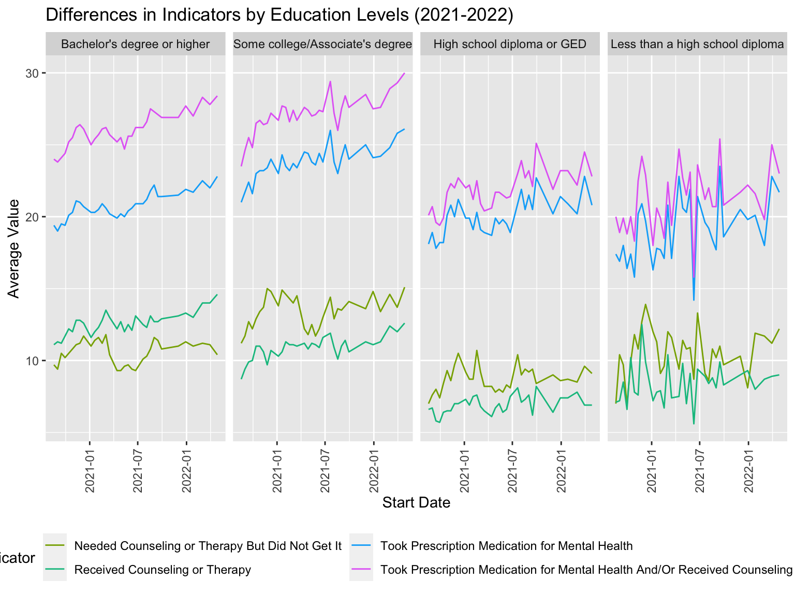

eda
hsin yi tseng
Setting Up
Loading the dataset
Since the the date variable does not format it correctly when I loaded the datasets as csv; therefore, I used as.Date() function modify the column name converting its contents into the Date data type.
tidy =
read.csv("data/tidydata.csv") |>
mutate(
start_dates = as.Date(start_dates))Differences in indicator variables by age group and education level
Age group
I started by filtering the tidy dataset to only include age and residence in the United States. Then, I renamed the “80 years and above” subgroup to 80+ years. Afterward, I plotted the age group graph; however, because the start_date variable overlapped, the legend was difficult to view when I plotted the graph. As a result, I rotated the x-axis labels vertically and stacked the legend to two columns.
#Filtering the dataset to age and united states
age_plot <- tidy |>
filter(group == "Age", state == "United States")
#Renaming the "80 years and above" subgroup to 80+ years
age_plot$subgroup[age_plot$subgroup == "80 years and above"] = "80+ years"
#Ploting the age group
age_plot |>
group_by(indicator, start_dates, subgroup) |>
ggplot(aes(x = start_dates, y = value, color = indicator)) +
geom_line() +
facet_grid(. ~ subgroup) +
labs(
x = "Start Date",
y = "Average Value",
title = "Differences in Indicators Among Age Groups (2021-2022)") +
theme_gray() +
theme(
legend.position = "bottom",
axis.text.x = element_text(angle = 90, vjust = 0.5, hjust = 1) # Rotate x-axis labels vertically
) +
scale_color_hue(h = c(100, 300)) +
guides(color = guide_legend(nrow = 2)) # Adding the legend guide adjustment
#View the age plot
age_plot## indicator
## 1 Took Prescription Medication for Mental Health
## 2 Took Prescription Medication for Mental Health
## 3 Took Prescription Medication for Mental Health
## 4 Took Prescription Medication for Mental Health
## 5 Took Prescription Medication for Mental Health
## 6 Took Prescription Medication for Mental Health
## 7 Took Prescription Medication for Mental Health
## 8 Received Counseling or Therapy
## 9 Received Counseling or Therapy
## 10 Received Counseling or Therapy
## 11 Received Counseling or Therapy
## 12 Received Counseling or Therapy
## 13 Received Counseling or Therapy
## 14 Received Counseling or Therapy
## 15 Took Prescription Medication for Mental Health And/Or Received Counseling or Therapy
## 16 Took Prescription Medication for Mental Health And/Or Received Counseling or Therapy
## 17 Took Prescription Medication for Mental Health And/Or Received Counseling or Therapy
## 18 Took Prescription Medication for Mental Health And/Or Received Counseling or Therapy
## 19 Took Prescription Medication for Mental Health And/Or Received Counseling or Therapy
## 20 Took Prescription Medication for Mental Health And/Or Received Counseling or Therapy
## 21 Took Prescription Medication for Mental Health And/Or Received Counseling or Therapy
## 22 Needed Counseling or Therapy But Did Not Get It
## 23 Needed Counseling or Therapy But Did Not Get It
## 24 Needed Counseling or Therapy But Did Not Get It
## 25 Needed Counseling or Therapy But Did Not Get It
## 26 Needed Counseling or Therapy But Did Not Get It
## 27 Needed Counseling or Therapy But Did Not Get It
## 28 Needed Counseling or Therapy But Did Not Get It
## 29 Took Prescription Medication for Mental Health
## 30 Took Prescription Medication for Mental Health
## 31 Took Prescription Medication for Mental Health
## 32 Took Prescription Medication for Mental Health
## 33 Took Prescription Medication for Mental Health
## 34 Took Prescription Medication for Mental Health
## 35 Took Prescription Medication for Mental Health
## 36 Received Counseling or Therapy
## 37 Received Counseling or Therapy
## 38 Received Counseling or Therapy
## 39 Received Counseling or Therapy
## 40 Received Counseling or Therapy
## 41 Received Counseling or Therapy
## 42 Received Counseling or Therapy
## 43 Took Prescription Medication for Mental Health And/Or Received Counseling or Therapy
## 44 Took Prescription Medication for Mental Health And/Or Received Counseling or Therapy
## 45 Took Prescription Medication for Mental Health And/Or Received Counseling or Therapy
## 46 Took Prescription Medication for Mental Health And/Or Received Counseling or Therapy
## 47 Took Prescription Medication for Mental Health And/Or Received Counseling or Therapy
## 48 Took Prescription Medication for Mental Health And/Or Received Counseling or Therapy
## 49 Took Prescription Medication for Mental Health And/Or Received Counseling or Therapy
## 50 Needed Counseling or Therapy But Did Not Get It
## 51 Needed Counseling or Therapy But Did Not Get It
## 52 Needed Counseling or Therapy But Did Not Get It
## 53 Needed Counseling or Therapy But Did Not Get It
## 54 Needed Counseling or Therapy But Did Not Get It
## 55 Needed Counseling or Therapy But Did Not Get It
## 56 Needed Counseling or Therapy But Did Not Get It
## 57 Took Prescription Medication for Mental Health
## 58 Took Prescription Medication for Mental Health
## 59 Took Prescription Medication for Mental Health
## 60 Took Prescription Medication for Mental Health
## 61 Took Prescription Medication for Mental Health
## 62 Took Prescription Medication for Mental Health
## 63 Took Prescription Medication for Mental Health
## 64 Received Counseling or Therapy
## 65 Received Counseling or Therapy
## 66 Received Counseling or Therapy
## 67 Received Counseling or Therapy
## 68 Received Counseling or Therapy
## 69 Received Counseling or Therapy
## 70 Received Counseling or Therapy
## 71 Took Prescription Medication for Mental Health And/Or Received Counseling or Therapy
## 72 Took Prescription Medication for Mental Health And/Or Received Counseling or Therapy
## 73 Took Prescription Medication for Mental Health And/Or Received Counseling or Therapy
## 74 Took Prescription Medication for Mental Health And/Or Received Counseling or Therapy
## 75 Took Prescription Medication for Mental Health And/Or Received Counseling or Therapy
## 76 Took Prescription Medication for Mental Health And/Or Received Counseling or Therapy
## 77 Took Prescription Medication for Mental Health And/Or Received Counseling or Therapy
## 78 Needed Counseling or Therapy But Did Not Get It
## 79 Needed Counseling or Therapy But Did Not Get It
## 80 Needed Counseling or Therapy But Did Not Get It
## 81 Needed Counseling or Therapy But Did Not Get It
## 82 Needed Counseling or Therapy But Did Not Get It
## 83 Needed Counseling or Therapy But Did Not Get It
## 84 Took Prescription Medication for Mental Health
## 85 Took Prescription Medication for Mental Health
## 86 Took Prescription Medication for Mental Health
## 87 Took Prescription Medication for Mental Health
## 88 Took Prescription Medication for Mental Health
## 89 Took Prescription Medication for Mental Health
## 90 Took Prescription Medication for Mental Health
## 91 Received Counseling or Therapy
## 92 Received Counseling or Therapy
## 93 Received Counseling or Therapy
## 94 Received Counseling or Therapy
## 95 Received Counseling or Therapy
## 96 Received Counseling or Therapy
## 97 Received Counseling or Therapy
## 98 Took Prescription Medication for Mental Health And/Or Received Counseling or Therapy
## 99 Took Prescription Medication for Mental Health And/Or Received Counseling or Therapy
## 100 Took Prescription Medication for Mental Health And/Or Received Counseling or Therapy
## 101 Took Prescription Medication for Mental Health And/Or Received Counseling or Therapy
## 102 Took Prescription Medication for Mental Health And/Or Received Counseling or Therapy
## 103 Took Prescription Medication for Mental Health And/Or Received Counseling or Therapy
## 104 Took Prescription Medication for Mental Health And/Or Received Counseling or Therapy
## 105 Needed Counseling or Therapy But Did Not Get It
## 106 Needed Counseling or Therapy But Did Not Get It
## 107 Needed Counseling or Therapy But Did Not Get It
## 108 Needed Counseling or Therapy But Did Not Get It
## 109 Needed Counseling or Therapy But Did Not Get It
## 110 Needed Counseling or Therapy But Did Not Get It
## 111 Needed Counseling or Therapy But Did Not Get It
## 112 Took Prescription Medication for Mental Health
## 113 Took Prescription Medication for Mental Health
## 114 Took Prescription Medication for Mental Health
## 115 Took Prescription Medication for Mental Health
## 116 Took Prescription Medication for Mental Health
## 117 Took Prescription Medication for Mental Health
## 118 Took Prescription Medication for Mental Health
## 119 Received Counseling or Therapy
## 120 Received Counseling or Therapy
## 121 Received Counseling or Therapy
## 122 Received Counseling or Therapy
## 123 Received Counseling or Therapy
## 124 Received Counseling or Therapy
## 125 Took Prescription Medication for Mental Health And/Or Received Counseling or Therapy
## 126 Took Prescription Medication for Mental Health And/Or Received Counseling or Therapy
## 127 Took Prescription Medication for Mental Health And/Or Received Counseling or Therapy
## 128 Took Prescription Medication for Mental Health And/Or Received Counseling or Therapy
## 129 Took Prescription Medication for Mental Health And/Or Received Counseling or Therapy
## 130 Took Prescription Medication for Mental Health And/Or Received Counseling or Therapy
## 131 Took Prescription Medication for Mental Health And/Or Received Counseling or Therapy
## 132 Needed Counseling or Therapy But Did Not Get It
## 133 Needed Counseling or Therapy But Did Not Get It
## 134 Needed Counseling or Therapy But Did Not Get It
## 135 Needed Counseling or Therapy But Did Not Get It
## 136 Needed Counseling or Therapy But Did Not Get It
## 137 Needed Counseling or Therapy But Did Not Get It
## 138 Needed Counseling or Therapy But Did Not Get It
## 139 Took Prescription Medication for Mental Health
## 140 Took Prescription Medication for Mental Health
## 141 Took Prescription Medication for Mental Health
## 142 Took Prescription Medication for Mental Health
## 143 Took Prescription Medication for Mental Health
## 144 Took Prescription Medication for Mental Health
## 145 Took Prescription Medication for Mental Health
## 146 Received Counseling or Therapy
## 147 Received Counseling or Therapy
## 148 Received Counseling or Therapy
## 149 Received Counseling or Therapy
## 150 Received Counseling or Therapy
## 151 Received Counseling or Therapy
## 152 Received Counseling or Therapy
## 153 Took Prescription Medication for Mental Health And/Or Received Counseling or Therapy
## 154 Took Prescription Medication for Mental Health And/Or Received Counseling or Therapy
## 155 Took Prescription Medication for Mental Health And/Or Received Counseling or Therapy
## 156 Took Prescription Medication for Mental Health And/Or Received Counseling or Therapy
## 157 Took Prescription Medication for Mental Health And/Or Received Counseling or Therapy
## 158 Took Prescription Medication for Mental Health And/Or Received Counseling or Therapy
## 159 Took Prescription Medication for Mental Health And/Or Received Counseling or Therapy
## 160 Needed Counseling or Therapy But Did Not Get It
## 161 Needed Counseling or Therapy But Did Not Get It
## 162 Needed Counseling or Therapy But Did Not Get It
## 163 Needed Counseling or Therapy But Did Not Get It
## 164 Needed Counseling or Therapy But Did Not Get It
## 165 Needed Counseling or Therapy But Did Not Get It
## 166 Took Prescription Medication for Mental Health
## 167 Took Prescription Medication for Mental Health
## 168 Took Prescription Medication for Mental Health
## 169 Took Prescription Medication for Mental Health
## 170 Took Prescription Medication for Mental Health
## 171 Took Prescription Medication for Mental Health
## 172 Took Prescription Medication for Mental Health
## 173 Received Counseling or Therapy
## 174 Received Counseling or Therapy
## 175 Received Counseling or Therapy
## 176 Received Counseling or Therapy
## 177 Received Counseling or Therapy
## 178 Received Counseling or Therapy
## 179 Received Counseling or Therapy
## 180 Took Prescription Medication for Mental Health And/Or Received Counseling or Therapy
## 181 Took Prescription Medication for Mental Health And/Or Received Counseling or Therapy
## 182 Took Prescription Medication for Mental Health And/Or Received Counseling or Therapy
## 183 Took Prescription Medication for Mental Health And/Or Received Counseling or Therapy
## 184 Took Prescription Medication for Mental Health And/Or Received Counseling or Therapy
## 185 Took Prescription Medication for Mental Health And/Or Received Counseling or Therapy
## 186 Took Prescription Medication for Mental Health And/Or Received Counseling or Therapy
## 187 Needed Counseling or Therapy But Did Not Get It
## 188 Needed Counseling or Therapy But Did Not Get It
## 189 Needed Counseling or Therapy But Did Not Get It
## 190 Needed Counseling or Therapy But Did Not Get It
## 191 Needed Counseling or Therapy But Did Not Get It
## 192 Needed Counseling or Therapy But Did Not Get It
## 193 Needed Counseling or Therapy But Did Not Get It
## 194 Took Prescription Medication for Mental Health
## 195 Took Prescription Medication for Mental Health
## 196 Took Prescription Medication for Mental Health
## 197 Took Prescription Medication for Mental Health
## 198 Took Prescription Medication for Mental Health
## 199 Took Prescription Medication for Mental Health
## 200 Took Prescription Medication for Mental Health
## 201 Received Counseling or Therapy
## 202 Received Counseling or Therapy
## 203 Received Counseling or Therapy
## 204 Received Counseling or Therapy
## 205 Received Counseling or Therapy
## 206 Received Counseling or Therapy
## 207 Took Prescription Medication for Mental Health And/Or Received Counseling or Therapy
## 208 Took Prescription Medication for Mental Health And/Or Received Counseling or Therapy
## 209 Took Prescription Medication for Mental Health And/Or Received Counseling or Therapy
## 210 Took Prescription Medication for Mental Health And/Or Received Counseling or Therapy
## 211 Took Prescription Medication for Mental Health And/Or Received Counseling or Therapy
## 212 Took Prescription Medication for Mental Health And/Or Received Counseling or Therapy
## 213 Took Prescription Medication for Mental Health And/Or Received Counseling or Therapy
## 214 Needed Counseling or Therapy But Did Not Get It
## 215 Needed Counseling or Therapy But Did Not Get It
## 216 Needed Counseling or Therapy But Did Not Get It
## 217 Needed Counseling or Therapy But Did Not Get It
## 218 Needed Counseling or Therapy But Did Not Get It
## 219 Needed Counseling or Therapy But Did Not Get It
## 220 Needed Counseling or Therapy But Did Not Get It
## 221 Took Prescription Medication for Mental Health
## 222 Took Prescription Medication for Mental Health
## 223 Took Prescription Medication for Mental Health
## 224 Took Prescription Medication for Mental Health
## 225 Took Prescription Medication for Mental Health
## 226 Took Prescription Medication for Mental Health
## 227 Took Prescription Medication for Mental Health
## 228 Received Counseling or Therapy
## 229 Received Counseling or Therapy
## 230 Received Counseling or Therapy
## 231 Received Counseling or Therapy
## 232 Received Counseling or Therapy
## 233 Received Counseling or Therapy
## 234 Received Counseling or Therapy
## 235 Took Prescription Medication for Mental Health And/Or Received Counseling or Therapy
## 236 Took Prescription Medication for Mental Health And/Or Received Counseling or Therapy
## 237 Took Prescription Medication for Mental Health And/Or Received Counseling or Therapy
## 238 Took Prescription Medication for Mental Health And/Or Received Counseling or Therapy
## 239 Took Prescription Medication for Mental Health And/Or Received Counseling or Therapy
## 240 Took Prescription Medication for Mental Health And/Or Received Counseling or Therapy
## 241 Took Prescription Medication for Mental Health And/Or Received Counseling or Therapy
## 242 Needed Counseling or Therapy But Did Not Get It
## 243 Needed Counseling or Therapy But Did Not Get It
## 244 Needed Counseling or Therapy But Did Not Get It
## 245 Needed Counseling or Therapy But Did Not Get It
## 246 Needed Counseling or Therapy But Did Not Get It
## 247 Needed Counseling or Therapy But Did Not Get It
## 248 Needed Counseling or Therapy But Did Not Get It
## 249 Took Prescription Medication for Mental Health
## 250 Took Prescription Medication for Mental Health
## 251 Took Prescription Medication for Mental Health
## 252 Took Prescription Medication for Mental Health
## 253 Took Prescription Medication for Mental Health
## 254 Took Prescription Medication for Mental Health
## 255 Took Prescription Medication for Mental Health
## 256 Received Counseling or Therapy
## 257 Received Counseling or Therapy
## 258 Received Counseling or Therapy
## 259 Received Counseling or Therapy
## 260 Received Counseling or Therapy
## 261 Received Counseling or Therapy
## 262 Received Counseling or Therapy
## 263 Took Prescription Medication for Mental Health And/Or Received Counseling or Therapy
## 264 Took Prescription Medication for Mental Health And/Or Received Counseling or Therapy
## 265 Took Prescription Medication for Mental Health And/Or Received Counseling or Therapy
## 266 Took Prescription Medication for Mental Health And/Or Received Counseling or Therapy
## 267 Took Prescription Medication for Mental Health And/Or Received Counseling or Therapy
## 268 Took Prescription Medication for Mental Health And/Or Received Counseling or Therapy
## 269 Took Prescription Medication for Mental Health And/Or Received Counseling or Therapy
## 270 Needed Counseling or Therapy But Did Not Get It
## 271 Needed Counseling or Therapy But Did Not Get It
## 272 Needed Counseling or Therapy But Did Not Get It
## 273 Needed Counseling or Therapy But Did Not Get It
## 274 Needed Counseling or Therapy But Did Not Get It
## 275 Needed Counseling or Therapy But Did Not Get It
## 276 Needed Counseling or Therapy But Did Not Get It
## 277 Took Prescription Medication for Mental Health
## 278 Took Prescription Medication for Mental Health
## 279 Took Prescription Medication for Mental Health
## 280 Took Prescription Medication for Mental Health
## 281 Took Prescription Medication for Mental Health
## 282 Took Prescription Medication for Mental Health
## 283 Took Prescription Medication for Mental Health
## 284 Received Counseling or Therapy
## 285 Received Counseling or Therapy
## 286 Received Counseling or Therapy
## 287 Received Counseling or Therapy
## 288 Received Counseling or Therapy
## 289 Received Counseling or Therapy
## 290 Received Counseling or Therapy
## 291 Took Prescription Medication for Mental Health And/Or Received Counseling or Therapy
## 292 Took Prescription Medication for Mental Health And/Or Received Counseling or Therapy
## 293 Took Prescription Medication for Mental Health And/Or Received Counseling or Therapy
## 294 Took Prescription Medication for Mental Health And/Or Received Counseling or Therapy
## 295 Took Prescription Medication for Mental Health And/Or Received Counseling or Therapy
## 296 Took Prescription Medication for Mental Health And/Or Received Counseling or Therapy
## 297 Took Prescription Medication for Mental Health And/Or Received Counseling or Therapy
## 298 Needed Counseling or Therapy But Did Not Get It
## 299 Needed Counseling or Therapy But Did Not Get It
## 300 Needed Counseling or Therapy But Did Not Get It
## 301 Needed Counseling or Therapy But Did Not Get It
## 302 Needed Counseling or Therapy But Did Not Get It
## 303 Needed Counseling or Therapy But Did Not Get It
## 304 Needed Counseling or Therapy But Did Not Get It
## 305 Took Prescription Medication for Mental Health
## 306 Took Prescription Medication for Mental Health
## 307 Took Prescription Medication for Mental Health
## 308 Took Prescription Medication for Mental Health
## 309 Took Prescription Medication for Mental Health
## 310 Took Prescription Medication for Mental Health
## 311 Took Prescription Medication for Mental Health
## 312 Received Counseling or Therapy
## 313 Received Counseling or Therapy
## 314 Received Counseling or Therapy
## 315 Received Counseling or Therapy
## 316 Received Counseling or Therapy
## 317 Received Counseling or Therapy
## 318 Received Counseling or Therapy
## 319 Took Prescription Medication for Mental Health And/Or Received Counseling or Therapy
## 320 Took Prescription Medication for Mental Health And/Or Received Counseling or Therapy
## 321 Took Prescription Medication for Mental Health And/Or Received Counseling or Therapy
## 322 Took Prescription Medication for Mental Health And/Or Received Counseling or Therapy
## 323 Took Prescription Medication for Mental Health And/Or Received Counseling or Therapy
## 324 Took Prescription Medication for Mental Health And/Or Received Counseling or Therapy
## 325 Took Prescription Medication for Mental Health And/Or Received Counseling or Therapy
## 326 Needed Counseling or Therapy But Did Not Get It
## 327 Needed Counseling or Therapy But Did Not Get It
## 328 Needed Counseling or Therapy But Did Not Get It
## 329 Needed Counseling or Therapy But Did Not Get It
## 330 Needed Counseling or Therapy But Did Not Get It
## 331 Needed Counseling or Therapy But Did Not Get It
## 332 Needed Counseling or Therapy But Did Not Get It
## 333 Took Prescription Medication for Mental Health
## 334 Took Prescription Medication for Mental Health
## 335 Took Prescription Medication for Mental Health
## 336 Took Prescription Medication for Mental Health
## 337 Took Prescription Medication for Mental Health
## 338 Took Prescription Medication for Mental Health
## 339 Took Prescription Medication for Mental Health
## 340 Received Counseling or Therapy
## 341 Received Counseling or Therapy
## 342 Received Counseling or Therapy
## 343 Received Counseling or Therapy
## 344 Received Counseling or Therapy
## 345 Received Counseling or Therapy
## 346 Received Counseling or Therapy
## 347 Took Prescription Medication for Mental Health And/Or Received Counseling or Therapy
## 348 Took Prescription Medication for Mental Health And/Or Received Counseling or Therapy
## 349 Took Prescription Medication for Mental Health And/Or Received Counseling or Therapy
## 350 Took Prescription Medication for Mental Health And/Or Received Counseling or Therapy
## 351 Took Prescription Medication for Mental Health And/Or Received Counseling or Therapy
## 352 Took Prescription Medication for Mental Health And/Or Received Counseling or Therapy
## 353 Took Prescription Medication for Mental Health And/Or Received Counseling or Therapy
## 354 Needed Counseling or Therapy But Did Not Get It
## 355 Needed Counseling or Therapy But Did Not Get It
## 356 Needed Counseling or Therapy But Did Not Get It
## 357 Needed Counseling or Therapy But Did Not Get It
## 358 Needed Counseling or Therapy But Did Not Get It
## 359 Needed Counseling or Therapy But Did Not Get It
## 360 Needed Counseling or Therapy But Did Not Get It
## 361 Took Prescription Medication for Mental Health
## 362 Took Prescription Medication for Mental Health
## 363 Took Prescription Medication for Mental Health
## 364 Took Prescription Medication for Mental Health
## 365 Took Prescription Medication for Mental Health
## 366 Took Prescription Medication for Mental Health
## 367 Took Prescription Medication for Mental Health
## 368 Received Counseling or Therapy
## 369 Received Counseling or Therapy
## 370 Received Counseling or Therapy
## 371 Received Counseling or Therapy
## 372 Received Counseling or Therapy
## 373 Received Counseling or Therapy
## 374 Took Prescription Medication for Mental Health And/Or Received Counseling or Therapy
## 375 Took Prescription Medication for Mental Health And/Or Received Counseling or Therapy
## 376 Took Prescription Medication for Mental Health And/Or Received Counseling or Therapy
## 377 Took Prescription Medication for Mental Health And/Or Received Counseling or Therapy
## 378 Took Prescription Medication for Mental Health And/Or Received Counseling or Therapy
## 379 Took Prescription Medication for Mental Health And/Or Received Counseling or Therapy
## 380 Took Prescription Medication for Mental Health And/Or Received Counseling or Therapy
## 381 Needed Counseling or Therapy But Did Not Get It
## 382 Needed Counseling or Therapy But Did Not Get It
## 383 Needed Counseling or Therapy But Did Not Get It
## 384 Needed Counseling or Therapy But Did Not Get It
## 385 Needed Counseling or Therapy But Did Not Get It
## 386 Needed Counseling or Therapy But Did Not Get It
## 387 Needed Counseling or Therapy But Did Not Get It
## 388 Took Prescription Medication for Mental Health
## 389 Took Prescription Medication for Mental Health
## 390 Took Prescription Medication for Mental Health
## 391 Took Prescription Medication for Mental Health
## 392 Took Prescription Medication for Mental Health
## 393 Took Prescription Medication for Mental Health
## 394 Took Prescription Medication for Mental Health
## 395 Received Counseling or Therapy
## 396 Received Counseling or Therapy
## 397 Received Counseling or Therapy
## 398 Received Counseling or Therapy
## 399 Received Counseling or Therapy
## 400 Received Counseling or Therapy
## 401 Received Counseling or Therapy
## 402 Took Prescription Medication for Mental Health And/Or Received Counseling or Therapy
## 403 Took Prescription Medication for Mental Health And/Or Received Counseling or Therapy
## 404 Took Prescription Medication for Mental Health And/Or Received Counseling or Therapy
## 405 Took Prescription Medication for Mental Health And/Or Received Counseling or Therapy
## 406 Took Prescription Medication for Mental Health And/Or Received Counseling or Therapy
## 407 Took Prescription Medication for Mental Health And/Or Received Counseling or Therapy
## 408 Took Prescription Medication for Mental Health And/Or Received Counseling or Therapy
## 409 Needed Counseling or Therapy But Did Not Get It
## 410 Needed Counseling or Therapy But Did Not Get It
## 411 Needed Counseling or Therapy But Did Not Get It
## 412 Needed Counseling or Therapy But Did Not Get It
## 413 Needed Counseling or Therapy But Did Not Get It
## 414 Needed Counseling or Therapy But Did Not Get It
## 415 Needed Counseling or Therapy But Did Not Get It
## 416 Took Prescription Medication for Mental Health
## 417 Took Prescription Medication for Mental Health
## 418 Took Prescription Medication for Mental Health
## 419 Took Prescription Medication for Mental Health
## 420 Took Prescription Medication for Mental Health
## 421 Took Prescription Medication for Mental Health
## 422 Took Prescription Medication for Mental Health
## 423 Received Counseling or Therapy
## 424 Received Counseling or Therapy
## 425 Received Counseling or Therapy
## 426 Received Counseling or Therapy
## 427 Received Counseling or Therapy
## 428 Received Counseling or Therapy
## 429 Took Prescription Medication for Mental Health And/Or Received Counseling or Therapy
## 430 Took Prescription Medication for Mental Health And/Or Received Counseling or Therapy
## 431 Took Prescription Medication for Mental Health And/Or Received Counseling or Therapy
## 432 Took Prescription Medication for Mental Health And/Or Received Counseling or Therapy
## 433 Took Prescription Medication for Mental Health And/Or Received Counseling or Therapy
## 434 Took Prescription Medication for Mental Health And/Or Received Counseling or Therapy
## 435 Took Prescription Medication for Mental Health And/Or Received Counseling or Therapy
## 436 Needed Counseling or Therapy But Did Not Get It
## 437 Needed Counseling or Therapy But Did Not Get It
## 438 Needed Counseling or Therapy But Did Not Get It
## 439 Needed Counseling or Therapy But Did Not Get It
## 440 Needed Counseling or Therapy But Did Not Get It
## 441 Needed Counseling or Therapy But Did Not Get It
## 442 Took Prescription Medication for Mental Health
## 443 Took Prescription Medication for Mental Health
## 444 Took Prescription Medication for Mental Health
## 445 Took Prescription Medication for Mental Health
## 446 Took Prescription Medication for Mental Health
## 447 Took Prescription Medication for Mental Health
## 448 Took Prescription Medication for Mental Health
## 449 Received Counseling or Therapy
## 450 Received Counseling or Therapy
## 451 Received Counseling or Therapy
## 452 Received Counseling or Therapy
## 453 Received Counseling or Therapy
## 454 Received Counseling or Therapy
## 455 Took Prescription Medication for Mental Health And/Or Received Counseling or Therapy
## 456 Took Prescription Medication for Mental Health And/Or Received Counseling or Therapy
## 457 Took Prescription Medication for Mental Health And/Or Received Counseling or Therapy
## 458 Took Prescription Medication for Mental Health And/Or Received Counseling or Therapy
## 459 Took Prescription Medication for Mental Health And/Or Received Counseling or Therapy
## 460 Took Prescription Medication for Mental Health And/Or Received Counseling or Therapy
## 461 Took Prescription Medication for Mental Health And/Or Received Counseling or Therapy
## 462 Needed Counseling or Therapy But Did Not Get It
## 463 Needed Counseling or Therapy But Did Not Get It
## 464 Needed Counseling or Therapy But Did Not Get It
## 465 Needed Counseling or Therapy But Did Not Get It
## 466 Needed Counseling or Therapy But Did Not Get It
## 467 Needed Counseling or Therapy But Did Not Get It
## 468 Took Prescription Medication for Mental Health
## 469 Took Prescription Medication for Mental Health
## 470 Took Prescription Medication for Mental Health
## 471 Took Prescription Medication for Mental Health
## 472 Took Prescription Medication for Mental Health
## 473 Took Prescription Medication for Mental Health
## 474 Took Prescription Medication for Mental Health
## 475 Received Counseling or Therapy
## 476 Received Counseling or Therapy
## 477 Received Counseling or Therapy
## 478 Received Counseling or Therapy
## 479 Received Counseling or Therapy
## 480 Received Counseling or Therapy
## 481 Took Prescription Medication for Mental Health And/Or Received Counseling or Therapy
## 482 Took Prescription Medication for Mental Health And/Or Received Counseling or Therapy
## 483 Took Prescription Medication for Mental Health And/Or Received Counseling or Therapy
## 484 Took Prescription Medication for Mental Health And/Or Received Counseling or Therapy
## 485 Took Prescription Medication for Mental Health And/Or Received Counseling or Therapy
## 486 Took Prescription Medication for Mental Health And/Or Received Counseling or Therapy
## 487 Took Prescription Medication for Mental Health And/Or Received Counseling or Therapy
## 488 Needed Counseling or Therapy But Did Not Get It
## 489 Needed Counseling or Therapy But Did Not Get It
## 490 Needed Counseling or Therapy But Did Not Get It
## 491 Needed Counseling or Therapy But Did Not Get It
## 492 Needed Counseling or Therapy But Did Not Get It
## 493 Needed Counseling or Therapy But Did Not Get It
## 494 Needed Counseling or Therapy But Did Not Get It
## 495 Took Prescription Medication for Mental Health
## 496 Took Prescription Medication for Mental Health
## 497 Took Prescription Medication for Mental Health
## 498 Took Prescription Medication for Mental Health
## 499 Took Prescription Medication for Mental Health
## 500 Took Prescription Medication for Mental Health
## 501 Took Prescription Medication for Mental Health
## 502 Received Counseling or Therapy
## 503 Received Counseling or Therapy
## 504 Received Counseling or Therapy
## 505 Received Counseling or Therapy
## 506 Received Counseling or Therapy
## 507 Received Counseling or Therapy
## 508 Received Counseling or Therapy
## 509 Took Prescription Medication for Mental Health And/Or Received Counseling or Therapy
## 510 Took Prescription Medication for Mental Health And/Or Received Counseling or Therapy
## 511 Took Prescription Medication for Mental Health And/Or Received Counseling or Therapy
## 512 Took Prescription Medication for Mental Health And/Or Received Counseling or Therapy
## 513 Took Prescription Medication for Mental Health And/Or Received Counseling or Therapy
## 514 Took Prescription Medication for Mental Health And/Or Received Counseling or Therapy
## 515 Took Prescription Medication for Mental Health And/Or Received Counseling or Therapy
## 516 Needed Counseling or Therapy But Did Not Get It
## 517 Needed Counseling or Therapy But Did Not Get It
## 518 Needed Counseling or Therapy But Did Not Get It
## 519 Needed Counseling or Therapy But Did Not Get It
## 520 Needed Counseling or Therapy But Did Not Get It
## 521 Needed Counseling or Therapy But Did Not Get It
## 522 Needed Counseling or Therapy But Did Not Get It
## 523 Took Prescription Medication for Mental Health
## 524 Took Prescription Medication for Mental Health
## 525 Took Prescription Medication for Mental Health
## 526 Took Prescription Medication for Mental Health
## 527 Took Prescription Medication for Mental Health
## 528 Took Prescription Medication for Mental Health
## 529 Took Prescription Medication for Mental Health
## 530 Received Counseling or Therapy
## 531 Received Counseling or Therapy
## 532 Received Counseling or Therapy
## 533 Received Counseling or Therapy
## 534 Received Counseling or Therapy
## 535 Received Counseling or Therapy
## 536 Received Counseling or Therapy
## 537 Took Prescription Medication for Mental Health And/Or Received Counseling or Therapy
## 538 Took Prescription Medication for Mental Health And/Or Received Counseling or Therapy
## 539 Took Prescription Medication for Mental Health And/Or Received Counseling or Therapy
## 540 Took Prescription Medication for Mental Health And/Or Received Counseling or Therapy
## 541 Took Prescription Medication for Mental Health And/Or Received Counseling or Therapy
## 542 Took Prescription Medication for Mental Health And/Or Received Counseling or Therapy
## 543 Took Prescription Medication for Mental Health And/Or Received Counseling or Therapy
## 544 Needed Counseling or Therapy But Did Not Get It
## 545 Needed Counseling or Therapy But Did Not Get It
## 546 Needed Counseling or Therapy But Did Not Get It
## 547 Needed Counseling or Therapy But Did Not Get It
## 548 Needed Counseling or Therapy But Did Not Get It
## 549 Needed Counseling or Therapy But Did Not Get It
## 550 Needed Counseling or Therapy But Did Not Get It
## 551 Took Prescription Medication for Mental Health
## 552 Took Prescription Medication for Mental Health
## 553 Took Prescription Medication for Mental Health
## 554 Took Prescription Medication for Mental Health
## 555 Took Prescription Medication for Mental Health
## 556 Took Prescription Medication for Mental Health
## 557 Took Prescription Medication for Mental Health
## 558 Received Counseling or Therapy
## 559 Received Counseling or Therapy
## 560 Received Counseling or Therapy
## 561 Received Counseling or Therapy
## 562 Received Counseling or Therapy
## 563 Received Counseling or Therapy
## 564 Received Counseling or Therapy
## 565 Took Prescription Medication for Mental Health And/Or Received Counseling or Therapy
## 566 Took Prescription Medication for Mental Health And/Or Received Counseling or Therapy
## 567 Took Prescription Medication for Mental Health And/Or Received Counseling or Therapy
## 568 Took Prescription Medication for Mental Health And/Or Received Counseling or Therapy
## 569 Took Prescription Medication for Mental Health And/Or Received Counseling or Therapy
## 570 Took Prescription Medication for Mental Health And/Or Received Counseling or Therapy
## 571 Took Prescription Medication for Mental Health And/Or Received Counseling or Therapy
## 572 Needed Counseling or Therapy But Did Not Get It
## 573 Needed Counseling or Therapy But Did Not Get It
## 574 Needed Counseling or Therapy But Did Not Get It
## 575 Needed Counseling or Therapy But Did Not Get It
## 576 Needed Counseling or Therapy But Did Not Get It
## 577 Needed Counseling or Therapy But Did Not Get It
## 578 Needed Counseling or Therapy But Did Not Get It
## 579 Took Prescription Medication for Mental Health
## 580 Took Prescription Medication for Mental Health
## 581 Took Prescription Medication for Mental Health
## 582 Took Prescription Medication for Mental Health
## 583 Took Prescription Medication for Mental Health
## 584 Took Prescription Medication for Mental Health
## 585 Took Prescription Medication for Mental Health
## 586 Received Counseling or Therapy
## 587 Received Counseling or Therapy
## 588 Received Counseling or Therapy
## 589 Received Counseling or Therapy
## 590 Received Counseling or Therapy
## 591 Received Counseling or Therapy
## 592 Received Counseling or Therapy
## 593 Took Prescription Medication for Mental Health And/Or Received Counseling or Therapy
## 594 Took Prescription Medication for Mental Health And/Or Received Counseling or Therapy
## 595 Took Prescription Medication for Mental Health And/Or Received Counseling or Therapy
## 596 Took Prescription Medication for Mental Health And/Or Received Counseling or Therapy
## 597 Took Prescription Medication for Mental Health And/Or Received Counseling or Therapy
## 598 Took Prescription Medication for Mental Health And/Or Received Counseling or Therapy
## 599 Took Prescription Medication for Mental Health And/Or Received Counseling or Therapy
## 600 Needed Counseling or Therapy But Did Not Get It
## 601 Needed Counseling or Therapy But Did Not Get It
## 602 Needed Counseling or Therapy But Did Not Get It
## 603 Needed Counseling or Therapy But Did Not Get It
## 604 Needed Counseling or Therapy But Did Not Get It
## 605 Needed Counseling or Therapy But Did Not Get It
## 606 Needed Counseling or Therapy But Did Not Get It
## 607 Took Prescription Medication for Mental Health
## 608 Took Prescription Medication for Mental Health
## 609 Took Prescription Medication for Mental Health
## 610 Took Prescription Medication for Mental Health
## 611 Took Prescription Medication for Mental Health
## 612 Took Prescription Medication for Mental Health
## 613 Took Prescription Medication for Mental Health
## 614 Received Counseling or Therapy
## 615 Received Counseling or Therapy
## 616 Received Counseling or Therapy
## 617 Received Counseling or Therapy
## 618 Received Counseling or Therapy
## 619 Received Counseling or Therapy
## 620 Received Counseling or Therapy
## 621 Took Prescription Medication for Mental Health And/Or Received Counseling or Therapy
## 622 Took Prescription Medication for Mental Health And/Or Received Counseling or Therapy
## 623 Took Prescription Medication for Mental Health And/Or Received Counseling or Therapy
## 624 Took Prescription Medication for Mental Health And/Or Received Counseling or Therapy
## 625 Took Prescription Medication for Mental Health And/Or Received Counseling or Therapy
## 626 Took Prescription Medication for Mental Health And/Or Received Counseling or Therapy
## 627 Took Prescription Medication for Mental Health And/Or Received Counseling or Therapy
## 628 Needed Counseling or Therapy But Did Not Get It
## 629 Needed Counseling or Therapy But Did Not Get It
## 630 Needed Counseling or Therapy But Did Not Get It
## 631 Needed Counseling or Therapy But Did Not Get It
## 632 Needed Counseling or Therapy But Did Not Get It
## 633 Needed Counseling or Therapy But Did Not Get It
## 634 Needed Counseling or Therapy But Did Not Get It
## 635 Took Prescription Medication for Mental Health
## 636 Took Prescription Medication for Mental Health
## 637 Took Prescription Medication for Mental Health
## 638 Took Prescription Medication for Mental Health
## 639 Took Prescription Medication for Mental Health
## 640 Took Prescription Medication for Mental Health
## 641 Took Prescription Medication for Mental Health
## 642 Received Counseling or Therapy
## 643 Received Counseling or Therapy
## 644 Received Counseling or Therapy
## 645 Received Counseling or Therapy
## 646 Received Counseling or Therapy
## 647 Received Counseling or Therapy
## 648 Received Counseling or Therapy
## 649 Took Prescription Medication for Mental Health And/Or Received Counseling or Therapy
## 650 Took Prescription Medication for Mental Health And/Or Received Counseling or Therapy
## 651 Took Prescription Medication for Mental Health And/Or Received Counseling or Therapy
## 652 Took Prescription Medication for Mental Health And/Or Received Counseling or Therapy
## 653 Took Prescription Medication for Mental Health And/Or Received Counseling or Therapy
## 654 Took Prescription Medication for Mental Health And/Or Received Counseling or Therapy
## 655 Took Prescription Medication for Mental Health And/Or Received Counseling or Therapy
## 656 Needed Counseling or Therapy But Did Not Get It
## 657 Needed Counseling or Therapy But Did Not Get It
## 658 Needed Counseling or Therapy But Did Not Get It
## 659 Needed Counseling or Therapy But Did Not Get It
## 660 Needed Counseling or Therapy But Did Not Get It
## 661 Needed Counseling or Therapy But Did Not Get It
## 662 Took Prescription Medication for Mental Health
## 663 Took Prescription Medication for Mental Health
## 664 Took Prescription Medication for Mental Health
## 665 Took Prescription Medication for Mental Health
## 666 Took Prescription Medication for Mental Health
## 667 Took Prescription Medication for Mental Health
## 668 Took Prescription Medication for Mental Health
## 669 Received Counseling or Therapy
## 670 Received Counseling or Therapy
## 671 Received Counseling or Therapy
## 672 Received Counseling or Therapy
## 673 Received Counseling or Therapy
## 674 Received Counseling or Therapy
## 675 Received Counseling or Therapy
## 676 Took Prescription Medication for Mental Health And/Or Received Counseling or Therapy
## 677 Took Prescription Medication for Mental Health And/Or Received Counseling or Therapy
## 678 Took Prescription Medication for Mental Health And/Or Received Counseling or Therapy
## 679 Took Prescription Medication for Mental Health And/Or Received Counseling or Therapy
## 680 Took Prescription Medication for Mental Health And/Or Received Counseling or Therapy
## 681 Took Prescription Medication for Mental Health And/Or Received Counseling or Therapy
## 682 Took Prescription Medication for Mental Health And/Or Received Counseling or Therapy
## 683 Needed Counseling or Therapy But Did Not Get It
## 684 Needed Counseling or Therapy But Did Not Get It
## 685 Needed Counseling or Therapy But Did Not Get It
## 686 Needed Counseling or Therapy But Did Not Get It
## 687 Needed Counseling or Therapy But Did Not Get It
## 688 Needed Counseling or Therapy But Did Not Get It
## 689 Needed Counseling or Therapy But Did Not Get It
## 690 Took Prescription Medication for Mental Health
## 691 Took Prescription Medication for Mental Health
## 692 Took Prescription Medication for Mental Health
## 693 Took Prescription Medication for Mental Health
## 694 Took Prescription Medication for Mental Health
## 695 Took Prescription Medication for Mental Health
## 696 Took Prescription Medication for Mental Health
## 697 Received Counseling or Therapy
## 698 Received Counseling or Therapy
## 699 Received Counseling or Therapy
## 700 Received Counseling or Therapy
## 701 Received Counseling or Therapy
## 702 Received Counseling or Therapy
## 703 Received Counseling or Therapy
## 704 Took Prescription Medication for Mental Health And/Or Received Counseling or Therapy
## 705 Took Prescription Medication for Mental Health And/Or Received Counseling or Therapy
## 706 Took Prescription Medication for Mental Health And/Or Received Counseling or Therapy
## 707 Took Prescription Medication for Mental Health And/Or Received Counseling or Therapy
## 708 Took Prescription Medication for Mental Health And/Or Received Counseling or Therapy
## 709 Took Prescription Medication for Mental Health And/Or Received Counseling or Therapy
## 710 Took Prescription Medication for Mental Health And/Or Received Counseling or Therapy
## 711 Needed Counseling or Therapy But Did Not Get It
## 712 Needed Counseling or Therapy But Did Not Get It
## 713 Needed Counseling or Therapy But Did Not Get It
## 714 Needed Counseling or Therapy But Did Not Get It
## 715 Needed Counseling or Therapy But Did Not Get It
## 716 Needed Counseling or Therapy But Did Not Get It
## 717 Needed Counseling or Therapy But Did Not Get It
## 718 Took Prescription Medication for Mental Health
## 719 Took Prescription Medication for Mental Health
## 720 Took Prescription Medication for Mental Health
## 721 Took Prescription Medication for Mental Health
## 722 Took Prescription Medication for Mental Health
## 723 Took Prescription Medication for Mental Health
## 724 Took Prescription Medication for Mental Health
## 725 Received Counseling or Therapy
## 726 Received Counseling or Therapy
## 727 Received Counseling or Therapy
## 728 Received Counseling or Therapy
## 729 Received Counseling or Therapy
## 730 Received Counseling or Therapy
## 731 Received Counseling or Therapy
## 732 Took Prescription Medication for Mental Health And/Or Received Counseling or Therapy
## 733 Took Prescription Medication for Mental Health And/Or Received Counseling or Therapy
## 734 Took Prescription Medication for Mental Health And/Or Received Counseling or Therapy
## 735 Took Prescription Medication for Mental Health And/Or Received Counseling or Therapy
## 736 Took Prescription Medication for Mental Health And/Or Received Counseling or Therapy
## 737 Took Prescription Medication for Mental Health And/Or Received Counseling or Therapy
## 738 Took Prescription Medication for Mental Health And/Or Received Counseling or Therapy
## 739 Needed Counseling or Therapy But Did Not Get It
## 740 Needed Counseling or Therapy But Did Not Get It
## 741 Needed Counseling or Therapy But Did Not Get It
## 742 Needed Counseling or Therapy But Did Not Get It
## 743 Needed Counseling or Therapy But Did Not Get It
## 744 Needed Counseling or Therapy But Did Not Get It
## 745 Needed Counseling or Therapy But Did Not Get It
## 746 Took Prescription Medication for Mental Health
## 747 Took Prescription Medication for Mental Health
## 748 Took Prescription Medication for Mental Health
## 749 Took Prescription Medication for Mental Health
## 750 Took Prescription Medication for Mental Health
## 751 Took Prescription Medication for Mental Health
## 752 Took Prescription Medication for Mental Health
## 753 Received Counseling or Therapy
## 754 Received Counseling or Therapy
## 755 Received Counseling or Therapy
## 756 Received Counseling or Therapy
## 757 Received Counseling or Therapy
## 758 Received Counseling or Therapy
## 759 Received Counseling or Therapy
## 760 Took Prescription Medication for Mental Health And/Or Received Counseling or Therapy
## 761 Took Prescription Medication for Mental Health And/Or Received Counseling or Therapy
## 762 Took Prescription Medication for Mental Health And/Or Received Counseling or Therapy
## 763 Took Prescription Medication for Mental Health And/Or Received Counseling or Therapy
## 764 Took Prescription Medication for Mental Health And/Or Received Counseling or Therapy
## 765 Took Prescription Medication for Mental Health And/Or Received Counseling or Therapy
## 766 Took Prescription Medication for Mental Health And/Or Received Counseling or Therapy
## 767 Needed Counseling or Therapy But Did Not Get It
## 768 Needed Counseling or Therapy But Did Not Get It
## 769 Needed Counseling or Therapy But Did Not Get It
## 770 Needed Counseling or Therapy But Did Not Get It
## 771 Needed Counseling or Therapy But Did Not Get It
## 772 Needed Counseling or Therapy But Did Not Get It
## 773 Took Prescription Medication for Mental Health
## 774 Took Prescription Medication for Mental Health
## 775 Took Prescription Medication for Mental Health
## 776 Took Prescription Medication for Mental Health
## 777 Took Prescription Medication for Mental Health
## 778 Took Prescription Medication for Mental Health
## 779 Took Prescription Medication for Mental Health
## 780 Received Counseling or Therapy
## 781 Received Counseling or Therapy
## 782 Received Counseling or Therapy
## 783 Received Counseling or Therapy
## 784 Received Counseling or Therapy
## 785 Received Counseling or Therapy
## 786 Received Counseling or Therapy
## 787 Took Prescription Medication for Mental Health And/Or Received Counseling or Therapy
## 788 Took Prescription Medication for Mental Health And/Or Received Counseling or Therapy
## 789 Took Prescription Medication for Mental Health And/Or Received Counseling or Therapy
## 790 Took Prescription Medication for Mental Health And/Or Received Counseling or Therapy
## 791 Took Prescription Medication for Mental Health And/Or Received Counseling or Therapy
## 792 Took Prescription Medication for Mental Health And/Or Received Counseling or Therapy
## 793 Took Prescription Medication for Mental Health And/Or Received Counseling or Therapy
## 794 Needed Counseling or Therapy But Did Not Get It
## 795 Needed Counseling or Therapy But Did Not Get It
## 796 Needed Counseling or Therapy But Did Not Get It
## 797 Needed Counseling or Therapy But Did Not Get It
## 798 Needed Counseling or Therapy But Did Not Get It
## 799 Needed Counseling or Therapy But Did Not Get It
## 800 Needed Counseling or Therapy But Did Not Get It
## 801 Took Prescription Medication for Mental Health
## 802 Took Prescription Medication for Mental Health
## 803 Took Prescription Medication for Mental Health
## 804 Took Prescription Medication for Mental Health
## 805 Took Prescription Medication for Mental Health
## 806 Took Prescription Medication for Mental Health
## 807 Took Prescription Medication for Mental Health
## 808 Received Counseling or Therapy
## 809 Received Counseling or Therapy
## 810 Received Counseling or Therapy
## 811 Received Counseling or Therapy
## 812 Received Counseling or Therapy
## 813 Received Counseling or Therapy
## 814 Received Counseling or Therapy
## 815 Took Prescription Medication for Mental Health And/Or Received Counseling or Therapy
## 816 Took Prescription Medication for Mental Health And/Or Received Counseling or Therapy
## 817 Took Prescription Medication for Mental Health And/Or Received Counseling or Therapy
## 818 Took Prescription Medication for Mental Health And/Or Received Counseling or Therapy
## 819 Took Prescription Medication for Mental Health And/Or Received Counseling or Therapy
## 820 Took Prescription Medication for Mental Health And/Or Received Counseling or Therapy
## 821 Took Prescription Medication for Mental Health And/Or Received Counseling or Therapy
## 822 Needed Counseling or Therapy But Did Not Get It
## 823 Needed Counseling or Therapy But Did Not Get It
## 824 Needed Counseling or Therapy But Did Not Get It
## 825 Needed Counseling or Therapy But Did Not Get It
## 826 Needed Counseling or Therapy But Did Not Get It
## 827 Needed Counseling or Therapy But Did Not Get It
## 828 Needed Counseling or Therapy But Did Not Get It
## 829 Took Prescription Medication for Mental Health
## 830 Took Prescription Medication for Mental Health
## 831 Took Prescription Medication for Mental Health
## 832 Took Prescription Medication for Mental Health
## 833 Took Prescription Medication for Mental Health
## 834 Took Prescription Medication for Mental Health
## 835 Took Prescription Medication for Mental Health
## 836 Received Counseling or Therapy
## 837 Received Counseling or Therapy
## 838 Received Counseling or Therapy
## 839 Received Counseling or Therapy
## 840 Received Counseling or Therapy
## 841 Received Counseling or Therapy
## 842 Received Counseling or Therapy
## 843 Took Prescription Medication for Mental Health And/Or Received Counseling or Therapy
## 844 Took Prescription Medication for Mental Health And/Or Received Counseling or Therapy
## 845 Took Prescription Medication for Mental Health And/Or Received Counseling or Therapy
## 846 Took Prescription Medication for Mental Health And/Or Received Counseling or Therapy
## 847 Took Prescription Medication for Mental Health And/Or Received Counseling or Therapy
## 848 Took Prescription Medication for Mental Health And/Or Received Counseling or Therapy
## 849 Took Prescription Medication for Mental Health And/Or Received Counseling or Therapy
## 850 Needed Counseling or Therapy But Did Not Get It
## 851 Needed Counseling or Therapy But Did Not Get It
## 852 Needed Counseling or Therapy But Did Not Get It
## 853 Needed Counseling or Therapy But Did Not Get It
## 854 Needed Counseling or Therapy But Did Not Get It
## 855 Needed Counseling or Therapy But Did Not Get It
## 856 Needed Counseling or Therapy But Did Not Get It
## 857 Took Prescription Medication for Mental Health
## 858 Took Prescription Medication for Mental Health
## 859 Took Prescription Medication for Mental Health
## 860 Took Prescription Medication for Mental Health
## 861 Took Prescription Medication for Mental Health
## 862 Took Prescription Medication for Mental Health
## 863 Took Prescription Medication for Mental Health
## 864 Received Counseling or Therapy
## 865 Received Counseling or Therapy
## 866 Received Counseling or Therapy
## 867 Received Counseling or Therapy
## 868 Received Counseling or Therapy
## 869 Received Counseling or Therapy
## 870 Received Counseling or Therapy
## 871 Took Prescription Medication for Mental Health And/Or Received Counseling or Therapy
## 872 Took Prescription Medication for Mental Health And/Or Received Counseling or Therapy
## 873 Took Prescription Medication for Mental Health And/Or Received Counseling or Therapy
## 874 Took Prescription Medication for Mental Health And/Or Received Counseling or Therapy
## 875 Took Prescription Medication for Mental Health And/Or Received Counseling or Therapy
## 876 Took Prescription Medication for Mental Health And/Or Received Counseling or Therapy
## 877 Took Prescription Medication for Mental Health And/Or Received Counseling or Therapy
## 878 Needed Counseling or Therapy But Did Not Get It
## 879 Needed Counseling or Therapy But Did Not Get It
## 880 Needed Counseling or Therapy But Did Not Get It
## 881 Needed Counseling or Therapy But Did Not Get It
## 882 Needed Counseling or Therapy But Did Not Get It
## 883 Needed Counseling or Therapy But Did Not Get It
## 884 Took Prescription Medication for Mental Health
## 885 Took Prescription Medication for Mental Health
## 886 Took Prescription Medication for Mental Health
## 887 Took Prescription Medication for Mental Health
## 888 Took Prescription Medication for Mental Health
## 889 Took Prescription Medication for Mental Health
## 890 Took Prescription Medication for Mental Health
## 891 Received Counseling or Therapy
## 892 Received Counseling or Therapy
## 893 Received Counseling or Therapy
## 894 Received Counseling or Therapy
## 895 Received Counseling or Therapy
## 896 Received Counseling or Therapy
## 897 Received Counseling or Therapy
## 898 Took Prescription Medication for Mental Health And/Or Received Counseling or Therapy
## 899 Took Prescription Medication for Mental Health And/Or Received Counseling or Therapy
## 900 Took Prescription Medication for Mental Health And/Or Received Counseling or Therapy
## 901 Took Prescription Medication for Mental Health And/Or Received Counseling or Therapy
## 902 Took Prescription Medication for Mental Health And/Or Received Counseling or Therapy
## 903 Took Prescription Medication for Mental Health And/Or Received Counseling or Therapy
## 904 Took Prescription Medication for Mental Health And/Or Received Counseling or Therapy
## 905 Needed Counseling or Therapy But Did Not Get It
## 906 Needed Counseling or Therapy But Did Not Get It
## 907 Needed Counseling or Therapy But Did Not Get It
## 908 Needed Counseling or Therapy But Did Not Get It
## 909 Needed Counseling or Therapy But Did Not Get It
## 910 Needed Counseling or Therapy But Did Not Get It
## 911 Needed Counseling or Therapy But Did Not Get It
## year start_dates end_dates week_number week_label
## 1 2020 2020-08-19 2020-08-31 1 Aug 19 - Aug 31, 2020
## 2 2020 2020-08-19 2020-08-31 1 Aug 19 - Aug 31, 2020
## 3 2020 2020-08-19 2020-08-31 1 Aug 19 - Aug 31, 2020
## 4 2020 2020-08-19 2020-08-31 1 Aug 19 - Aug 31, 2020
## 5 2020 2020-08-19 2020-08-31 1 Aug 19 - Aug 31, 2020
## 6 2020 2020-08-19 2020-08-31 1 Aug 19 - Aug 31, 2020
## 7 2020 2020-08-19 2020-08-31 1 Aug 19 - Aug 31, 2020
## 8 2020 2020-08-19 2020-08-31 1 Aug 19 - Aug 31, 2020
## 9 2020 2020-08-19 2020-08-31 1 Aug 19 - Aug 31, 2020
## 10 2020 2020-08-19 2020-08-31 1 Aug 19 - Aug 31, 2020
## 11 2020 2020-08-19 2020-08-31 1 Aug 19 - Aug 31, 2020
## 12 2020 2020-08-19 2020-08-31 1 Aug 19 - Aug 31, 2020
## 13 2020 2020-08-19 2020-08-31 1 Aug 19 - Aug 31, 2020
## 14 2020 2020-08-19 2020-08-31 1 Aug 19 - Aug 31, 2020
## 15 2020 2020-08-19 2020-08-31 1 Aug 19 - Aug 31, 2020
## 16 2020 2020-08-19 2020-08-31 1 Aug 19 - Aug 31, 2020
## 17 2020 2020-08-19 2020-08-31 1 Aug 19 - Aug 31, 2020
## 18 2020 2020-08-19 2020-08-31 1 Aug 19 - Aug 31, 2020
## 19 2020 2020-08-19 2020-08-31 1 Aug 19 - Aug 31, 2020
## 20 2020 2020-08-19 2020-08-31 1 Aug 19 - Aug 31, 2020
## 21 2020 2020-08-19 2020-08-31 1 Aug 19 - Aug 31, 2020
## 22 2020 2020-08-19 2020-08-31 1 Aug 19 - Aug 31, 2020
## 23 2020 2020-08-19 2020-08-31 1 Aug 19 - Aug 31, 2020
## 24 2020 2020-08-19 2020-08-31 1 Aug 19 - Aug 31, 2020
## 25 2020 2020-08-19 2020-08-31 1 Aug 19 - Aug 31, 2020
## 26 2020 2020-08-19 2020-08-31 1 Aug 19 - Aug 31, 2020
## 27 2020 2020-08-19 2020-08-31 1 Aug 19 - Aug 31, 2020
## 28 2020 2020-08-19 2020-08-31 1 Aug 19 - Aug 31, 2020
## 29 2020 2020-09-02 2020-09-14 2 Sep 2 - Sep 14, 2020
## 30 2020 2020-09-02 2020-09-14 2 Sep 2 - Sep 14, 2020
## 31 2020 2020-09-02 2020-09-14 2 Sep 2 - Sep 14, 2020
## 32 2020 2020-09-02 2020-09-14 2 Sep 2 - Sep 14, 2020
## 33 2020 2020-09-02 2020-09-14 2 Sep 2 - Sep 14, 2020
## 34 2020 2020-09-02 2020-09-14 2 Sep 2 - Sep 14, 2020
## 35 2020 2020-09-02 2020-09-14 2 Sep 2 - Sep 14, 2020
## 36 2020 2020-09-02 2020-09-14 2 Sep 2 - Sep 14, 2020
## 37 2020 2020-09-02 2020-09-14 2 Sep 2 - Sep 14, 2020
## 38 2020 2020-09-02 2020-09-14 2 Sep 2 - Sep 14, 2020
## 39 2020 2020-09-02 2020-09-14 2 Sep 2 - Sep 14, 2020
## 40 2020 2020-09-02 2020-09-14 2 Sep 2 - Sep 14, 2020
## 41 2020 2020-09-02 2020-09-14 2 Sep 2 - Sep 14, 2020
## 42 2020 2020-09-02 2020-09-14 2 Sep 2 - Sep 14, 2020
## 43 2020 2020-09-02 2020-09-14 2 Sep 2 - Sep 14, 2020
## 44 2020 2020-09-02 2020-09-14 2 Sep 2 - Sep 14, 2020
## 45 2020 2020-09-02 2020-09-14 2 Sep 2 - Sep 14, 2020
## 46 2020 2020-09-02 2020-09-14 2 Sep 2 - Sep 14, 2020
## 47 2020 2020-09-02 2020-09-14 2 Sep 2 - Sep 14, 2020
## 48 2020 2020-09-02 2020-09-14 2 Sep 2 - Sep 14, 2020
## 49 2020 2020-09-02 2020-09-14 2 Sep 2 - Sep 14, 2020
## 50 2020 2020-09-02 2020-09-14 2 Sep 2 - Sep 14, 2020
## 51 2020 2020-09-02 2020-09-14 2 Sep 2 - Sep 14, 2020
## 52 2020 2020-09-02 2020-09-14 2 Sep 2 - Sep 14, 2020
## 53 2020 2020-09-02 2020-09-14 2 Sep 2 - Sep 14, 2020
## 54 2020 2020-09-02 2020-09-14 2 Sep 2 - Sep 14, 2020
## 55 2020 2020-09-02 2020-09-14 2 Sep 2 - Sep 14, 2020
## 56 2020 2020-09-02 2020-09-14 2 Sep 2 - Sep 14, 2020
## 57 2020 2020-09-16 2020-09-28 3 Sep 16 - Sep 28, 2020
## 58 2020 2020-09-16 2020-09-28 3 Sep 16 - Sep 28, 2020
## 59 2020 2020-09-16 2020-09-28 3 Sep 16 - Sep 28, 2020
## 60 2020 2020-09-16 2020-09-28 3 Sep 16 - Sep 28, 2020
## 61 2020 2020-09-16 2020-09-28 3 Sep 16 - Sep 28, 2020
## 62 2020 2020-09-16 2020-09-28 3 Sep 16 - Sep 28, 2020
## 63 2020 2020-09-16 2020-09-28 3 Sep 16 - Sep 28, 2020
## 64 2020 2020-09-16 2020-09-28 3 Sep 16 - Sep 28, 2020
## 65 2020 2020-09-16 2020-09-28 3 Sep 16 - Sep 28, 2020
## 66 2020 2020-09-16 2020-09-28 3 Sep 16 - Sep 28, 2020
## 67 2020 2020-09-16 2020-09-28 3 Sep 16 - Sep 28, 2020
## 68 2020 2020-09-16 2020-09-28 3 Sep 16 - Sep 28, 2020
## 69 2020 2020-09-16 2020-09-28 3 Sep 16 - Sep 28, 2020
## 70 2020 2020-09-16 2020-09-28 3 Sep 16 - Sep 28, 2020
## 71 2020 2020-09-16 2020-09-28 3 Sep 16 - Sep 28, 2020
## 72 2020 2020-09-16 2020-09-28 3 Sep 16 - Sep 28, 2020
## 73 2020 2020-09-16 2020-09-28 3 Sep 16 - Sep 28, 2020
## 74 2020 2020-09-16 2020-09-28 3 Sep 16 - Sep 28, 2020
## 75 2020 2020-09-16 2020-09-28 3 Sep 16 - Sep 28, 2020
## 76 2020 2020-09-16 2020-09-28 3 Sep 16 - Sep 28, 2020
## 77 2020 2020-09-16 2020-09-28 3 Sep 16 - Sep 28, 2020
## 78 2020 2020-09-16 2020-09-28 3 Sep 16 - Sep 28, 2020
## 79 2020 2020-09-16 2020-09-28 3 Sep 16 - Sep 28, 2020
## 80 2020 2020-09-16 2020-09-28 3 Sep 16 - Sep 28, 2020
## 81 2020 2020-09-16 2020-09-28 3 Sep 16 - Sep 28, 2020
## 82 2020 2020-09-16 2020-09-28 3 Sep 16 - Sep 28, 2020
## 83 2020 2020-09-16 2020-09-28 3 Sep 16 - Sep 28, 2020
## 84 2020 2020-09-30 2020-10-12 4 Sep 30 - Oct 12, 2020
## 85 2020 2020-09-30 2020-10-12 4 Sep 30 - Oct 12, 2020
## 86 2020 2020-09-30 2020-10-12 4 Sep 30 - Oct 12, 2020
## 87 2020 2020-09-30 2020-10-12 4 Sep 30 - Oct 12, 2020
## 88 2020 2020-09-30 2020-10-12 4 Sep 30 - Oct 12, 2020
## 89 2020 2020-09-30 2020-10-12 4 Sep 30 - Oct 12, 2020
## 90 2020 2020-09-30 2020-10-12 4 Sep 30 - Oct 12, 2020
## 91 2020 2020-09-30 2020-10-12 4 Sep 30 - Oct 12, 2020
## 92 2020 2020-09-30 2020-10-12 4 Sep 30 - Oct 12, 2020
## 93 2020 2020-09-30 2020-10-12 4 Sep 30 - Oct 12, 2020
## 94 2020 2020-09-30 2020-10-12 4 Sep 30 - Oct 12, 2020
## 95 2020 2020-09-30 2020-10-12 4 Sep 30 - Oct 12, 2020
## 96 2020 2020-09-30 2020-10-12 4 Sep 30 - Oct 12, 2020
## 97 2020 2020-09-30 2020-10-12 4 Sep 30 - Oct 12, 2020
## 98 2020 2020-09-30 2020-10-12 4 Sep 30 - Oct 12, 2020
## 99 2020 2020-09-30 2020-10-12 4 Sep 30 - Oct 12, 2020
## 100 2020 2020-09-30 2020-10-12 4 Sep 30 - Oct 12, 2020
## 101 2020 2020-09-30 2020-10-12 4 Sep 30 - Oct 12, 2020
## 102 2020 2020-09-30 2020-10-12 4 Sep 30 - Oct 12, 2020
## 103 2020 2020-09-30 2020-10-12 4 Sep 30 - Oct 12, 2020
## 104 2020 2020-09-30 2020-10-12 4 Sep 30 - Oct 12, 2020
## 105 2020 2020-09-30 2020-10-12 4 Sep 30 - Oct 12, 2020
## 106 2020 2020-09-30 2020-10-12 4 Sep 30 - Oct 12, 2020
## 107 2020 2020-09-30 2020-10-12 4 Sep 30 - Oct 12, 2020
## 108 2020 2020-09-30 2020-10-12 4 Sep 30 - Oct 12, 2020
## 109 2020 2020-09-30 2020-10-12 4 Sep 30 - Oct 12, 2020
## 110 2020 2020-09-30 2020-10-12 4 Sep 30 - Oct 12, 2020
## 111 2020 2020-09-30 2020-10-12 4 Sep 30 - Oct 12, 2020
## 112 2020 2020-10-14 2020-10-26 5 Oct 14 - Oct 26, 2020
## 113 2020 2020-10-14 2020-10-26 5 Oct 14 - Oct 26, 2020
## 114 2020 2020-10-14 2020-10-26 5 Oct 14 - Oct 26, 2020
## 115 2020 2020-10-14 2020-10-26 5 Oct 14 - Oct 26, 2020
## 116 2020 2020-10-14 2020-10-26 5 Oct 14 - Oct 26, 2020
## 117 2020 2020-10-14 2020-10-26 5 Oct 14 - Oct 26, 2020
## 118 2020 2020-10-14 2020-10-26 5 Oct 14 - Oct 26, 2020
## 119 2020 2020-10-14 2020-10-26 5 Oct 14 - Oct 26, 2020
## 120 2020 2020-10-14 2020-10-26 5 Oct 14 - Oct 26, 2020
## 121 2020 2020-10-14 2020-10-26 5 Oct 14 - Oct 26, 2020
## 122 2020 2020-10-14 2020-10-26 5 Oct 14 - Oct 26, 2020
## 123 2020 2020-10-14 2020-10-26 5 Oct 14 - Oct 26, 2020
## 124 2020 2020-10-14 2020-10-26 5 Oct 14 - Oct 26, 2020
## 125 2020 2020-10-14 2020-10-26 5 Oct 14 - Oct 26, 2020
## 126 2020 2020-10-14 2020-10-26 5 Oct 14 - Oct 26, 2020
## 127 2020 2020-10-14 2020-10-26 5 Oct 14 - Oct 26, 2020
## 128 2020 2020-10-14 2020-10-26 5 Oct 14 - Oct 26, 2020
## 129 2020 2020-10-14 2020-10-26 5 Oct 14 - Oct 26, 2020
## 130 2020 2020-10-14 2020-10-26 5 Oct 14 - Oct 26, 2020
## 131 2020 2020-10-14 2020-10-26 5 Oct 14 - Oct 26, 2020
## 132 2020 2020-10-14 2020-10-26 5 Oct 14 - Oct 26, 2020
## 133 2020 2020-10-14 2020-10-26 5 Oct 14 - Oct 26, 2020
## 134 2020 2020-10-14 2020-10-26 5 Oct 14 - Oct 26, 2020
## 135 2020 2020-10-14 2020-10-26 5 Oct 14 - Oct 26, 2020
## 136 2020 2020-10-14 2020-10-26 5 Oct 14 - Oct 26, 2020
## 137 2020 2020-10-14 2020-10-26 5 Oct 14 - Oct 26, 2020
## 138 2020 2020-10-14 2020-10-26 5 Oct 14 - Oct 26, 2020
## 139 2020 2020-10-28 2020-11-09 6 Oct 28 - Nov 9, 2020
## 140 2020 2020-10-28 2020-11-09 6 Oct 28 - Nov 9, 2020
## 141 2020 2020-10-28 2020-11-09 6 Oct 28 - Nov 9, 2020
## 142 2020 2020-10-28 2020-11-09 6 Oct 28 - Nov 9, 2020
## 143 2020 2020-10-28 2020-11-09 6 Oct 28 - Nov 9, 2020
## 144 2020 2020-10-28 2020-11-09 6 Oct 28 - Nov 9, 2020
## 145 2020 2020-10-28 2020-11-09 6 Oct 28 - Nov 9, 2020
## 146 2020 2020-10-28 2020-11-09 6 Oct 28 - Nov 9, 2020
## 147 2020 2020-10-28 2020-11-09 6 Oct 28 - Nov 9, 2020
## 148 2020 2020-10-28 2020-11-09 6 Oct 28 - Nov 9, 2020
## 149 2020 2020-10-28 2020-11-09 6 Oct 28 - Nov 9, 2020
## 150 2020 2020-10-28 2020-11-09 6 Oct 28 - Nov 9, 2020
## 151 2020 2020-10-28 2020-11-09 6 Oct 28 - Nov 9, 2020
## 152 2020 2020-10-28 2020-11-09 6 Oct 28 - Nov 9, 2020
## 153 2020 2020-10-28 2020-11-09 6 Oct 28 - Nov 9, 2020
## 154 2020 2020-10-28 2020-11-09 6 Oct 28 - Nov 9, 2020
## 155 2020 2020-10-28 2020-11-09 6 Oct 28 - Nov 9, 2020
## 156 2020 2020-10-28 2020-11-09 6 Oct 28 - Nov 9, 2020
## 157 2020 2020-10-28 2020-11-09 6 Oct 28 - Nov 9, 2020
## 158 2020 2020-10-28 2020-11-09 6 Oct 28 - Nov 9, 2020
## 159 2020 2020-10-28 2020-11-09 6 Oct 28 - Nov 9, 2020
## 160 2020 2020-10-28 2020-11-09 6 Oct 28 - Nov 9, 2020
## 161 2020 2020-10-28 2020-11-09 6 Oct 28 - Nov 9, 2020
## 162 2020 2020-10-28 2020-11-09 6 Oct 28 - Nov 9, 2020
## 163 2020 2020-10-28 2020-11-09 6 Oct 28 - Nov 9, 2020
## 164 2020 2020-10-28 2020-11-09 6 Oct 28 - Nov 9, 2020
## 165 2020 2020-10-28 2020-11-09 6 Oct 28 - Nov 9, 2020
## 166 2020 2020-11-11 2020-11-23 7 Nov 11 - Nov 23, 2020
## 167 2020 2020-11-11 2020-11-23 7 Nov 11 - Nov 23, 2020
## 168 2020 2020-11-11 2020-11-23 7 Nov 11 - Nov 23, 2020
## 169 2020 2020-11-11 2020-11-23 7 Nov 11 - Nov 23, 2020
## 170 2020 2020-11-11 2020-11-23 7 Nov 11 - Nov 23, 2020
## 171 2020 2020-11-11 2020-11-23 7 Nov 11 - Nov 23, 2020
## 172 2020 2020-11-11 2020-11-23 7 Nov 11 - Nov 23, 2020
## 173 2020 2020-11-11 2020-11-23 7 Nov 11 - Nov 23, 2020
## 174 2020 2020-11-11 2020-11-23 7 Nov 11 - Nov 23, 2020
## 175 2020 2020-11-11 2020-11-23 7 Nov 11 - Nov 23, 2020
## 176 2020 2020-11-11 2020-11-23 7 Nov 11 - Nov 23, 2020
## 177 2020 2020-11-11 2020-11-23 7 Nov 11 - Nov 23, 2020
## 178 2020 2020-11-11 2020-11-23 7 Nov 11 - Nov 23, 2020
## 179 2020 2020-11-11 2020-11-23 7 Nov 11 - Nov 23, 2020
## 180 2020 2020-11-11 2020-11-23 7 Nov 11 - Nov 23, 2020
## 181 2020 2020-11-11 2020-11-23 7 Nov 11 - Nov 23, 2020
## 182 2020 2020-11-11 2020-11-23 7 Nov 11 - Nov 23, 2020
## 183 2020 2020-11-11 2020-11-23 7 Nov 11 - Nov 23, 2020
## 184 2020 2020-11-11 2020-11-23 7 Nov 11 - Nov 23, 2020
## 185 2020 2020-11-11 2020-11-23 7 Nov 11 - Nov 23, 2020
## 186 2020 2020-11-11 2020-11-23 7 Nov 11 - Nov 23, 2020
## 187 2020 2020-11-11 2020-11-23 7 Nov 11 - Nov 23, 2020
## 188 2020 2020-11-11 2020-11-23 7 Nov 11 - Nov 23, 2020
## 189 2020 2020-11-11 2020-11-23 7 Nov 11 - Nov 23, 2020
## 190 2020 2020-11-11 2020-11-23 7 Nov 11 - Nov 23, 2020
## 191 2020 2020-11-11 2020-11-23 7 Nov 11 - Nov 23, 2020
## 192 2020 2020-11-11 2020-11-23 7 Nov 11 - Nov 23, 2020
## 193 2020 2020-11-11 2020-11-23 7 Nov 11 - Nov 23, 2020
## 194 2020 2020-11-25 2020-12-07 8 Nov 25 - Dec 7, 2020
## 195 2020 2020-11-25 2020-12-07 8 Nov 25 - Dec 7, 2020
## 196 2020 2020-11-25 2020-12-07 8 Nov 25 - Dec 7, 2020
## 197 2020 2020-11-25 2020-12-07 8 Nov 25 - Dec 7, 2020
## 198 2020 2020-11-25 2020-12-07 8 Nov 25 - Dec 7, 2020
## 199 2020 2020-11-25 2020-12-07 8 Nov 25 - Dec 7, 2020
## 200 2020 2020-11-25 2020-12-07 8 Nov 25 - Dec 7, 2020
## 201 2020 2020-11-25 2020-12-07 8 Nov 25 - Dec 7, 2020
## 202 2020 2020-11-25 2020-12-07 8 Nov 25 - Dec 7, 2020
## 203 2020 2020-11-25 2020-12-07 8 Nov 25 - Dec 7, 2020
## 204 2020 2020-11-25 2020-12-07 8 Nov 25 - Dec 7, 2020
## 205 2020 2020-11-25 2020-12-07 8 Nov 25 - Dec 7, 2020
## 206 2020 2020-11-25 2020-12-07 8 Nov 25 - Dec 7, 2020
## 207 2020 2020-11-25 2020-12-07 8 Nov 25 - Dec 7, 2020
## 208 2020 2020-11-25 2020-12-07 8 Nov 25 - Dec 7, 2020
## 209 2020 2020-11-25 2020-12-07 8 Nov 25 - Dec 7, 2020
## 210 2020 2020-11-25 2020-12-07 8 Nov 25 - Dec 7, 2020
## 211 2020 2020-11-25 2020-12-07 8 Nov 25 - Dec 7, 2020
## 212 2020 2020-11-25 2020-12-07 8 Nov 25 - Dec 7, 2020
## 213 2020 2020-11-25 2020-12-07 8 Nov 25 - Dec 7, 2020
## 214 2020 2020-11-25 2020-12-07 8 Nov 25 - Dec 7, 2020
## 215 2020 2020-11-25 2020-12-07 8 Nov 25 - Dec 7, 2020
## 216 2020 2020-11-25 2020-12-07 8 Nov 25 - Dec 7, 2020
## 217 2020 2020-11-25 2020-12-07 8 Nov 25 - Dec 7, 2020
## 218 2020 2020-11-25 2020-12-07 8 Nov 25 - Dec 7, 2020
## 219 2020 2020-11-25 2020-12-07 8 Nov 25 - Dec 7, 2020
## 220 2020 2020-11-25 2020-12-07 8 Nov 25 - Dec 7, 2020
## 221 2020 2020-12-09 2020-12-21 9 Dec 9 - Dec 21, 2020
## 222 2020 2020-12-09 2020-12-21 9 Dec 9 - Dec 21, 2020
## 223 2020 2020-12-09 2020-12-21 9 Dec 9 - Dec 21, 2020
## 224 2020 2020-12-09 2020-12-21 9 Dec 9 - Dec 21, 2020
## 225 2020 2020-12-09 2020-12-21 9 Dec 9 - Dec 21, 2020
## 226 2020 2020-12-09 2020-12-21 9 Dec 9 - Dec 21, 2020
## 227 2020 2020-12-09 2020-12-21 9 Dec 9 - Dec 21, 2020
## 228 2020 2020-12-09 2020-12-21 9 Dec 9 - Dec 21, 2020
## 229 2020 2020-12-09 2020-12-21 9 Dec 9 - Dec 21, 2020
## 230 2020 2020-12-09 2020-12-21 9 Dec 9 - Dec 21, 2020
## 231 2020 2020-12-09 2020-12-21 9 Dec 9 - Dec 21, 2020
## 232 2020 2020-12-09 2020-12-21 9 Dec 9 - Dec 21, 2020
## 233 2020 2020-12-09 2020-12-21 9 Dec 9 - Dec 21, 2020
## 234 2020 2020-12-09 2020-12-21 9 Dec 9 - Dec 21, 2020
## 235 2020 2020-12-09 2020-12-21 9 Dec 9 - Dec 21, 2020
## 236 2020 2020-12-09 2020-12-21 9 Dec 9 - Dec 21, 2020
## 237 2020 2020-12-09 2020-12-21 9 Dec 9 - Dec 21, 2020
## 238 2020 2020-12-09 2020-12-21 9 Dec 9 - Dec 21, 2020
## 239 2020 2020-12-09 2020-12-21 9 Dec 9 - Dec 21, 2020
## 240 2020 2020-12-09 2020-12-21 9 Dec 9 - Dec 21, 2020
## 241 2020 2020-12-09 2020-12-21 9 Dec 9 - Dec 21, 2020
## 242 2020 2020-12-09 2020-12-21 9 Dec 9 - Dec 21, 2020
## 243 2020 2020-12-09 2020-12-21 9 Dec 9 - Dec 21, 2020
## 244 2020 2020-12-09 2020-12-21 9 Dec 9 - Dec 21, 2020
## 245 2020 2020-12-09 2020-12-21 9 Dec 9 - Dec 21, 2020
## 246 2020 2020-12-09 2020-12-21 9 Dec 9 - Dec 21, 2020
## 247 2020 2020-12-09 2020-12-21 9 Dec 9 - Dec 21, 2020
## 248 2020 2020-12-09 2020-12-21 9 Dec 9 - Dec 21, 2020
## 249 2021 2021-01-06 2021-01-18 10 Jan 6 - Jan 18, 2021
## 250 2021 2021-01-06 2021-01-18 10 Jan 6 - Jan 18, 2021
## 251 2021 2021-01-06 2021-01-18 10 Jan 6 - Jan 18, 2021
## 252 2021 2021-01-06 2021-01-18 10 Jan 6 - Jan 18, 2021
## 253 2021 2021-01-06 2021-01-18 10 Jan 6 - Jan 18, 2021
## 254 2021 2021-01-06 2021-01-18 10 Jan 6 - Jan 18, 2021
## 255 2021 2021-01-06 2021-01-18 10 Jan 6 - Jan 18, 2021
## 256 2021 2021-01-06 2021-01-18 10 Jan 6 - Jan 18, 2021
## 257 2021 2021-01-06 2021-01-18 10 Jan 6 - Jan 18, 2021
## 258 2021 2021-01-06 2021-01-18 10 Jan 6 - Jan 18, 2021
## 259 2021 2021-01-06 2021-01-18 10 Jan 6 - Jan 18, 2021
## 260 2021 2021-01-06 2021-01-18 10 Jan 6 - Jan 18, 2021
## 261 2021 2021-01-06 2021-01-18 10 Jan 6 - Jan 18, 2021
## 262 2021 2021-01-06 2021-01-18 10 Jan 6 - Jan 18, 2021
## 263 2021 2021-01-06 2021-01-18 10 Jan 6 - Jan 18, 2021
## 264 2021 2021-01-06 2021-01-18 10 Jan 6 - Jan 18, 2021
## 265 2021 2021-01-06 2021-01-18 10 Jan 6 - Jan 18, 2021
## 266 2021 2021-01-06 2021-01-18 10 Jan 6 - Jan 18, 2021
## 267 2021 2021-01-06 2021-01-18 10 Jan 6 - Jan 18, 2021
## 268 2021 2021-01-06 2021-01-18 10 Jan 6 - Jan 18, 2021
## 269 2021 2021-01-06 2021-01-18 10 Jan 6 - Jan 18, 2021
## 270 2021 2021-01-06 2021-01-18 10 Jan 6 - Jan 18, 2021
## 271 2021 2021-01-06 2021-01-18 10 Jan 6 - Jan 18, 2021
## 272 2021 2021-01-06 2021-01-18 10 Jan 6 - Jan 18, 2021
## 273 2021 2021-01-06 2021-01-18 10 Jan 6 - Jan 18, 2021
## 274 2021 2021-01-06 2021-01-18 10 Jan 6 - Jan 18, 2021
## 275 2021 2021-01-06 2021-01-18 10 Jan 6 - Jan 18, 2021
## 276 2021 2021-01-06 2021-01-18 10 Jan 6 - Jan 18, 2021
## 277 2021 2021-01-20 2021-02-01 11 Jan 20 - Feb 1, 2021
## 278 2021 2021-01-20 2021-02-01 11 Jan 20 - Feb 1, 2021
## 279 2021 2021-01-20 2021-02-01 11 Jan 20 - Feb 1, 2021
## 280 2021 2021-01-20 2021-02-01 11 Jan 20 - Feb 1, 2021
## 281 2021 2021-01-20 2021-02-01 11 Jan 20 - Feb 1, 2021
## 282 2021 2021-01-20 2021-02-01 11 Jan 20 - Feb 1, 2021
## 283 2021 2021-01-20 2021-02-01 11 Jan 20 - Feb 1, 2021
## 284 2021 2021-01-20 2021-02-01 11 Jan 20 - Feb 1, 2021
## 285 2021 2021-01-20 2021-02-01 11 Jan 20 - Feb 1, 2021
## 286 2021 2021-01-20 2021-02-01 11 Jan 20 - Feb 1, 2021
## 287 2021 2021-01-20 2021-02-01 11 Jan 20 - Feb 1, 2021
## 288 2021 2021-01-20 2021-02-01 11 Jan 20 - Feb 1, 2021
## 289 2021 2021-01-20 2021-02-01 11 Jan 20 - Feb 1, 2021
## 290 2021 2021-01-20 2021-02-01 11 Jan 20 - Feb 1, 2021
## 291 2021 2021-01-20 2021-02-01 11 Jan 20 - Feb 1, 2021
## 292 2021 2021-01-20 2021-02-01 11 Jan 20 - Feb 1, 2021
## 293 2021 2021-01-20 2021-02-01 11 Jan 20 - Feb 1, 2021
## 294 2021 2021-01-20 2021-02-01 11 Jan 20 - Feb 1, 2021
## 295 2021 2021-01-20 2021-02-01 11 Jan 20 - Feb 1, 2021
## 296 2021 2021-01-20 2021-02-01 11 Jan 20 - Feb 1, 2021
## 297 2021 2021-01-20 2021-02-01 11 Jan 20 - Feb 1, 2021
## 298 2021 2021-01-20 2021-02-01 11 Jan 20 - Feb 1, 2021
## 299 2021 2021-01-20 2021-02-01 11 Jan 20 - Feb 1, 2021
## 300 2021 2021-01-20 2021-02-01 11 Jan 20 - Feb 1, 2021
## 301 2021 2021-01-20 2021-02-01 11 Jan 20 - Feb 1, 2021
## 302 2021 2021-01-20 2021-02-01 11 Jan 20 - Feb 1, 2021
## 303 2021 2021-01-20 2021-02-01 11 Jan 20 - Feb 1, 2021
## 304 2021 2021-01-20 2021-02-01 11 Jan 20 - Feb 1, 2021
## 305 2021 2021-02-03 2021-02-15 12 Feb 3 - Feb 15, 2021
## 306 2021 2021-02-03 2021-02-15 12 Feb 3 - Feb 15, 2021
## 307 2021 2021-02-03 2021-02-15 12 Feb 3 - Feb 15, 2021
## 308 2021 2021-02-03 2021-02-15 12 Feb 3 - Feb 15, 2021
## 309 2021 2021-02-03 2021-02-15 12 Feb 3 - Feb 15, 2021
## 310 2021 2021-02-03 2021-02-15 12 Feb 3 - Feb 15, 2021
## 311 2021 2021-02-03 2021-02-15 12 Feb 3 - Feb 15, 2021
## 312 2021 2021-02-03 2021-02-15 12 Feb 3 - Feb 15, 2021
## 313 2021 2021-02-03 2021-02-15 12 Feb 3 - Feb 15, 2021
## 314 2021 2021-02-03 2021-02-15 12 Feb 3 - Feb 15, 2021
## 315 2021 2021-02-03 2021-02-15 12 Feb 3 - Feb 15, 2021
## 316 2021 2021-02-03 2021-02-15 12 Feb 3 - Feb 15, 2021
## 317 2021 2021-02-03 2021-02-15 12 Feb 3 - Feb 15, 2021
## 318 2021 2021-02-03 2021-02-15 12 Feb 3 - Feb 15, 2021
## 319 2021 2021-02-03 2021-02-15 12 Feb 3 - Feb 15, 2021
## 320 2021 2021-02-03 2021-02-15 12 Feb 3 - Feb 15, 2021
## 321 2021 2021-02-03 2021-02-15 12 Feb 3 - Feb 15, 2021
## 322 2021 2021-02-03 2021-02-15 12 Feb 3 - Feb 15, 2021
## 323 2021 2021-02-03 2021-02-15 12 Feb 3 - Feb 15, 2021
## 324 2021 2021-02-03 2021-02-15 12 Feb 3 - Feb 15, 2021
## 325 2021 2021-02-03 2021-02-15 12 Feb 3 - Feb 15, 2021
## 326 2021 2021-02-03 2021-02-15 12 Feb 3 - Feb 15, 2021
## 327 2021 2021-02-03 2021-02-15 12 Feb 3 - Feb 15, 2021
## 328 2021 2021-02-03 2021-02-15 12 Feb 3 - Feb 15, 2021
## 329 2021 2021-02-03 2021-02-15 12 Feb 3 - Feb 15, 2021
## 330 2021 2021-02-03 2021-02-15 12 Feb 3 - Feb 15, 2021
## 331 2021 2021-02-03 2021-02-15 12 Feb 3 - Feb 15, 2021
## 332 2021 2021-02-03 2021-02-15 12 Feb 3 - Feb 15, 2021
## 333 2021 2021-02-17 2021-03-01 13 Feb 17 - Mar 1, 2021
## 334 2021 2021-02-17 2021-03-01 13 Feb 17 - Mar 1, 2021
## 335 2021 2021-02-17 2021-03-01 13 Feb 17 - Mar 1, 2021
## 336 2021 2021-02-17 2021-03-01 13 Feb 17 - Mar 1, 2021
## 337 2021 2021-02-17 2021-03-01 13 Feb 17 - Mar 1, 2021
## 338 2021 2021-02-17 2021-03-01 13 Feb 17 - Mar 1, 2021
## 339 2021 2021-02-17 2021-03-01 13 Feb 17 - Mar 1, 2021
## 340 2021 2021-02-17 2021-03-01 13 Feb 17 - Mar 1, 2021
## 341 2021 2021-02-17 2021-03-01 13 Feb 17 - Mar 1, 2021
## 342 2021 2021-02-17 2021-03-01 13 Feb 17 - Mar 1, 2021
## 343 2021 2021-02-17 2021-03-01 13 Feb 17 - Mar 1, 2021
## 344 2021 2021-02-17 2021-03-01 13 Feb 17 - Mar 1, 2021
## 345 2021 2021-02-17 2021-03-01 13 Feb 17 - Mar 1, 2021
## 346 2021 2021-02-17 2021-03-01 13 Feb 17 - Mar 1, 2021
## 347 2021 2021-02-17 2021-03-01 13 Feb 17 - Mar 1, 2021
## 348 2021 2021-02-17 2021-03-01 13 Feb 17 - Mar 1, 2021
## 349 2021 2021-02-17 2021-03-01 13 Feb 17 - Mar 1, 2021
## 350 2021 2021-02-17 2021-03-01 13 Feb 17 - Mar 1, 2021
## 351 2021 2021-02-17 2021-03-01 13 Feb 17 - Mar 1, 2021
## 352 2021 2021-02-17 2021-03-01 13 Feb 17 - Mar 1, 2021
## 353 2021 2021-02-17 2021-03-01 13 Feb 17 - Mar 1, 2021
## 354 2021 2021-02-17 2021-03-01 13 Feb 17 - Mar 1, 2021
## 355 2021 2021-02-17 2021-03-01 13 Feb 17 - Mar 1, 2021
## 356 2021 2021-02-17 2021-03-01 13 Feb 17 - Mar 1, 2021
## 357 2021 2021-02-17 2021-03-01 13 Feb 17 - Mar 1, 2021
## 358 2021 2021-02-17 2021-03-01 13 Feb 17 - Mar 1, 2021
## 359 2021 2021-02-17 2021-03-01 13 Feb 17 - Mar 1, 2021
## 360 2021 2021-02-17 2021-03-01 13 Feb 17 - Mar 1, 2021
## 361 2021 2021-03-03 2021-03-15 14 Mar 3 - Mar 15, 2021
## 362 2021 2021-03-03 2021-03-15 14 Mar 3 - Mar 15, 2021
## 363 2021 2021-03-03 2021-03-15 14 Mar 3 - Mar 15, 2021
## 364 2021 2021-03-03 2021-03-15 14 Mar 3 - Mar 15, 2021
## 365 2021 2021-03-03 2021-03-15 14 Mar 3 - Mar 15, 2021
## 366 2021 2021-03-03 2021-03-15 14 Mar 3 - Mar 15, 2021
## 367 2021 2021-03-03 2021-03-15 14 Mar 3 - Mar 15, 2021
## 368 2021 2021-03-03 2021-03-15 14 Mar 3 - Mar 15, 2021
## 369 2021 2021-03-03 2021-03-15 14 Mar 3 - Mar 15, 2021
## 370 2021 2021-03-03 2021-03-15 14 Mar 3 - Mar 15, 2021
## 371 2021 2021-03-03 2021-03-15 14 Mar 3 - Mar 15, 2021
## 372 2021 2021-03-03 2021-03-15 14 Mar 3 - Mar 15, 2021
## 373 2021 2021-03-03 2021-03-15 14 Mar 3 - Mar 15, 2021
## 374 2021 2021-03-03 2021-03-15 14 Mar 3 - Mar 15, 2021
## 375 2021 2021-03-03 2021-03-15 14 Mar 3 - Mar 15, 2021
## 376 2021 2021-03-03 2021-03-15 14 Mar 3 - Mar 15, 2021
## 377 2021 2021-03-03 2021-03-15 14 Mar 3 - Mar 15, 2021
## 378 2021 2021-03-03 2021-03-15 14 Mar 3 - Mar 15, 2021
## 379 2021 2021-03-03 2021-03-15 14 Mar 3 - Mar 15, 2021
## 380 2021 2021-03-03 2021-03-15 14 Mar 3 - Mar 15, 2021
## 381 2021 2021-03-03 2021-03-15 14 Mar 3 - Mar 15, 2021
## 382 2021 2021-03-03 2021-03-15 14 Mar 3 - Mar 15, 2021
## 383 2021 2021-03-03 2021-03-15 14 Mar 3 - Mar 15, 2021
## 384 2021 2021-03-03 2021-03-15 14 Mar 3 - Mar 15, 2021
## 385 2021 2021-03-03 2021-03-15 14 Mar 3 - Mar 15, 2021
## 386 2021 2021-03-03 2021-03-15 14 Mar 3 - Mar 15, 2021
## 387 2021 2021-03-03 2021-03-15 14 Mar 3 - Mar 15, 2021
## 388 2021 2021-03-17 2021-03-29 15 Mar 17 - Mar 29, 2021
## 389 2021 2021-03-17 2021-03-29 15 Mar 17 - Mar 29, 2021
## 390 2021 2021-03-17 2021-03-29 15 Mar 17 - Mar 29, 2021
## 391 2021 2021-03-17 2021-03-29 15 Mar 17 - Mar 29, 2021
## 392 2021 2021-03-17 2021-03-29 15 Mar 17 - Mar 29, 2021
## 393 2021 2021-03-17 2021-03-29 15 Mar 17 - Mar 29, 2021
## 394 2021 2021-03-17 2021-03-29 15 Mar 17 - Mar 29, 2021
## 395 2021 2021-03-17 2021-03-29 15 Mar 17 - Mar 29, 2021
## 396 2021 2021-03-17 2021-03-29 15 Mar 17 - Mar 29, 2021
## 397 2021 2021-03-17 2021-03-29 15 Mar 17 - Mar 29, 2021
## 398 2021 2021-03-17 2021-03-29 15 Mar 17 - Mar 29, 2021
## 399 2021 2021-03-17 2021-03-29 15 Mar 17 - Mar 29, 2021
## 400 2021 2021-03-17 2021-03-29 15 Mar 17 - Mar 29, 2021
## 401 2021 2021-03-17 2021-03-29 15 Mar 17 - Mar 29, 2021
## 402 2021 2021-03-17 2021-03-29 15 Mar 17 - Mar 29, 2021
## 403 2021 2021-03-17 2021-03-29 15 Mar 17 - Mar 29, 2021
## 404 2021 2021-03-17 2021-03-29 15 Mar 17 - Mar 29, 2021
## 405 2021 2021-03-17 2021-03-29 15 Mar 17 - Mar 29, 2021
## 406 2021 2021-03-17 2021-03-29 15 Mar 17 - Mar 29, 2021
## 407 2021 2021-03-17 2021-03-29 15 Mar 17 - Mar 29, 2021
## 408 2021 2021-03-17 2021-03-29 15 Mar 17 - Mar 29, 2021
## 409 2021 2021-03-17 2021-03-29 15 Mar 17 - Mar 29, 2021
## 410 2021 2021-03-17 2021-03-29 15 Mar 17 - Mar 29, 2021
## 411 2021 2021-03-17 2021-03-29 15 Mar 17 - Mar 29, 2021
## 412 2021 2021-03-17 2021-03-29 15 Mar 17 - Mar 29, 2021
## 413 2021 2021-03-17 2021-03-29 15 Mar 17 - Mar 29, 2021
## 414 2021 2021-03-17 2021-03-29 15 Mar 17 - Mar 29, 2021
## 415 2021 2021-03-17 2021-03-29 15 Mar 17 - Mar 29, 2021
## 416 2021 2021-04-14 2021-04-26 16 Apr 14 - Apr 26, 2021
## 417 2021 2021-04-14 2021-04-26 16 Apr 14 - Apr 26, 2021
## 418 2021 2021-04-14 2021-04-26 16 Apr 14 - Apr 26, 2021
## 419 2021 2021-04-14 2021-04-26 16 Apr 14 - Apr 26, 2021
## 420 2021 2021-04-14 2021-04-26 16 Apr 14 - Apr 26, 2021
## 421 2021 2021-04-14 2021-04-26 16 Apr 14 - Apr 26, 2021
## 422 2021 2021-04-14 2021-04-26 16 Apr 14 - Apr 26, 2021
## 423 2021 2021-04-14 2021-04-26 16 Apr 14 - Apr 26, 2021
## 424 2021 2021-04-14 2021-04-26 16 Apr 14 - Apr 26, 2021
## 425 2021 2021-04-14 2021-04-26 16 Apr 14 - Apr 26, 2021
## 426 2021 2021-04-14 2021-04-26 16 Apr 14 - Apr 26, 2021
## 427 2021 2021-04-14 2021-04-26 16 Apr 14 - Apr 26, 2021
## 428 2021 2021-04-14 2021-04-26 16 Apr 14 - Apr 26, 2021
## 429 2021 2021-04-14 2021-04-26 16 Apr 14 - Apr 26, 2021
## 430 2021 2021-04-14 2021-04-26 16 Apr 14 - Apr 26, 2021
## 431 2021 2021-04-14 2021-04-26 16 Apr 14 - Apr 26, 2021
## 432 2021 2021-04-14 2021-04-26 16 Apr 14 - Apr 26, 2021
## 433 2021 2021-04-14 2021-04-26 16 Apr 14 - Apr 26, 2021
## 434 2021 2021-04-14 2021-04-26 16 Apr 14 - Apr 26, 2021
## 435 2021 2021-04-14 2021-04-26 16 Apr 14 - Apr 26, 2021
## 436 2021 2021-04-14 2021-04-26 16 Apr 14 - Apr 26, 2021
## 437 2021 2021-04-14 2021-04-26 16 Apr 14 - Apr 26, 2021
## 438 2021 2021-04-14 2021-04-26 16 Apr 14 - Apr 26, 2021
## 439 2021 2021-04-14 2021-04-26 16 Apr 14 - Apr 26, 2021
## 440 2021 2021-04-14 2021-04-26 16 Apr 14 - Apr 26, 2021
## 441 2021 2021-04-14 2021-04-26 16 Apr 14 - Apr 26, 2021
## 442 2021 2021-04-28 2021-05-10 17 Apr 28 - May 10, 2021
## 443 2021 2021-04-28 2021-05-10 17 Apr 28 - May 10, 2021
## 444 2021 2021-04-28 2021-05-10 17 Apr 28 - May 10, 2021
## 445 2021 2021-04-28 2021-05-10 17 Apr 28 - May 10, 2021
## 446 2021 2021-04-28 2021-05-10 17 Apr 28 - May 10, 2021
## 447 2021 2021-04-28 2021-05-10 17 Apr 28 - May 10, 2021
## 448 2021 2021-04-28 2021-05-10 17 Apr 28 - May 10, 2021
## 449 2021 2021-04-28 2021-05-10 17 Apr 28 - May 10, 2021
## 450 2021 2021-04-28 2021-05-10 17 Apr 28 - May 10, 2021
## 451 2021 2021-04-28 2021-05-10 17 Apr 28 - May 10, 2021
## 452 2021 2021-04-28 2021-05-10 17 Apr 28 - May 10, 2021
## 453 2021 2021-04-28 2021-05-10 17 Apr 28 - May 10, 2021
## 454 2021 2021-04-28 2021-05-10 17 Apr 28 - May 10, 2021
## 455 2021 2021-04-28 2021-05-10 17 Apr 28 - May 10, 2021
## 456 2021 2021-04-28 2021-05-10 17 Apr 28 - May 10, 2021
## 457 2021 2021-04-28 2021-05-10 17 Apr 28 - May 10, 2021
## 458 2021 2021-04-28 2021-05-10 17 Apr 28 - May 10, 2021
## 459 2021 2021-04-28 2021-05-10 17 Apr 28 - May 10, 2021
## 460 2021 2021-04-28 2021-05-10 17 Apr 28 - May 10, 2021
## 461 2021 2021-04-28 2021-05-10 17 Apr 28 - May 10, 2021
## 462 2021 2021-04-28 2021-05-10 17 Apr 28 - May 10, 2021
## 463 2021 2021-04-28 2021-05-10 17 Apr 28 - May 10, 2021
## 464 2021 2021-04-28 2021-05-10 17 Apr 28 - May 10, 2021
## 465 2021 2021-04-28 2021-05-10 17 Apr 28 - May 10, 2021
## 466 2021 2021-04-28 2021-05-10 17 Apr 28 - May 10, 2021
## 467 2021 2021-04-28 2021-05-10 17 Apr 28 - May 10, 2021
## 468 2021 2021-05-12 2021-05-24 18 May 12 - May 24, 2021
## 469 2021 2021-05-12 2021-05-24 18 May 12 - May 24, 2021
## 470 2021 2021-05-12 2021-05-24 18 May 12 - May 24, 2021
## 471 2021 2021-05-12 2021-05-24 18 May 12 - May 24, 2021
## 472 2021 2021-05-12 2021-05-24 18 May 12 - May 24, 2021
## 473 2021 2021-05-12 2021-05-24 18 May 12 - May 24, 2021
## 474 2021 2021-05-12 2021-05-24 18 May 12 - May 24, 2021
## 475 2021 2021-05-12 2021-05-24 18 May 12 - May 24, 2021
## 476 2021 2021-05-12 2021-05-24 18 May 12 - May 24, 2021
## 477 2021 2021-05-12 2021-05-24 18 May 12 - May 24, 2021
## 478 2021 2021-05-12 2021-05-24 18 May 12 - May 24, 2021
## 479 2021 2021-05-12 2021-05-24 18 May 12 - May 24, 2021
## 480 2021 2021-05-12 2021-05-24 18 May 12 - May 24, 2021
## 481 2021 2021-05-12 2021-05-24 18 May 12 - May 24, 2021
## 482 2021 2021-05-12 2021-05-24 18 May 12 - May 24, 2021
## 483 2021 2021-05-12 2021-05-24 18 May 12 - May 24, 2021
## 484 2021 2021-05-12 2021-05-24 18 May 12 - May 24, 2021
## 485 2021 2021-05-12 2021-05-24 18 May 12 - May 24, 2021
## 486 2021 2021-05-12 2021-05-24 18 May 12 - May 24, 2021
## 487 2021 2021-05-12 2021-05-24 18 May 12 - May 24, 2021
## 488 2021 2021-05-12 2021-05-24 18 May 12 - May 24, 2021
## 489 2021 2021-05-12 2021-05-24 18 May 12 - May 24, 2021
## 490 2021 2021-05-12 2021-05-24 18 May 12 - May 24, 2021
## 491 2021 2021-05-12 2021-05-24 18 May 12 - May 24, 2021
## 492 2021 2021-05-12 2021-05-24 18 May 12 - May 24, 2021
## 493 2021 2021-05-12 2021-05-24 18 May 12 - May 24, 2021
## 494 2021 2021-05-12 2021-05-24 18 May 12 - May 24, 2021
## 495 2021 2021-05-26 2021-06-07 19 May 26 - Jun 7, 2021
## 496 2021 2021-05-26 2021-06-07 19 May 26 - Jun 7, 2021
## 497 2021 2021-05-26 2021-06-07 19 May 26 - Jun 7, 2021
## 498 2021 2021-05-26 2021-06-07 19 May 26 - Jun 7, 2021
## 499 2021 2021-05-26 2021-06-07 19 May 26 - Jun 7, 2021
## 500 2021 2021-05-26 2021-06-07 19 May 26 - Jun 7, 2021
## 501 2021 2021-05-26 2021-06-07 19 May 26 - Jun 7, 2021
## 502 2021 2021-05-26 2021-06-07 19 May 26 - Jun 7, 2021
## 503 2021 2021-05-26 2021-06-07 19 May 26 - Jun 7, 2021
## 504 2021 2021-05-26 2021-06-07 19 May 26 - Jun 7, 2021
## 505 2021 2021-05-26 2021-06-07 19 May 26 - Jun 7, 2021
## 506 2021 2021-05-26 2021-06-07 19 May 26 - Jun 7, 2021
## 507 2021 2021-05-26 2021-06-07 19 May 26 - Jun 7, 2021
## 508 2021 2021-05-26 2021-06-07 19 May 26 - Jun 7, 2021
## 509 2021 2021-05-26 2021-06-07 19 May 26 - Jun 7, 2021
## 510 2021 2021-05-26 2021-06-07 19 May 26 - Jun 7, 2021
## 511 2021 2021-05-26 2021-06-07 19 May 26 - Jun 7, 2021
## 512 2021 2021-05-26 2021-06-07 19 May 26 - Jun 7, 2021
## 513 2021 2021-05-26 2021-06-07 19 May 26 - Jun 7, 2021
## 514 2021 2021-05-26 2021-06-07 19 May 26 - Jun 7, 2021
## 515 2021 2021-05-26 2021-06-07 19 May 26 - Jun 7, 2021
## 516 2021 2021-05-26 2021-06-07 19 May 26 - Jun 7, 2021
## 517 2021 2021-05-26 2021-06-07 19 May 26 - Jun 7, 2021
## 518 2021 2021-05-26 2021-06-07 19 May 26 - Jun 7, 2021
## 519 2021 2021-05-26 2021-06-07 19 May 26 - Jun 7, 2021
## 520 2021 2021-05-26 2021-06-07 19 May 26 - Jun 7, 2021
## 521 2021 2021-05-26 2021-06-07 19 May 26 - Jun 7, 2021
## 522 2021 2021-05-26 2021-06-07 19 May 26 - Jun 7, 2021
## 523 2021 2021-06-09 2021-06-21 20 Jun 9 - Jun 21, 2021
## 524 2021 2021-06-09 2021-06-21 20 Jun 9 - Jun 21, 2021
## 525 2021 2021-06-09 2021-06-21 20 Jun 9 - Jun 21, 2021
## 526 2021 2021-06-09 2021-06-21 20 Jun 9 - Jun 21, 2021
## 527 2021 2021-06-09 2021-06-21 20 Jun 9 - Jun 21, 2021
## 528 2021 2021-06-09 2021-06-21 20 Jun 9 - Jun 21, 2021
## 529 2021 2021-06-09 2021-06-21 20 Jun 9 - Jun 21, 2021
## 530 2021 2021-06-09 2021-06-21 20 Jun 9 - Jun 21, 2021
## 531 2021 2021-06-09 2021-06-21 20 Jun 9 - Jun 21, 2021
## 532 2021 2021-06-09 2021-06-21 20 Jun 9 - Jun 21, 2021
## 533 2021 2021-06-09 2021-06-21 20 Jun 9 - Jun 21, 2021
## 534 2021 2021-06-09 2021-06-21 20 Jun 9 - Jun 21, 2021
## 535 2021 2021-06-09 2021-06-21 20 Jun 9 - Jun 21, 2021
## 536 2021 2021-06-09 2021-06-21 20 Jun 9 - Jun 21, 2021
## 537 2021 2021-06-09 2021-06-21 20 Jun 9 - Jun 21, 2021
## 538 2021 2021-06-09 2021-06-21 20 Jun 9 - Jun 21, 2021
## 539 2021 2021-06-09 2021-06-21 20 Jun 9 - Jun 21, 2021
## 540 2021 2021-06-09 2021-06-21 20 Jun 9 - Jun 21, 2021
## 541 2021 2021-06-09 2021-06-21 20 Jun 9 - Jun 21, 2021
## 542 2021 2021-06-09 2021-06-21 20 Jun 9 - Jun 21, 2021
## 543 2021 2021-06-09 2021-06-21 20 Jun 9 - Jun 21, 2021
## 544 2021 2021-06-09 2021-06-21 20 Jun 9 - Jun 21, 2021
## 545 2021 2021-06-09 2021-06-21 20 Jun 9 - Jun 21, 2021
## 546 2021 2021-06-09 2021-06-21 20 Jun 9 - Jun 21, 2021
## 547 2021 2021-06-09 2021-06-21 20 Jun 9 - Jun 21, 2021
## 548 2021 2021-06-09 2021-06-21 20 Jun 9 - Jun 21, 2021
## 549 2021 2021-06-09 2021-06-21 20 Jun 9 - Jun 21, 2021
## 550 2021 2021-06-09 2021-06-21 20 Jun 9 - Jun 21, 2021
## 551 2021 2021-06-23 2021-07-05 21 Jun 23 - Jul 5, 2021
## 552 2021 2021-06-23 2021-07-05 21 Jun 23 - Jul 5, 2021
## 553 2021 2021-06-23 2021-07-05 21 Jun 23 - Jul 5, 2021
## 554 2021 2021-06-23 2021-07-05 21 Jun 23 - Jul 5, 2021
## 555 2021 2021-06-23 2021-07-05 21 Jun 23 - Jul 5, 2021
## 556 2021 2021-06-23 2021-07-05 21 Jun 23 - Jul 5, 2021
## 557 2021 2021-06-23 2021-07-05 21 Jun 23 - Jul 5, 2021
## 558 2021 2021-06-23 2021-07-05 21 Jun 23 - Jul 5, 2021
## 559 2021 2021-06-23 2021-07-05 21 Jun 23 - Jul 5, 2021
## 560 2021 2021-06-23 2021-07-05 21 Jun 23 - Jul 5, 2021
## 561 2021 2021-06-23 2021-07-05 21 Jun 23 - Jul 5, 2021
## 562 2021 2021-06-23 2021-07-05 21 Jun 23 - Jul 5, 2021
## 563 2021 2021-06-23 2021-07-05 21 Jun 23 - Jul 5, 2021
## 564 2021 2021-06-23 2021-07-05 21 Jun 23 - Jul 5, 2021
## 565 2021 2021-06-23 2021-07-05 21 Jun 23 - Jul 5, 2021
## 566 2021 2021-06-23 2021-07-05 21 Jun 23 - Jul 5, 2021
## 567 2021 2021-06-23 2021-07-05 21 Jun 23 - Jul 5, 2021
## 568 2021 2021-06-23 2021-07-05 21 Jun 23 - Jul 5, 2021
## 569 2021 2021-06-23 2021-07-05 21 Jun 23 - Jul 5, 2021
## 570 2021 2021-06-23 2021-07-05 21 Jun 23 - Jul 5, 2021
## 571 2021 2021-06-23 2021-07-05 21 Jun 23 - Jul 5, 2021
## 572 2021 2021-06-23 2021-07-05 21 Jun 23 - Jul 5, 2021
## 573 2021 2021-06-23 2021-07-05 21 Jun 23 - Jul 5, 2021
## 574 2021 2021-06-23 2021-07-05 21 Jun 23 - Jul 5, 2021
## 575 2021 2021-06-23 2021-07-05 21 Jun 23 - Jul 5, 2021
## 576 2021 2021-06-23 2021-07-05 21 Jun 23 - Jul 5, 2021
## 577 2021 2021-06-23 2021-07-05 21 Jun 23 - Jul 5, 2021
## 578 2021 2021-06-23 2021-07-05 21 Jun 23 - Jul 5, 2021
## 579 2021 2021-07-21 2021-08-02 22 Jul 21 - Aug 2, 2021
## 580 2021 2021-07-21 2021-08-02 22 Jul 21 - Aug 2, 2021
## 581 2021 2021-07-21 2021-08-02 22 Jul 21 - Aug 2, 2021
## 582 2021 2021-07-21 2021-08-02 22 Jul 21 - Aug 2, 2021
## 583 2021 2021-07-21 2021-08-02 22 Jul 21 - Aug 2, 2021
## 584 2021 2021-07-21 2021-08-02 22 Jul 21 - Aug 2, 2021
## 585 2021 2021-07-21 2021-08-02 22 Jul 21 - Aug 2, 2021
## 586 2021 2021-07-21 2021-08-02 22 Jul 21 - Aug 2, 2021
## 587 2021 2021-07-21 2021-08-02 22 Jul 21 - Aug 2, 2021
## 588 2021 2021-07-21 2021-08-02 22 Jul 21 - Aug 2, 2021
## 589 2021 2021-07-21 2021-08-02 22 Jul 21 - Aug 2, 2021
## 590 2021 2021-07-21 2021-08-02 22 Jul 21 - Aug 2, 2021
## 591 2021 2021-07-21 2021-08-02 22 Jul 21 - Aug 2, 2021
## 592 2021 2021-07-21 2021-08-02 22 Jul 21 - Aug 2, 2021
## 593 2021 2021-07-21 2021-08-02 22 Jul 21 - Aug 2, 2021
## 594 2021 2021-07-21 2021-08-02 22 Jul 21 - Aug 2, 2021
## 595 2021 2021-07-21 2021-08-02 22 Jul 21 - Aug 2, 2021
## 596 2021 2021-07-21 2021-08-02 22 Jul 21 - Aug 2, 2021
## 597 2021 2021-07-21 2021-08-02 22 Jul 21 - Aug 2, 2021
## 598 2021 2021-07-21 2021-08-02 22 Jul 21 - Aug 2, 2021
## 599 2021 2021-07-21 2021-08-02 22 Jul 21 - Aug 2, 2021
## 600 2021 2021-07-21 2021-08-02 22 Jul 21 - Aug 2, 2021
## 601 2021 2021-07-21 2021-08-02 22 Jul 21 - Aug 2, 2021
## 602 2021 2021-07-21 2021-08-02 22 Jul 21 - Aug 2, 2021
## 603 2021 2021-07-21 2021-08-02 22 Jul 21 - Aug 2, 2021
## 604 2021 2021-07-21 2021-08-02 22 Jul 21 - Aug 2, 2021
## 605 2021 2021-07-21 2021-08-02 22 Jul 21 - Aug 2, 2021
## 606 2021 2021-07-21 2021-08-02 22 Jul 21 - Aug 2, 2021
## 607 2021 2021-08-04 2021-08-16 23 Aug 4 - Aug 16, 2021
## 608 2021 2021-08-04 2021-08-16 23 Aug 4 - Aug 16, 2021
## 609 2021 2021-08-04 2021-08-16 23 Aug 4 - Aug 16, 2021
## 610 2021 2021-08-04 2021-08-16 23 Aug 4 - Aug 16, 2021
## 611 2021 2021-08-04 2021-08-16 23 Aug 4 - Aug 16, 2021
## 612 2021 2021-08-04 2021-08-16 23 Aug 4 - Aug 16, 2021
## 613 2021 2021-08-04 2021-08-16 23 Aug 4 - Aug 16, 2021
## 614 2021 2021-08-04 2021-08-16 23 Aug 4 - Aug 16, 2021
## 615 2021 2021-08-04 2021-08-16 23 Aug 4 - Aug 16, 2021
## 616 2021 2021-08-04 2021-08-16 23 Aug 4 - Aug 16, 2021
## 617 2021 2021-08-04 2021-08-16 23 Aug 4 - Aug 16, 2021
## 618 2021 2021-08-04 2021-08-16 23 Aug 4 - Aug 16, 2021
## 619 2021 2021-08-04 2021-08-16 23 Aug 4 - Aug 16, 2021
## 620 2021 2021-08-04 2021-08-16 23 Aug 4 - Aug 16, 2021
## 621 2021 2021-08-04 2021-08-16 23 Aug 4 - Aug 16, 2021
## 622 2021 2021-08-04 2021-08-16 23 Aug 4 - Aug 16, 2021
## 623 2021 2021-08-04 2021-08-16 23 Aug 4 - Aug 16, 2021
## 624 2021 2021-08-04 2021-08-16 23 Aug 4 - Aug 16, 2021
## 625 2021 2021-08-04 2021-08-16 23 Aug 4 - Aug 16, 2021
## 626 2021 2021-08-04 2021-08-16 23 Aug 4 - Aug 16, 2021
## 627 2021 2021-08-04 2021-08-16 23 Aug 4 - Aug 16, 2021
## 628 2021 2021-08-04 2021-08-16 23 Aug 4 - Aug 16, 2021
## 629 2021 2021-08-04 2021-08-16 23 Aug 4 - Aug 16, 2021
## 630 2021 2021-08-04 2021-08-16 23 Aug 4 - Aug 16, 2021
## 631 2021 2021-08-04 2021-08-16 23 Aug 4 - Aug 16, 2021
## 632 2021 2021-08-04 2021-08-16 23 Aug 4 - Aug 16, 2021
## 633 2021 2021-08-04 2021-08-16 23 Aug 4 - Aug 16, 2021
## 634 2021 2021-08-04 2021-08-16 23 Aug 4 - Aug 16, 2021
## 635 2021 2021-08-18 2021-08-30 24 Aug 18 - Aug 30, 2021
## 636 2021 2021-08-18 2021-08-30 24 Aug 18 - Aug 30, 2021
## 637 2021 2021-08-18 2021-08-30 24 Aug 18 - Aug 30, 2021
## 638 2021 2021-08-18 2021-08-30 24 Aug 18 - Aug 30, 2021
## 639 2021 2021-08-18 2021-08-30 24 Aug 18 - Aug 30, 2021
## 640 2021 2021-08-18 2021-08-30 24 Aug 18 - Aug 30, 2021
## 641 2021 2021-08-18 2021-08-30 24 Aug 18 - Aug 30, 2021
## 642 2021 2021-08-18 2021-08-30 24 Aug 18 - Aug 30, 2021
## 643 2021 2021-08-18 2021-08-30 24 Aug 18 - Aug 30, 2021
## 644 2021 2021-08-18 2021-08-30 24 Aug 18 - Aug 30, 2021
## 645 2021 2021-08-18 2021-08-30 24 Aug 18 - Aug 30, 2021
## 646 2021 2021-08-18 2021-08-30 24 Aug 18 - Aug 30, 2021
## 647 2021 2021-08-18 2021-08-30 24 Aug 18 - Aug 30, 2021
## 648 2021 2021-08-18 2021-08-30 24 Aug 18 - Aug 30, 2021
## 649 2021 2021-08-18 2021-08-30 24 Aug 18 - Aug 30, 2021
## 650 2021 2021-08-18 2021-08-30 24 Aug 18 - Aug 30, 2021
## 651 2021 2021-08-18 2021-08-30 24 Aug 18 - Aug 30, 2021
## 652 2021 2021-08-18 2021-08-30 24 Aug 18 - Aug 30, 2021
## 653 2021 2021-08-18 2021-08-30 24 Aug 18 - Aug 30, 2021
## 654 2021 2021-08-18 2021-08-30 24 Aug 18 - Aug 30, 2021
## 655 2021 2021-08-18 2021-08-30 24 Aug 18 - Aug 30, 2021
## 656 2021 2021-08-18 2021-08-30 24 Aug 18 - Aug 30, 2021
## 657 2021 2021-08-18 2021-08-30 24 Aug 18 - Aug 30, 2021
## 658 2021 2021-08-18 2021-08-30 24 Aug 18 - Aug 30, 2021
## 659 2021 2021-08-18 2021-08-30 24 Aug 18 - Aug 30, 2021
## 660 2021 2021-08-18 2021-08-30 24 Aug 18 - Aug 30, 2021
## 661 2021 2021-08-18 2021-08-30 24 Aug 18 - Aug 30, 2021
## 662 2021 2021-09-01 2021-09-13 25 Sep 1 - Sep 13, 2021
## 663 2021 2021-09-01 2021-09-13 25 Sep 1 - Sep 13, 2021
## 664 2021 2021-09-01 2021-09-13 25 Sep 1 - Sep 13, 2021
## 665 2021 2021-09-01 2021-09-13 25 Sep 1 - Sep 13, 2021
## 666 2021 2021-09-01 2021-09-13 25 Sep 1 - Sep 13, 2021
## 667 2021 2021-09-01 2021-09-13 25 Sep 1 - Sep 13, 2021
## 668 2021 2021-09-01 2021-09-13 25 Sep 1 - Sep 13, 2021
## 669 2021 2021-09-01 2021-09-13 25 Sep 1 - Sep 13, 2021
## 670 2021 2021-09-01 2021-09-13 25 Sep 1 - Sep 13, 2021
## 671 2021 2021-09-01 2021-09-13 25 Sep 1 - Sep 13, 2021
## 672 2021 2021-09-01 2021-09-13 25 Sep 1 - Sep 13, 2021
## 673 2021 2021-09-01 2021-09-13 25 Sep 1 - Sep 13, 2021
## 674 2021 2021-09-01 2021-09-13 25 Sep 1 - Sep 13, 2021
## 675 2021 2021-09-01 2021-09-13 25 Sep 1 - Sep 13, 2021
## 676 2021 2021-09-01 2021-09-13 25 Sep 1 - Sep 13, 2021
## 677 2021 2021-09-01 2021-09-13 25 Sep 1 - Sep 13, 2021
## 678 2021 2021-09-01 2021-09-13 25 Sep 1 - Sep 13, 2021
## 679 2021 2021-09-01 2021-09-13 25 Sep 1 - Sep 13, 2021
## 680 2021 2021-09-01 2021-09-13 25 Sep 1 - Sep 13, 2021
## 681 2021 2021-09-01 2021-09-13 25 Sep 1 - Sep 13, 2021
## 682 2021 2021-09-01 2021-09-13 25 Sep 1 - Sep 13, 2021
## 683 2021 2021-09-01 2021-09-13 25 Sep 1 - Sep 13, 2021
## 684 2021 2021-09-01 2021-09-13 25 Sep 1 - Sep 13, 2021
## 685 2021 2021-09-01 2021-09-13 25 Sep 1 - Sep 13, 2021
## 686 2021 2021-09-01 2021-09-13 25 Sep 1 - Sep 13, 2021
## 687 2021 2021-09-01 2021-09-13 25 Sep 1 - Sep 13, 2021
## 688 2021 2021-09-01 2021-09-13 25 Sep 1 - Sep 13, 2021
## 689 2021 2021-09-01 2021-09-13 25 Sep 1 - Sep 13, 2021
## 690 2021 2021-09-15 2021-09-27 26 Sep 15 - Sep 27, 2021
## 691 2021 2021-09-15 2021-09-27 26 Sep 15 - Sep 27, 2021
## 692 2021 2021-09-15 2021-09-27 26 Sep 15 - Sep 27, 2021
## 693 2021 2021-09-15 2021-09-27 26 Sep 15 - Sep 27, 2021
## 694 2021 2021-09-15 2021-09-27 26 Sep 15 - Sep 27, 2021
## 695 2021 2021-09-15 2021-09-27 26 Sep 15 - Sep 27, 2021
## 696 2021 2021-09-15 2021-09-27 26 Sep 15 - Sep 27, 2021
## 697 2021 2021-09-15 2021-09-27 26 Sep 15 - Sep 27, 2021
## 698 2021 2021-09-15 2021-09-27 26 Sep 15 - Sep 27, 2021
## 699 2021 2021-09-15 2021-09-27 26 Sep 15 - Sep 27, 2021
## 700 2021 2021-09-15 2021-09-27 26 Sep 15 - Sep 27, 2021
## 701 2021 2021-09-15 2021-09-27 26 Sep 15 - Sep 27, 2021
## 702 2021 2021-09-15 2021-09-27 26 Sep 15 - Sep 27, 2021
## 703 2021 2021-09-15 2021-09-27 26 Sep 15 - Sep 27, 2021
## 704 2021 2021-09-15 2021-09-27 26 Sep 15 - Sep 27, 2021
## 705 2021 2021-09-15 2021-09-27 26 Sep 15 - Sep 27, 2021
## 706 2021 2021-09-15 2021-09-27 26 Sep 15 - Sep 27, 2021
## 707 2021 2021-09-15 2021-09-27 26 Sep 15 - Sep 27, 2021
## 708 2021 2021-09-15 2021-09-27 26 Sep 15 - Sep 27, 2021
## 709 2021 2021-09-15 2021-09-27 26 Sep 15 - Sep 27, 2021
## 710 2021 2021-09-15 2021-09-27 26 Sep 15 - Sep 27, 2021
## 711 2021 2021-09-15 2021-09-27 26 Sep 15 - Sep 27, 2021
## 712 2021 2021-09-15 2021-09-27 26 Sep 15 - Sep 27, 2021
## 713 2021 2021-09-15 2021-09-27 26 Sep 15 - Sep 27, 2021
## 714 2021 2021-09-15 2021-09-27 26 Sep 15 - Sep 27, 2021
## 715 2021 2021-09-15 2021-09-27 26 Sep 15 - Sep 27, 2021
## 716 2021 2021-09-15 2021-09-27 26 Sep 15 - Sep 27, 2021
## 717 2021 2021-09-15 2021-09-27 26 Sep 15 - Sep 27, 2021
## 718 2021 2021-09-29 2021-10-11 27 Sep 29 - Oct 11, 2021
## 719 2021 2021-09-29 2021-10-11 27 Sep 29 - Oct 11, 2021
## 720 2021 2021-09-29 2021-10-11 27 Sep 29 - Oct 11, 2021
## 721 2021 2021-09-29 2021-10-11 27 Sep 29 - Oct 11, 2021
## 722 2021 2021-09-29 2021-10-11 27 Sep 29 - Oct 11, 2021
## 723 2021 2021-09-29 2021-10-11 27 Sep 29 - Oct 11, 2021
## 724 2021 2021-09-29 2021-10-11 27 Sep 29 - Oct 11, 2021
## 725 2021 2021-09-29 2021-10-11 27 Sep 29 - Oct 11, 2021
## 726 2021 2021-09-29 2021-10-11 27 Sep 29 - Oct 11, 2021
## 727 2021 2021-09-29 2021-10-11 27 Sep 29 - Oct 11, 2021
## 728 2021 2021-09-29 2021-10-11 27 Sep 29 - Oct 11, 2021
## 729 2021 2021-09-29 2021-10-11 27 Sep 29 - Oct 11, 2021
## 730 2021 2021-09-29 2021-10-11 27 Sep 29 - Oct 11, 2021
## 731 2021 2021-09-29 2021-10-11 27 Sep 29 - Oct 11, 2021
## 732 2021 2021-09-29 2021-10-11 27 Sep 29 - Oct 11, 2021
## 733 2021 2021-09-29 2021-10-11 27 Sep 29 - Oct 11, 2021
## 734 2021 2021-09-29 2021-10-11 27 Sep 29 - Oct 11, 2021
## 735 2021 2021-09-29 2021-10-11 27 Sep 29 - Oct 11, 2021
## 736 2021 2021-09-29 2021-10-11 27 Sep 29 - Oct 11, 2021
## 737 2021 2021-09-29 2021-10-11 27 Sep 29 - Oct 11, 2021
## 738 2021 2021-09-29 2021-10-11 27 Sep 29 - Oct 11, 2021
## 739 2021 2021-09-29 2021-10-11 27 Sep 29 - Oct 11, 2021
## 740 2021 2021-09-29 2021-10-11 27 Sep 29 - Oct 11, 2021
## 741 2021 2021-09-29 2021-10-11 27 Sep 29 - Oct 11, 2021
## 742 2021 2021-09-29 2021-10-11 27 Sep 29 - Oct 11, 2021
## 743 2021 2021-09-29 2021-10-11 27 Sep 29 - Oct 11, 2021
## 744 2021 2021-09-29 2021-10-11 27 Sep 29 - Oct 11, 2021
## 745 2021 2021-09-29 2021-10-11 27 Sep 29 - Oct 11, 2021
## 746 2021 2021-12-01 2021-12-13 28 Dec 1 - Dec 13, 2021
## 747 2021 2021-12-01 2021-12-13 28 Dec 1 - Dec 13, 2021
## 748 2021 2021-12-01 2021-12-13 28 Dec 1 - Dec 13, 2021
## 749 2021 2021-12-01 2021-12-13 28 Dec 1 - Dec 13, 2021
## 750 2021 2021-12-01 2021-12-13 28 Dec 1 - Dec 13, 2021
## 751 2021 2021-12-01 2021-12-13 28 Dec 1 - Dec 13, 2021
## 752 2021 2021-12-01 2021-12-13 28 Dec 1 - Dec 13, 2021
## 753 2021 2021-12-01 2021-12-13 28 Dec 1 - Dec 13, 2021
## 754 2021 2021-12-01 2021-12-13 28 Dec 1 - Dec 13, 2021
## 755 2021 2021-12-01 2021-12-13 28 Dec 1 - Dec 13, 2021
## 756 2021 2021-12-01 2021-12-13 28 Dec 1 - Dec 13, 2021
## 757 2021 2021-12-01 2021-12-13 28 Dec 1 - Dec 13, 2021
## 758 2021 2021-12-01 2021-12-13 28 Dec 1 - Dec 13, 2021
## 759 2021 2021-12-01 2021-12-13 28 Dec 1 - Dec 13, 2021
## 760 2021 2021-12-01 2021-12-13 28 Dec 1 - Dec 13, 2021
## 761 2021 2021-12-01 2021-12-13 28 Dec 1 - Dec 13, 2021
## 762 2021 2021-12-01 2021-12-13 28 Dec 1 - Dec 13, 2021
## 763 2021 2021-12-01 2021-12-13 28 Dec 1 - Dec 13, 2021
## 764 2021 2021-12-01 2021-12-13 28 Dec 1 - Dec 13, 2021
## 765 2021 2021-12-01 2021-12-13 28 Dec 1 - Dec 13, 2021
## 766 2021 2021-12-01 2021-12-13 28 Dec 1 - Dec 13, 2021
## 767 2021 2021-12-01 2021-12-13 28 Dec 1 - Dec 13, 2021
## 768 2021 2021-12-01 2021-12-13 28 Dec 1 - Dec 13, 2021
## 769 2021 2021-12-01 2021-12-13 28 Dec 1 - Dec 13, 2021
## 770 2021 2021-12-01 2021-12-13 28 Dec 1 - Dec 13, 2021
## 771 2021 2021-12-01 2021-12-13 28 Dec 1 - Dec 13, 2021
## 772 2021 2021-12-01 2021-12-13 28 Dec 1 - Dec 13, 2021
## 773 2021 2021-12-29 2022-01-10 29 Dec 29, 2021 - Jan 10, 2022
## 774 2021 2021-12-29 2022-01-10 29 Dec 29, 2021 - Jan 10, 2022
## 775 2021 2021-12-29 2022-01-10 29 Dec 29, 2021 - Jan 10, 2022
## 776 2021 2021-12-29 2022-01-10 29 Dec 29, 2021 - Jan 10, 2022
## 777 2021 2021-12-29 2022-01-10 29 Dec 29, 2021 - Jan 10, 2022
## 778 2021 2021-12-29 2022-01-10 29 Dec 29, 2021 - Jan 10, 2022
## 779 2021 2021-12-29 2022-01-10 29 Dec 29, 2021 - Jan 10, 2022
## 780 2021 2021-12-29 2022-01-10 29 Dec 29, 2021 - Jan 10, 2022
## 781 2021 2021-12-29 2022-01-10 29 Dec 29, 2021 - Jan 10, 2022
## 782 2021 2021-12-29 2022-01-10 29 Dec 29, 2021 - Jan 10, 2022
## 783 2021 2021-12-29 2022-01-10 29 Dec 29, 2021 - Jan 10, 2022
## 784 2021 2021-12-29 2022-01-10 29 Dec 29, 2021 - Jan 10, 2022
## 785 2021 2021-12-29 2022-01-10 29 Dec 29, 2021 - Jan 10, 2022
## 786 2021 2021-12-29 2022-01-10 29 Dec 29, 2021 - Jan 10, 2022
## 787 2021 2021-12-29 2022-01-10 29 Dec 29, 2021 - Jan 10, 2022
## 788 2021 2021-12-29 2022-01-10 29 Dec 29, 2021 - Jan 10, 2022
## 789 2021 2021-12-29 2022-01-10 29 Dec 29, 2021 - Jan 10, 2022
## 790 2021 2021-12-29 2022-01-10 29 Dec 29, 2021 - Jan 10, 2022
## 791 2021 2021-12-29 2022-01-10 29 Dec 29, 2021 - Jan 10, 2022
## 792 2021 2021-12-29 2022-01-10 29 Dec 29, 2021 - Jan 10, 2022
## 793 2021 2021-12-29 2022-01-10 29 Dec 29, 2021 - Jan 10, 2022
## 794 2021 2021-12-29 2022-01-10 29 Dec 29, 2021 - Jan 10, 2022
## 795 2021 2021-12-29 2022-01-10 29 Dec 29, 2021 - Jan 10, 2022
## 796 2021 2021-12-29 2022-01-10 29 Dec 29, 2021 - Jan 10, 2022
## 797 2021 2021-12-29 2022-01-10 29 Dec 29, 2021 - Jan 10, 2022
## 798 2021 2021-12-29 2022-01-10 29 Dec 29, 2021 - Jan 10, 2022
## 799 2021 2021-12-29 2022-01-10 29 Dec 29, 2021 - Jan 10, 2022
## 800 2021 2021-12-29 2022-01-10 29 Dec 29, 2021 - Jan 10, 2022
## 801 2022 2022-01-26 2022-02-07 30 Jan 26 - Feb 7, 2022
## 802 2022 2022-01-26 2022-02-07 30 Jan 26 - Feb 7, 2022
## 803 2022 2022-01-26 2022-02-07 30 Jan 26 - Feb 7, 2022
## 804 2022 2022-01-26 2022-02-07 30 Jan 26 - Feb 7, 2022
## 805 2022 2022-01-26 2022-02-07 30 Jan 26 - Feb 7, 2022
## 806 2022 2022-01-26 2022-02-07 30 Jan 26 - Feb 7, 2022
## 807 2022 2022-01-26 2022-02-07 30 Jan 26 - Feb 7, 2022
## 808 2022 2022-01-26 2022-02-07 30 Jan 26 - Feb 7, 2022
## 809 2022 2022-01-26 2022-02-07 30 Jan 26 - Feb 7, 2022
## 810 2022 2022-01-26 2022-02-07 30 Jan 26 - Feb 7, 2022
## 811 2022 2022-01-26 2022-02-07 30 Jan 26 - Feb 7, 2022
## 812 2022 2022-01-26 2022-02-07 30 Jan 26 - Feb 7, 2022
## 813 2022 2022-01-26 2022-02-07 30 Jan 26 - Feb 7, 2022
## 814 2022 2022-01-26 2022-02-07 30 Jan 26 - Feb 7, 2022
## 815 2022 2022-01-26 2022-02-07 30 Jan 26 - Feb 7, 2022
## 816 2022 2022-01-26 2022-02-07 30 Jan 26 - Feb 7, 2022
## 817 2022 2022-01-26 2022-02-07 30 Jan 26 - Feb 7, 2022
## 818 2022 2022-01-26 2022-02-07 30 Jan 26 - Feb 7, 2022
## 819 2022 2022-01-26 2022-02-07 30 Jan 26 - Feb 7, 2022
## 820 2022 2022-01-26 2022-02-07 30 Jan 26 - Feb 7, 2022
## 821 2022 2022-01-26 2022-02-07 30 Jan 26 - Feb 7, 2022
## 822 2022 2022-01-26 2022-02-07 30 Jan 26 - Feb 7, 2022
## 823 2022 2022-01-26 2022-02-07 30 Jan 26 - Feb 7, 2022
## 824 2022 2022-01-26 2022-02-07 30 Jan 26 - Feb 7, 2022
## 825 2022 2022-01-26 2022-02-07 30 Jan 26 - Feb 7, 2022
## 826 2022 2022-01-26 2022-02-07 30 Jan 26 - Feb 7, 2022
## 827 2022 2022-01-26 2022-02-07 30 Jan 26 - Feb 7, 2022
## 828 2022 2022-01-26 2022-02-07 30 Jan 26 - Feb 7, 2022
## 829 2022 2022-03-02 2022-03-14 31 Mar 2 - Mar 14, 2022
## 830 2022 2022-03-02 2022-03-14 31 Mar 2 - Mar 14, 2022
## 831 2022 2022-03-02 2022-03-14 31 Mar 2 - Mar 14, 2022
## 832 2022 2022-03-02 2022-03-14 31 Mar 2 - Mar 14, 2022
## 833 2022 2022-03-02 2022-03-14 31 Mar 2 - Mar 14, 2022
## 834 2022 2022-03-02 2022-03-14 31 Mar 2 - Mar 14, 2022
## 835 2022 2022-03-02 2022-03-14 31 Mar 2 - Mar 14, 2022
## 836 2022 2022-03-02 2022-03-14 31 Mar 2 - Mar 14, 2022
## 837 2022 2022-03-02 2022-03-14 31 Mar 2 - Mar 14, 2022
## 838 2022 2022-03-02 2022-03-14 31 Mar 2 - Mar 14, 2022
## 839 2022 2022-03-02 2022-03-14 31 Mar 2 - Mar 14, 2022
## 840 2022 2022-03-02 2022-03-14 31 Mar 2 - Mar 14, 2022
## 841 2022 2022-03-02 2022-03-14 31 Mar 2 - Mar 14, 2022
## 842 2022 2022-03-02 2022-03-14 31 Mar 2 - Mar 14, 2022
## 843 2022 2022-03-02 2022-03-14 31 Mar 2 - Mar 14, 2022
## 844 2022 2022-03-02 2022-03-14 31 Mar 2 - Mar 14, 2022
## 845 2022 2022-03-02 2022-03-14 31 Mar 2 - Mar 14, 2022
## 846 2022 2022-03-02 2022-03-14 31 Mar 2 - Mar 14, 2022
## 847 2022 2022-03-02 2022-03-14 31 Mar 2 - Mar 14, 2022
## 848 2022 2022-03-02 2022-03-14 31 Mar 2 - Mar 14, 2022
## 849 2022 2022-03-02 2022-03-14 31 Mar 2 - Mar 14, 2022
## 850 2022 2022-03-02 2022-03-14 31 Mar 2 - Mar 14, 2022
## 851 2022 2022-03-02 2022-03-14 31 Mar 2 - Mar 14, 2022
## 852 2022 2022-03-02 2022-03-14 31 Mar 2 - Mar 14, 2022
## 853 2022 2022-03-02 2022-03-14 31 Mar 2 - Mar 14, 2022
## 854 2022 2022-03-02 2022-03-14 31 Mar 2 - Mar 14, 2022
## 855 2022 2022-03-02 2022-03-14 31 Mar 2 - Mar 14, 2022
## 856 2022 2022-03-02 2022-03-14 31 Mar 2 - Mar 14, 2022
## 857 2022 2022-03-30 2022-04-11 32 Mar 30 - Apr 11, 2022
## 858 2022 2022-03-30 2022-04-11 32 Mar 30 - Apr 11, 2022
## 859 2022 2022-03-30 2022-04-11 32 Mar 30 - Apr 11, 2022
## 860 2022 2022-03-30 2022-04-11 32 Mar 30 - Apr 11, 2022
## 861 2022 2022-03-30 2022-04-11 32 Mar 30 - Apr 11, 2022
## 862 2022 2022-03-30 2022-04-11 32 Mar 30 - Apr 11, 2022
## 863 2022 2022-03-30 2022-04-11 32 Mar 30 - Apr 11, 2022
## 864 2022 2022-03-30 2022-04-11 32 Mar 30 - Apr 11, 2022
## 865 2022 2022-03-30 2022-04-11 32 Mar 30 - Apr 11, 2022
## 866 2022 2022-03-30 2022-04-11 32 Mar 30 - Apr 11, 2022
## 867 2022 2022-03-30 2022-04-11 32 Mar 30 - Apr 11, 2022
## 868 2022 2022-03-30 2022-04-11 32 Mar 30 - Apr 11, 2022
## 869 2022 2022-03-30 2022-04-11 32 Mar 30 - Apr 11, 2022
## 870 2022 2022-03-30 2022-04-11 32 Mar 30 - Apr 11, 2022
## 871 2022 2022-03-30 2022-04-11 32 Mar 30 - Apr 11, 2022
## 872 2022 2022-03-30 2022-04-11 32 Mar 30 - Apr 11, 2022
## 873 2022 2022-03-30 2022-04-11 32 Mar 30 - Apr 11, 2022
## 874 2022 2022-03-30 2022-04-11 32 Mar 30 - Apr 11, 2022
## 875 2022 2022-03-30 2022-04-11 32 Mar 30 - Apr 11, 2022
## 876 2022 2022-03-30 2022-04-11 32 Mar 30 - Apr 11, 2022
## 877 2022 2022-03-30 2022-04-11 32 Mar 30 - Apr 11, 2022
## 878 2022 2022-03-30 2022-04-11 32 Mar 30 - Apr 11, 2022
## 879 2022 2022-03-30 2022-04-11 32 Mar 30 - Apr 11, 2022
## 880 2022 2022-03-30 2022-04-11 32 Mar 30 - Apr 11, 2022
## 881 2022 2022-03-30 2022-04-11 32 Mar 30 - Apr 11, 2022
## 882 2022 2022-03-30 2022-04-11 32 Mar 30 - Apr 11, 2022
## 883 2022 2022-03-30 2022-04-11 32 Mar 30 - Apr 11, 2022
## 884 2022 2022-04-27 2022-05-09 33 Apr 27 - May 9, 2022
## 885 2022 2022-04-27 2022-05-09 33 Apr 27 - May 9, 2022
## 886 2022 2022-04-27 2022-05-09 33 Apr 27 - May 9, 2022
## 887 2022 2022-04-27 2022-05-09 33 Apr 27 - May 9, 2022
## 888 2022 2022-04-27 2022-05-09 33 Apr 27 - May 9, 2022
## 889 2022 2022-04-27 2022-05-09 33 Apr 27 - May 9, 2022
## 890 2022 2022-04-27 2022-05-09 33 Apr 27 - May 9, 2022
## 891 2022 2022-04-27 2022-05-09 33 Apr 27 - May 9, 2022
## 892 2022 2022-04-27 2022-05-09 33 Apr 27 - May 9, 2022
## 893 2022 2022-04-27 2022-05-09 33 Apr 27 - May 9, 2022
## 894 2022 2022-04-27 2022-05-09 33 Apr 27 - May 9, 2022
## 895 2022 2022-04-27 2022-05-09 33 Apr 27 - May 9, 2022
## 896 2022 2022-04-27 2022-05-09 33 Apr 27 - May 9, 2022
## 897 2022 2022-04-27 2022-05-09 33 Apr 27 - May 9, 2022
## 898 2022 2022-04-27 2022-05-09 33 Apr 27 - May 9, 2022
## 899 2022 2022-04-27 2022-05-09 33 Apr 27 - May 9, 2022
## 900 2022 2022-04-27 2022-05-09 33 Apr 27 - May 9, 2022
## 901 2022 2022-04-27 2022-05-09 33 Apr 27 - May 9, 2022
## 902 2022 2022-04-27 2022-05-09 33 Apr 27 - May 9, 2022
## 903 2022 2022-04-27 2022-05-09 33 Apr 27 - May 9, 2022
## 904 2022 2022-04-27 2022-05-09 33 Apr 27 - May 9, 2022
## 905 2022 2022-04-27 2022-05-09 33 Apr 27 - May 9, 2022
## 906 2022 2022-04-27 2022-05-09 33 Apr 27 - May 9, 2022
## 907 2022 2022-04-27 2022-05-09 33 Apr 27 - May 9, 2022
## 908 2022 2022-04-27 2022-05-09 33 Apr 27 - May 9, 2022
## 909 2022 2022-04-27 2022-05-09 33 Apr 27 - May 9, 2022
## 910 2022 2022-04-27 2022-05-09 33 Apr 27 - May 9, 2022
## 911 2022 2022-04-27 2022-05-09 33 Apr 27 - May 9, 2022
## state group subgroup value low_ci high_ci confidence_interval
## 1 United States Age 18 - 29 years 18.7 17.2 20.3 17.2 - 20.3
## 2 United States Age 30 - 39 years 18.3 17.3 19.2 17.3 - 19.2
## 3 United States Age 40 - 49 years 20.4 19.5 21.3 19.5 - 21.3
## 4 United States Age 50 - 59 years 21.2 20.2 22.2 20.2 - 22.2
## 5 United States Age 60 - 69 years 19.7 18.7 20.7 18.7 - 20.7
## 6 United States Age 70 - 79 years 18.4 17.0 19.9 17.0 - 19.9
## 7 United States Age 80+ years 13.8 11.0 17.0 11.0 - 17.0
## 8 United States Age 18 - 29 years 12.2 10.9 13.7 10.9 - 13.7
## 9 United States Age 30 - 39 years 11.7 11.0 12.6 11.0 - 12.6
## 10 United States Age 40 - 49 years 10.0 9.4 10.5 9.4 - 10.5
## 11 United States Age 50 - 59 years 8.4 7.6 9.2 7.6 - 9.2
## 12 United States Age 60 - 69 years 5.4 4.9 6.0 4.9 - 6.0
## 13 United States Age 70 - 79 years 4.1 3.4 5.0 3.4 - 5.0
## 14 United States Age 80+ years 3.0 2.0 4.4 2.0 - 4.4
## 15 United States Age 18 - 29 years 23.3 21.5 25.2 21.5 - 25.2
## 16 United States Age 30 - 39 years 23.1 22.1 24.1 22.1 - 24.1
## 17 United States Age 40 - 49 years 23.6 22.8 24.5 22.8 - 24.5
## 18 United States Age 50 - 59 years 23.9 22.8 25.1 22.8 - 25.1
## 19 United States Age 60 - 69 years 21.2 20.2 22.2 20.2 - 22.2
## 20 United States Age 70 - 79 years 19.6 18.1 21.1 18.1 - 21.1
## 21 United States Age 80+ years 14.8 12.0 17.9 12.0 - 17.9
## 22 United States Age 18 - 29 years 15.6 14.5 16.7 14.5 - 16.7
## 23 United States Age 30 - 39 years 12.9 11.9 13.9 11.9 - 13.9
## 24 United States Age 40 - 49 years 10.0 9.3 10.7 9.3 - 10.7
## 25 United States Age 50 - 59 years 7.7 6.9 8.5 6.9 - 8.5
## 26 United States Age 60 - 69 years 5.3 4.8 5.9 4.8 - 5.9
## 27 United States Age 70 - 79 years 2.9 2.2 3.6 2.2 - 3.6
## 28 United States Age 80+ years 1.4 0.9 2.0 0.9 - 2.0
## 29 United States Age 18 - 29 years 18.4 17.4 19.4 17.4 - 19.4
## 30 United States Age 30 - 39 years 19.5 18.3 20.6 18.3 - 20.6
## 31 United States Age 40 - 49 years 19.9 18.9 21.0 18.9 - 21.0
## 32 United States Age 50 - 59 years 21.0 19.9 22.3 19.9 - 22.3
## 33 United States Age 60 - 69 years 21.1 20.2 22.1 20.2 - 22.1
## 34 United States Age 70 - 79 years 18.1 16.5 19.9 16.5 - 19.9
## 35 United States Age 80+ years 11.7 8.5 15.7 8.5 - 15.7
## 36 United States Age 18 - 29 years 13.0 11.8 14.2 11.8 - 14.2
## 37 United States Age 30 - 39 years 12.4 11.6 13.2 11.6 - 13.2
## 38 United States Age 40 - 49 years 10.5 9.7 11.4 9.7 - 11.4
## 39 United States Age 50 - 59 years 8.1 7.4 8.8 7.4 - 8.8
## 40 United States Age 60 - 69 years 5.9 5.3 6.6 5.3 - 6.6
## 41 United States Age 70 - 79 years 3.7 3.2 4.4 3.2 - 4.4
## 42 United States Age 80+ years 3.5 2.3 5.1 2.3 - 5.1
## 43 United States Age 18 - 29 years 23.1 21.8 24.4 21.8 - 24.4
## 44 United States Age 30 - 39 years 24.3 23.1 25.5 23.1 - 25.5
## 45 United States Age 40 - 49 years 23.8 22.6 25.0 22.6 - 25.0
## 46 United States Age 50 - 59 years 23.5 22.3 24.7 22.3 - 24.7
## 47 United States Age 60 - 69 years 22.7 21.7 23.6 21.7 - 23.6
## 48 United States Age 70 - 79 years 19.3 17.6 21.1 17.6 - 21.1
## 49 United States Age 80+ years 13.8 10.1 18.3 10.1 - 18.3
## 50 United States Age 18 - 29 years 15.9 14.5 17.3 14.5 - 17.3
## 51 United States Age 30 - 39 years 13.8 12.8 15.0 12.8 - 15.0
## 52 United States Age 40 - 49 years 11.2 10.2 12.3 10.2 - 12.3
## 53 United States Age 50 - 59 years 7.6 7.0 8.3 7.0 - 8.3
## 54 United States Age 60 - 69 years 5.3 4.8 5.9 4.8 - 5.9
## 55 United States Age 70 - 79 years 3.3 2.7 4.0 2.7 - 4.0
## 56 United States Age 80+ years 3.5 2.2 5.2 2.2 - 5.2
## 57 United States Age 18 - 29 years 19.1 17.2 21.0 17.2 - 21.0
## 58 United States Age 30 - 39 years 20.0 19.0 20.9 19.0 - 20.9
## 59 United States Age 40 - 49 years 20.4 19.5 21.4 19.5 - 21.4
## 60 United States Age 50 - 59 years 21.2 20.1 22.4 20.1 - 22.4
## 61 United States Age 60 - 69 years 21.0 19.9 22.3 19.9 - 22.3
## 62 United States Age 70 - 79 years 16.6 15.1 18.1 15.1 - 18.1
## 63 United States Age 80+ years 13.3 10.7 16.2 10.7 - 16.2
## 64 United States Age 18 - 29 years 12.1 11.0 13.3 11.0 - 13.3
## 65 United States Age 30 - 39 years 12.8 11.9 13.9 11.9 - 13.9
## 66 United States Age 40 - 49 years 10.4 9.5 11.3 9.5 - 11.3
## 67 United States Age 50 - 59 years 7.9 7.3 8.6 7.3 - 8.6
## 68 United States Age 60 - 69 years 6.2 5.4 7.1 5.4 - 7.1
## 69 United States Age 70 - 79 years 3.8 3.1 4.5 3.1 - 4.5
## 70 United States Age 80+ years 3.6 2.3 5.2 2.3 - 5.2
## 71 United States Age 18 - 29 years 23.8 22.0 25.7 22.0 - 25.7
## 72 United States Age 30 - 39 years 24.8 23.6 26.0 23.6 - 26.0
## 73 United States Age 40 - 49 years 24.1 23.0 25.2 23.0 - 25.2
## 74 United States Age 50 - 59 years 23.5 22.4 24.7 22.4 - 24.7
## 75 United States Age 60 - 69 years 22.6 21.3 23.9 21.3 - 23.9
## 76 United States Age 70 - 79 years 17.5 16.1 19.0 16.1 - 19.0
## 77 United States Age 80+ years 14.9 12.1 18.0 12.1 - 18.0
## 78 United States Age 18 - 29 years 18.5 17.1 20.0 17.1 - 20.0
## 79 United States Age 30 - 39 years 14.6 13.5 15.8 13.5 - 15.8
## 80 United States Age 40 - 49 years 10.8 9.9 11.9 9.9 - 11.9
## 81 United States Age 50 - 59 years 8.5 7.8 9.4 7.8 - 9.4
## 82 United States Age 60 - 69 years 5.8 5.1 6.5 5.1 - 6.5
## 83 United States Age 70 - 79 years 3.3 2.7 3.9 2.7 - 3.9
## 84 United States Age 18 - 29 years 17.5 16.1 19.0 16.1 - 19.0
## 85 United States Age 30 - 39 years 19.2 18.1 20.4 18.1 - 20.4
## 86 United States Age 40 - 49 years 21.1 20.0 22.2 20.0 - 22.2
## 87 United States Age 50 - 59 years 21.1 20.0 22.3 20.0 - 22.3
## 88 United States Age 60 - 69 years 20.1 18.9 21.3 18.9 - 21.3
## 89 United States Age 70 - 79 years 18.2 16.8 19.7 16.8 - 19.7
## 90 United States Age 80+ years 12.9 10.5 15.7 10.5 - 15.7
## 91 United States Age 18 - 29 years 12.5 11.1 14.1 11.1 - 14.1
## 92 United States Age 30 - 39 years 12.4 11.5 13.4 11.5 - 13.4
## 93 United States Age 40 - 49 years 10.8 10.0 11.7 10.0 - 11.7
## 94 United States Age 50 - 59 years 8.3 7.6 9.0 7.6 - 9.0
## 95 United States Age 60 - 69 years 5.5 5.0 6.1 5.0 - 6.1
## 96 United States Age 70 - 79 years 4.3 3.5 5.1 3.5 - 5.1
## 97 United States Age 80+ years 2.9 1.8 4.4 1.8 - 4.4
## 98 United States Age 18 - 29 years 22.2 20.6 23.9 20.6 - 23.9
## 99 United States Age 30 - 39 years 24.6 23.3 25.8 23.3 - 25.8
## 100 United States Age 40 - 49 years 24.5 23.2 25.8 23.2 - 25.8
## 101 United States Age 50 - 59 years 23.6 22.4 24.8 22.4 - 24.8
## 102 United States Age 60 - 69 years 21.5 20.3 22.7 20.3 - 22.7
## 103 United States Age 70 - 79 years 19.4 17.9 21.0 17.9 - 21.0
## 104 United States Age 80+ years 13.9 11.4 16.6 11.4 - 16.6
## 105 United States Age 18 - 29 years 16.6 15.0 18.2 15.0 - 18.2
## 106 United States Age 30 - 39 years 14.0 12.9 15.2 12.9 - 15.2
## 107 United States Age 40 - 49 years 10.7 10.1 11.4 10.1 - 11.4
## 108 United States Age 50 - 59 years 8.3 7.6 9.1 7.6 - 9.1
## 109 United States Age 60 - 69 years 5.2 4.6 5.9 4.6 - 5.9
## 110 United States Age 70 - 79 years 2.6 2.1 3.1 2.1 - 3.1
## 111 United States Age 80+ years 2.3 1.1 4.2 1.1 - 4.2
## 112 United States Age 18 - 29 years 19.4 17.4 21.5 17.4 - 21.5
## 113 United States Age 30 - 39 years 21.0 19.8 22.2 19.8 - 22.2
## 114 United States Age 40 - 49 years 21.3 20.2 22.5 20.2 - 22.5
## 115 United States Age 50 - 59 years 22.9 21.4 24.4 21.4 - 24.4
## 116 United States Age 60 - 69 years 19.5 18.4 20.5 18.4 - 20.5
## 117 United States Age 70 - 79 years 17.6 16.0 19.2 16.0 - 19.2
## 118 United States Age 80+ years 12.0 8.8 16.0 8.8 - 16.0
## 119 United States Age 18 - 29 years 14.5 12.7 16.3 12.7 - 16.3
## 120 United States Age 30 - 39 years 14.5 13.4 15.7 13.4 - 15.7
## 121 United States Age 40 - 49 years 10.8 10.0 11.6 10.0 - 11.6
## 122 United States Age 50 - 59 years 9.6 8.5 10.7 8.5 - 10.7
## 123 United States Age 60 - 69 years 5.9 5.3 6.5 5.3 - 6.5
## 124 United States Age 70 - 79 years 3.5 2.8 4.3 2.8 - 4.3
## 125 United States Age 18 - 29 years 24.7 22.5 27.0 22.5 - 27.0
## 126 United States Age 30 - 39 years 26.5 25.2 27.8 25.2 - 27.8
## 127 United States Age 40 - 49 years 25.1 23.8 26.4 23.8 - 26.4
## 128 United States Age 50 - 59 years 25.7 24.1 27.3 24.1 - 27.3
## 129 United States Age 60 - 69 years 21.4 20.3 22.5 20.3 - 22.5
## 130 United States Age 70 - 79 years 18.5 17.0 20.1 17.0 - 20.1
## 131 United States Age 80+ years 14.0 9.9 19.0 9.9 - 19.0
## 132 United States Age 18 - 29 years 18.5 16.8 20.4 16.8 - 20.4
## 133 United States Age 30 - 39 years 15.3 14.2 16.5 14.2 - 16.5
## 134 United States Age 40 - 49 years 10.9 9.9 12.0 9.9 - 12.0
## 135 United States Age 50 - 59 years 8.8 7.8 10.0 7.8 - 10.0
## 136 United States Age 60 - 69 years 5.4 4.9 6.0 4.9 - 6.0
## 137 United States Age 70 - 79 years 3.0 2.4 3.8 2.4 - 3.8
## 138 United States Age 80+ years 5.5 2.7 9.9 2.7 - 9.9
## 139 United States Age 18 - 29 years 21.0 18.5 23.7 18.5 - 23.7
## 140 United States Age 30 - 39 years 22.3 20.8 23.9 20.8 - 23.9
## 141 United States Age 40 - 49 years 20.3 19.3 21.4 19.3 - 21.4
## 142 United States Age 50 - 59 years 21.4 20.2 22.7 20.2 - 22.7
## 143 United States Age 60 - 69 years 21.5 20.0 23.1 20.0 - 23.1
## 144 United States Age 70 - 79 years 18.4 16.6 20.3 16.6 - 20.3
## 145 United States Age 80+ years 13.6 9.8 18.1 9.8 - 18.1
## 146 United States Age 18 - 29 years 14.8 13.0 16.8 13.0 - 16.8
## 147 United States Age 30 - 39 years 14.4 13.2 15.8 13.2 - 15.8
## 148 United States Age 40 - 49 years 10.1 9.4 10.9 9.4 - 10.9
## 149 United States Age 50 - 59 years 9.2 8.0 10.6 8.0 - 10.6
## 150 United States Age 60 - 69 years 6.3 5.4 7.2 5.4 - 7.2
## 151 United States Age 70 - 79 years 3.2 2.6 3.9 2.6 - 3.9
## 152 United States Age 80+ years 2.9 1.7 4.7 1.7 - 4.7
## 153 United States Age 18 - 29 years 26.8 24.1 29.6 24.1 - 29.6
## 154 United States Age 30 - 39 years 27.5 25.9 29.2 25.9 - 29.2
## 155 United States Age 40 - 49 years 23.9 22.8 25.0 22.8 - 25.0
## 156 United States Age 50 - 59 years 24.5 23.0 25.9 23.0 - 25.9
## 157 United States Age 60 - 69 years 23.2 21.6 24.9 21.6 - 24.9
## 158 United States Age 70 - 79 years 19.5 17.7 21.4 17.7 - 21.4
## 159 United States Age 80+ years 15.2 11.2 19.8 11.2 - 19.8
## 160 United States Age 18 - 29 years 21.6 19.4 23.9 19.4 - 23.9
## 161 United States Age 30 - 39 years 16.1 14.8 17.6 14.8 - 17.6
## 162 United States Age 40 - 49 years 11.0 10.0 12.2 10.0 - 12.2
## 163 United States Age 50 - 59 years 9.7 8.6 10.9 8.6 - 10.9
## 164 United States Age 60 - 69 years 5.6 4.7 6.6 4.7 - 6.6
## 165 United States Age 70 - 79 years 3.6 2.8 4.5 2.8 - 4.5
## 166 United States Age 18 - 29 years 19.9 18.1 21.8 18.1 - 21.8
## 167 United States Age 30 - 39 years 21.9 20.4 23.5 20.4 - 23.5
## 168 United States Age 40 - 49 years 21.9 20.6 23.1 20.6 - 23.1
## 169 United States Age 50 - 59 years 24.6 23.0 26.2 23.0 - 26.2
## 170 United States Age 60 - 69 years 22.2 20.8 23.6 20.8 - 23.6
## 171 United States Age 70 - 79 years 18.9 16.8 21.1 16.8 - 21.1
## 172 United States Age 80+ years 13.8 10.5 17.7 10.5 - 17.7
## 173 United States Age 18 - 29 years 15.0 13.3 16.8 13.3 - 16.8
## 174 United States Age 30 - 39 years 13.4 12.2 14.8 12.2 - 14.8
## 175 United States Age 40 - 49 years 11.6 10.6 12.7 10.6 - 12.7
## 176 United States Age 50 - 59 years 8.7 7.9 9.7 7.9 - 9.7
## 177 United States Age 60 - 69 years 6.0 5.1 7.0 5.1 - 7.0
## 178 United States Age 70 - 79 years 4.1 3.3 5.0 3.3 - 5.0
## 179 United States Age 80+ years 3.8 2.0 6.4 2.0 - 6.4
## 180 United States Age 18 - 29 years 25.5 23.4 27.6 23.4 - 27.6
## 181 United States Age 30 - 39 years 26.8 25.1 28.6 25.1 - 28.6
## 182 United States Age 40 - 49 years 26.1 24.9 27.4 24.9 - 27.4
## 183 United States Age 50 - 59 years 26.9 25.3 28.5 25.3 - 28.5
## 184 United States Age 60 - 69 years 23.5 22.1 24.9 22.1 - 24.9
## 185 United States Age 70 - 79 years 19.9 17.9 22.0 17.9 - 22.0
## 186 United States Age 80+ years 15.1 11.7 19.0 11.7 - 19.0
## 187 United States Age 18 - 29 years 18.7 17.0 20.4 17.0 - 20.4
## 188 United States Age 30 - 39 years 15.4 14.2 16.7 14.2 - 16.7
## 189 United States Age 40 - 49 years 11.9 10.9 13.0 10.9 - 13.0
## 190 United States Age 50 - 59 years 10.7 9.7 11.7 9.7 - 11.7
## 191 United States Age 60 - 69 years 6.3 5.4 7.3 5.4 - 7.3
## 192 United States Age 70 - 79 years 3.4 2.6 4.4 2.6 - 4.4
## 193 United States Age 80+ years 2.9 1.3 5.5 1.3 - 5.5
## 194 United States Age 18 - 29 years 20.0 18.0 22.1 18.0 - 22.1
## 195 United States Age 30 - 39 years 21.1 19.9 22.4 19.9 - 22.4
## 196 United States Age 40 - 49 years 23.1 21.8 24.5 21.8 - 24.5
## 197 United States Age 50 - 59 years 24.3 22.8 25.9 22.8 - 25.9
## 198 United States Age 60 - 69 years 20.7 19.4 22.1 19.4 - 22.1
## 199 United States Age 70 - 79 years 19.5 17.6 21.5 17.6 - 21.5
## 200 United States Age 80+ years 12.5 9.5 16.1 9.5 - 16.1
## 201 United States Age 18 - 29 years 13.1 11.8 14.5 11.8 - 14.5
## 202 United States Age 30 - 39 years 14.2 13.0 15.4 13.0 - 15.4
## 203 United States Age 40 - 49 years 12.0 10.9 13.2 10.9 - 13.2
## 204 United States Age 50 - 59 years 9.9 8.9 10.9 8.9 - 10.9
## 205 United States Age 60 - 69 years 6.2 5.2 7.2 5.2 - 7.2
## 206 United States Age 70 - 79 years 4.5 3.5 5.5 3.5 - 5.5
## 207 United States Age 18 - 29 years 24.8 22.9 26.7 22.9 - 26.7
## 208 United States Age 30 - 39 years 26.9 25.5 28.4 25.5 - 28.4
## 209 United States Age 40 - 49 years 27.2 26.0 28.6 26.0 - 28.6
## 210 United States Age 50 - 59 years 27.4 25.9 29.0 25.9 - 29.0
## 211 United States Age 60 - 69 years 22.6 21.3 23.9 21.3 - 23.9
## 212 United States Age 70 - 79 years 20.7 18.8 22.7 18.8 - 22.7
## 213 United States Age 80+ years 14.6 10.4 19.7 10.4 - 19.7
## 214 United States Age 18 - 29 years 21.8 19.8 24.0 19.8 - 24.0
## 215 United States Age 30 - 39 years 17.2 15.8 18.7 15.8 - 18.7
## 216 United States Age 40 - 49 years 13.5 12.4 14.8 12.4 - 14.8
## 217 United States Age 50 - 59 years 9.5 8.5 10.6 8.5 - 10.6
## 218 United States Age 60 - 69 years 6.0 5.2 6.9 5.2 - 6.9
## 219 United States Age 70 - 79 years 3.2 2.5 3.9 2.5 - 3.9
## 220 United States Age 80+ years 3.6 2.0 6.0 2.0 - 6.0
## 221 United States Age 18 - 29 years 19.9 17.7 22.3 17.7 - 22.3
## 222 United States Age 30 - 39 years 22.1 20.6 23.6 20.6 - 23.6
## 223 United States Age 40 - 49 years 22.2 20.9 23.5 20.9 - 23.5
## 224 United States Age 50 - 59 years 23.6 21.8 25.3 21.8 - 25.3
## 225 United States Age 60 - 69 years 22.4 21.1 23.7 21.1 - 23.7
## 226 United States Age 70 - 79 years 19.6 17.9 21.3 17.9 - 21.3
## 227 United States Age 80+ years 21.0 15.8 27.0 15.8 - 27.0
## 228 United States Age 18 - 29 years 12.7 11.3 14.2 11.3 - 14.2
## 229 United States Age 30 - 39 years 15.3 14.1 16.6 14.1 - 16.6
## 230 United States Age 40 - 49 years 11.4 10.5 12.5 10.5 - 12.5
## 231 United States Age 50 - 59 years 9.9 8.9 10.9 8.9 - 10.9
## 232 United States Age 60 - 69 years 5.8 5.1 6.6 5.1 - 6.6
## 233 United States Age 70 - 79 years 4.3 3.6 5.2 3.6 - 5.2
## 234 United States Age 80+ years 9.2 5.2 14.9 5.2 - 14.9
## 235 United States Age 18 - 29 years 24.9 22.6 27.4 22.6 - 27.4
## 236 United States Age 30 - 39 years 27.7 26.3 29.2 26.3 - 29.2
## 237 United States Age 40 - 49 years 26.0 24.6 27.5 24.6 - 27.5
## 238 United States Age 50 - 59 years 26.5 24.8 28.3 24.8 - 28.3
## 239 United States Age 60 - 69 years 23.8 22.5 25.1 22.5 - 25.1
## 240 United States Age 70 - 79 years 21.0 19.3 22.8 19.3 - 22.8
## 241 United States Age 80+ years 22.0 16.8 27.9 16.8 - 27.9
## 242 United States Age 18 - 29 years 22.1 20.2 24.0 20.2 - 24.0
## 243 United States Age 30 - 39 years 17.2 16.1 18.3 16.1 - 18.3
## 244 United States Age 40 - 49 years 13.8 12.5 15.2 12.5 - 15.2
## 245 United States Age 50 - 59 years 10.4 9.1 11.7 9.1 - 11.7
## 246 United States Age 60 - 69 years 6.0 5.2 6.9 5.2 - 6.9
## 247 United States Age 70 - 79 years 4.4 3.4 5.7 3.4 - 5.7
## 248 United States Age 80+ years 6.7 3.6 11.3 3.6 - 11.3
## 249 United States Age 18 - 29 years 20.7 18.7 22.7 18.7 - 22.7
## 250 United States Age 30 - 39 years 21.1 19.7 22.7 19.7 - 22.7
## 251 United States Age 40 - 49 years 21.5 20.1 22.8 20.1 - 22.8
## 252 United States Age 50 - 59 years 20.6 19.4 21.9 19.4 - 21.9
## 253 United States Age 60 - 69 years 20.4 19.3 21.6 19.3 - 21.6
## 254 United States Age 70 - 79 years 20.7 18.3 23.2 18.3 - 23.2
## 255 United States Age 80+ years 16.6 13.6 19.9 13.6 - 19.9
## 256 United States Age 18 - 29 years 13.9 12.5 15.4 12.5 - 15.4
## 257 United States Age 30 - 39 years 13.2 12.2 14.3 12.2 - 14.3
## 258 United States Age 40 - 49 years 11.9 10.8 13.1 10.8 - 13.1
## 259 United States Age 50 - 59 years 8.1 7.2 9.1 7.2 - 9.1
## 260 United States Age 60 - 69 years 6.1 5.5 6.9 5.5 - 6.9
## 261 United States Age 70 - 79 years 4.6 3.2 6.4 3.2 - 6.4
## 262 United States Age 80+ years 2.9 1.9 4.3 1.9 - 4.3
## 263 United States Age 18 - 29 years 25.7 23.7 27.8 23.7 - 27.8
## 264 United States Age 30 - 39 years 26.5 25.0 28.0 25.0 - 28.0
## 265 United States Age 40 - 49 years 25.8 24.4 27.3 24.4 - 27.3
## 266 United States Age 50 - 59 years 23.2 21.8 24.6 21.8 - 24.6
## 267 United States Age 60 - 69 years 22.5 21.2 23.7 21.2 - 23.7
## 268 United States Age 70 - 79 years 21.6 19.2 24.1 19.2 - 24.1
## 269 United States Age 80+ years 18.0 14.8 21.6 14.8 - 21.6
## 270 United States Age 18 - 29 years 21.0 19.4 22.7 19.4 - 22.7
## 271 United States Age 30 - 39 years 16.3 15.1 17.7 15.1 - 17.7
## 272 United States Age 40 - 49 years 12.3 11.1 13.5 11.1 - 13.5
## 273 United States Age 50 - 59 years 9.5 8.6 10.4 8.6 - 10.4
## 274 United States Age 60 - 69 years 6.0 5.3 6.7 5.3 - 6.7
## 275 United States Age 70 - 79 years 3.3 2.6 4.2 2.6 - 4.2
## 276 United States Age 80+ years 2.9 1.7 4.4 1.7 - 4.4
## 277 United States Age 18 - 29 years 20.9 18.6 23.2 18.6 - 23.2
## 278 United States Age 30 - 39 years 20.9 19.7 22.2 19.7 - 22.2
## 279 United States Age 40 - 49 years 21.3 20.0 22.6 20.0 - 22.6
## 280 United States Age 50 - 59 years 23.0 21.7 24.4 21.7 - 24.4
## 281 United States Age 60 - 69 years 21.7 20.5 23.0 20.5 - 23.0
## 282 United States Age 70 - 79 years 19.3 17.9 20.8 17.9 - 20.8
## 283 United States Age 80+ years 16.5 13.6 19.8 13.6 - 19.8
## 284 United States Age 18 - 29 years 14.5 13.2 16.0 13.2 - 16.0
## 285 United States Age 30 - 39 years 13.6 12.7 14.5 12.7 - 14.5
## 286 United States Age 40 - 49 years 11.3 10.4 12.3 10.4 - 12.3
## 287 United States Age 50 - 59 years 8.7 8.0 9.4 8.0 - 9.4
## 288 United States Age 60 - 69 years 6.0 5.4 6.6 5.4 - 6.6
## 289 United States Age 70 - 79 years 4.2 3.5 4.9 3.5 - 4.9
## 290 United States Age 80+ years 2.5 1.6 3.6 1.6 - 3.6
## 291 United States Age 18 - 29 years 27.2 24.9 29.6 24.9 - 29.6
## 292 United States Age 30 - 39 years 26.7 25.3 28.1 25.3 - 28.1
## 293 United States Age 40 - 49 years 25.3 23.9 26.7 23.9 - 26.7
## 294 United States Age 50 - 59 years 25.9 24.5 27.3 24.5 - 27.3
## 295 United States Age 60 - 69 years 23.3 22.1 24.5 22.1 - 24.5
## 296 United States Age 70 - 79 years 20.3 18.9 21.8 18.9 - 21.8
## 297 United States Age 80+ years 16.9 14.0 20.2 14.0 - 20.2
## 298 United States Age 18 - 29 years 23.1 20.5 26.0 20.5 - 26.0
## 299 United States Age 30 - 39 years 16.2 14.9 17.5 14.9 - 17.5
## 300 United States Age 40 - 49 years 11.8 10.8 12.9 10.8 - 12.9
## 301 United States Age 50 - 59 years 9.8 8.9 10.8 8.9 - 10.8
## 302 United States Age 60 - 69 years 5.6 5.1 6.2 5.1 - 6.2
## 303 United States Age 70 - 79 years 3.0 2.4 3.7 2.4 - 3.7
## 304 United States Age 80+ years 2.9 1.6 4.8 1.6 - 4.8
## 305 United States Age 18 - 29 years 20.8 18.9 22.8 18.9 - 22.8
## 306 United States Age 30 - 39 years 21.3 20.2 22.6 20.2 - 22.6
## 307 United States Age 40 - 49 years 21.4 19.9 22.9 19.9 - 22.9
## 308 United States Age 50 - 59 years 21.5 20.4 22.7 20.4 - 22.7
## 309 United States Age 60 - 69 years 21.7 20.5 22.9 20.5 - 22.9
## 310 United States Age 70 - 79 years 18.0 16.7 19.4 16.7 - 19.4
## 311 United States Age 80+ years 13.8 10.9 17.2 10.9 - 17.2
## 312 United States Age 18 - 29 years 16.1 14.4 17.9 14.4 - 17.9
## 313 United States Age 30 - 39 years 15.5 14.2 16.7 14.2 - 16.7
## 314 United States Age 40 - 49 years 11.4 10.1 12.8 10.1 - 12.8
## 315 United States Age 50 - 59 years 8.4 7.6 9.2 7.6 - 9.2
## 316 United States Age 60 - 69 years 6.3 5.6 7.0 5.6 - 7.0
## 317 United States Age 70 - 79 years 3.7 3.2 4.1 3.2 - 4.1
## 318 United States Age 80+ years 2.8 1.8 4.0 1.8 - 4.0
## 319 United States Age 18 - 29 years 27.0 25.2 28.9 25.2 - 28.9
## 320 United States Age 30 - 39 years 27.7 26.2 29.2 26.2 - 29.2
## 321 United States Age 40 - 49 years 25.5 23.9 27.1 23.9 - 27.1
## 322 United States Age 50 - 59 years 24.2 23.0 25.4 23.0 - 25.4
## 323 United States Age 60 - 69 years 23.3 22.0 24.6 22.0 - 24.6
## 324 United States Age 70 - 79 years 19.2 17.9 20.6 17.9 - 20.6
## 325 United States Age 80+ years 15.0 12.0 18.4 12.0 - 18.4
## 326 United States Age 18 - 29 years 21.8 19.6 24.2 19.6 - 24.2
## 327 United States Age 30 - 39 years 16.5 15.3 17.8 15.3 - 17.8
## 328 United States Age 40 - 49 years 11.4 10.4 12.4 10.4 - 12.4
## 329 United States Age 50 - 59 years 9.5 8.4 10.6 8.4 - 10.6
## 330 United States Age 60 - 69 years 6.4 5.7 7.1 5.7 - 7.1
## 331 United States Age 70 - 79 years 3.1 2.6 3.8 2.6 - 3.8
## 332 United States Age 80+ years 2.4 1.5 3.6 1.5 - 3.6
## 333 United States Age 18 - 29 years 20.6 18.3 23.0 18.3 - 23.0
## 334 United States Age 30 - 39 years 21.9 20.2 23.7 20.2 - 23.7
## 335 United States Age 40 - 49 years 22.7 21.6 23.8 21.6 - 23.8
## 336 United States Age 50 - 59 years 22.9 21.3 24.5 21.3 - 24.5
## 337 United States Age 60 - 69 years 20.4 19.2 21.5 19.2 - 21.5
## 338 United States Age 70 - 79 years 18.2 16.7 19.8 16.7 - 19.8
## 339 United States Age 80+ years 15.1 11.0 20.0 11.0 - 20.0
## 340 United States Age 18 - 29 years 15.4 13.6 17.3 13.6 - 17.3
## 341 United States Age 30 - 39 years 15.2 14.2 16.3 14.2 - 16.3
## 342 United States Age 40 - 49 years 11.8 10.8 12.7 10.8 - 12.7
## 343 United States Age 50 - 59 years 9.5 8.3 10.9 8.3 - 10.9
## 344 United States Age 60 - 69 years 5.8 5.2 6.5 5.2 - 6.5
## 345 United States Age 70 - 79 years 4.0 3.5 4.7 3.5 - 4.7
## 346 United States Age 80+ years 1.4 0.9 2.1 0.9 - 2.1
## 347 United States Age 18 - 29 years 26.5 24.2 28.8 24.2 - 28.8
## 348 United States Age 30 - 39 years 27.7 26.0 29.4 26.0 - 29.4
## 349 United States Age 40 - 49 years 26.6 25.4 27.8 25.4 - 27.8
## 350 United States Age 50 - 59 years 25.7 24.0 27.4 24.0 - 27.4
## 351 United States Age 60 - 69 years 21.8 20.7 22.9 20.7 - 22.9
## 352 United States Age 70 - 79 years 19.3 17.8 21.0 17.8 - 21.0
## 353 United States Age 80+ years 15.7 11.5 20.6 11.5 - 20.6
## 354 United States Age 18 - 29 years 22.2 20.1 24.5 20.1 - 24.5
## 355 United States Age 30 - 39 years 15.9 14.3 17.6 14.3 - 17.6
## 356 United States Age 40 - 49 years 13.7 12.4 15.0 12.4 - 15.0
## 357 United States Age 50 - 59 years 10.0 8.7 11.4 8.7 - 11.4
## 358 United States Age 60 - 69 years 6.2 5.4 7.0 5.4 - 7.0
## 359 United States Age 70 - 79 years 3.4 2.8 4.1 2.8 - 4.1
## 360 United States Age 80+ years 2.6 1.5 4.3 1.5 - 4.3
## 361 United States Age 18 - 29 years 21.9 19.5 24.5 19.5 - 24.5
## 362 United States Age 30 - 39 years 23.2 21.5 24.9 21.5 - 24.9
## 363 United States Age 40 - 49 years 21.4 20.0 22.8 20.0 - 22.8
## 364 United States Age 50 - 59 years 21.7 20.5 22.9 20.5 - 22.9
## 365 United States Age 60 - 69 years 20.6 19.2 22.2 19.2 - 22.2
## 366 United States Age 70 - 79 years 17.5 15.8 19.3 15.8 - 19.3
## 367 United States Age 80+ years 16.0 10.2 23.5 10.2 - 23.5
## 368 United States Age 18 - 29 years 17.4 15.5 19.3 15.5 - 19.3
## 369 United States Age 30 - 39 years 15.1 13.9 16.4 13.9 - 16.4
## 370 United States Age 40 - 49 years 11.1 10.1 12.0 10.1 - 12.0
## 371 United States Age 50 - 59 years 9.4 8.7 10.1 8.7 - 10.1
## 372 United States Age 60 - 69 years 5.5 4.7 6.3 4.7 - 6.3
## 373 United States Age 70 - 79 years 3.7 3.2 4.4 3.2 - 4.4
## 374 United States Age 18 - 29 years 28.5 26.0 31.0 26.0 - 31.0
## 375 United States Age 30 - 39 years 28.9 27.2 30.7 27.2 - 30.7
## 376 United States Age 40 - 49 years 25.2 23.7 26.7 23.7 - 26.7
## 377 United States Age 50 - 59 years 24.4 23.2 25.6 23.2 - 25.6
## 378 United States Age 60 - 69 years 22.1 20.7 23.6 20.7 - 23.6
## 379 United States Age 70 - 79 years 18.6 16.9 20.3 16.9 - 20.3
## 380 United States Age 80+ years 17.1 11.1 24.5 11.1 - 24.5
## 381 United States Age 18 - 29 years 20.7 18.5 23.1 18.5 - 23.1
## 382 United States Age 30 - 39 years 17.2 16.1 18.4 16.1 - 18.4
## 383 United States Age 40 - 49 years 12.5 11.5 13.5 11.5 - 13.5
## 384 United States Age 50 - 59 years 9.5 8.7 10.2 8.7 - 10.2
## 385 United States Age 60 - 69 years 6.1 5.4 7.0 5.4 - 7.0
## 386 United States Age 70 - 79 years 3.1 2.4 3.9 2.4 - 3.9
## 387 United States Age 80+ years 5.6 2.8 9.7 2.8 - 9.7
## 388 United States Age 18 - 29 years 19.5 17.3 21.8 17.3 - 21.8
## 389 United States Age 30 - 39 years 22.0 20.5 23.6 20.5 - 23.6
## 390 United States Age 40 - 49 years 22.2 21.0 23.4 21.0 - 23.4
## 391 United States Age 50 - 59 years 22.0 20.7 23.3 20.7 - 23.3
## 392 United States Age 60 - 69 years 19.8 18.6 21.0 18.6 - 21.0
## 393 United States Age 70 - 79 years 17.1 15.8 18.6 15.8 - 18.6
## 394 United States Age 80+ years 17.0 13.1 21.4 13.1 - 21.4
## 395 United States Age 18 - 29 years 14.2 12.5 16.1 12.5 - 16.1
## 396 United States Age 30 - 39 years 14.9 13.6 16.2 13.6 - 16.2
## 397 United States Age 40 - 49 years 12.8 11.6 14.0 11.6 - 14.0
## 398 United States Age 50 - 59 years 8.8 8.0 9.7 8.0 - 9.7
## 399 United States Age 60 - 69 years 5.6 5.1 6.3 5.1 - 6.3
## 400 United States Age 70 - 79 years 4.0 3.3 4.9 3.3 - 4.9
## 401 United States Age 80+ years 2.7 1.6 4.1 1.6 - 4.1
## 402 United States Age 18 - 29 years 25.1 22.4 27.9 22.4 - 27.9
## 403 United States Age 30 - 39 years 27.2 25.6 29.0 25.6 - 29.0
## 404 United States Age 40 - 49 years 26.7 25.4 28.0 25.4 - 28.0
## 405 United States Age 50 - 59 years 24.5 23.2 25.8 23.2 - 25.8
## 406 United States Age 60 - 69 years 21.4 20.1 22.7 20.1 - 22.7
## 407 United States Age 70 - 79 years 18.0 16.6 19.5 16.6 - 19.5
## 408 United States Age 80+ years 18.0 14.2 22.4 14.2 - 22.4
## 409 United States Age 18 - 29 years 20.5 18.4 22.6 18.4 - 22.6
## 410 United States Age 30 - 39 years 15.9 14.3 17.7 14.3 - 17.7
## 411 United States Age 40 - 49 years 12.4 11.2 13.6 11.2 - 13.6
## 412 United States Age 50 - 59 years 8.8 7.9 9.7 7.9 - 9.7
## 413 United States Age 60 - 69 years 6.1 5.3 6.9 5.3 - 6.9
## 414 United States Age 70 - 79 years 3.2 2.8 3.8 2.8 - 3.8
## 415 United States Age 80+ years 2.7 1.3 5.1 1.3 - 5.1
## 416 United States Age 18 - 29 years 21.8 19.2 24.6 19.2 - 24.6
## 417 United States Age 30 - 39 years 20.4 19.1 21.7 19.1 - 21.7
## 418 United States Age 40 - 49 years 22.8 21.1 24.5 21.1 - 24.5
## 419 United States Age 50 - 59 years 22.3 20.8 23.8 20.8 - 23.8
## 420 United States Age 60 - 69 years 21.1 19.9 22.4 19.9 - 22.4
## 421 United States Age 70 - 79 years 19.2 17.2 21.4 17.2 - 21.4
## 422 United States Age 80+ years 14.7 11.4 18.5 11.4 - 18.5
## 423 United States Age 18 - 29 years 17.5 15.2 19.9 15.2 - 19.9
## 424 United States Age 30 - 39 years 13.7 12.4 15.1 12.4 - 15.1
## 425 United States Age 40 - 49 years 11.6 10.5 12.9 10.5 - 12.9
## 426 United States Age 50 - 59 years 7.8 7.1 8.6 7.1 - 8.6
## 427 United States Age 60 - 69 years 5.5 4.9 6.3 4.9 - 6.3
## 428 United States Age 70 - 79 years 4.0 3.2 4.9 3.2 - 4.9
## 429 United States Age 18 - 29 years 29.2 26.5 32.0 26.5 - 32.0
## 430 United States Age 30 - 39 years 25.6 24.2 27.2 24.2 - 27.2
## 431 United States Age 40 - 49 years 26.3 24.4 28.2 24.4 - 28.2
## 432 United States Age 50 - 59 years 24.7 23.2 26.3 23.2 - 26.3
## 433 United States Age 60 - 69 years 22.7 21.4 24.0 21.4 - 24.0
## 434 United States Age 70 - 79 years 20.2 18.2 22.4 18.2 - 22.4
## 435 United States Age 80+ years 15.3 11.9 19.1 11.9 - 19.1
## 436 United States Age 18 - 29 years 19.3 17.1 21.7 17.1 - 21.7
## 437 United States Age 30 - 39 years 13.8 12.6 15.1 12.6 - 15.1
## 438 United States Age 40 - 49 years 10.5 9.4 11.6 9.4 - 11.6
## 439 United States Age 50 - 59 years 8.3 7.4 9.3 7.4 - 9.3
## 440 United States Age 60 - 69 years 5.3 4.6 6.0 4.6 - 6.0
## 441 United States Age 70 - 79 years 3.3 2.6 4.2 2.6 - 4.2
## 442 United States Age 18 - 29 years 21.0 18.9 23.3 18.9 - 23.3
## 443 United States Age 30 - 39 years 22.2 20.8 23.7 20.8 - 23.7
## 444 United States Age 40 - 49 years 22.9 21.6 24.1 21.6 - 24.1
## 445 United States Age 50 - 59 years 22.7 21.4 24.1 21.4 - 24.1
## 446 United States Age 60 - 69 years 21.3 19.9 22.7 19.9 - 22.7
## 447 United States Age 70 - 79 years 18.5 16.8 20.2 16.8 - 20.2
## 448 United States Age 80+ years 14.3 11.4 17.5 11.4 - 17.5
## 449 United States Age 18 - 29 years 16.3 14.4 18.3 14.4 - 18.3
## 450 United States Age 30 - 39 years 15.1 13.9 16.4 13.9 - 16.4
## 451 United States Age 40 - 49 years 11.1 10.3 11.9 10.3 - 11.9
## 452 United States Age 50 - 59 years 8.8 7.9 9.7 7.9 - 9.7
## 453 United States Age 60 - 69 years 6.3 5.5 7.0 5.5 - 7.0
## 454 United States Age 70 - 79 years 4.0 3.3 4.9 3.3 - 4.9
## 455 United States Age 18 - 29 years 26.6 24.2 29.1 24.2 - 29.1
## 456 United States Age 30 - 39 years 28.5 27.0 30.0 27.0 - 30.0
## 457 United States Age 40 - 49 years 26.3 25.0 27.6 25.0 - 27.6
## 458 United States Age 50 - 59 years 25.2 23.9 26.6 23.9 - 26.6
## 459 United States Age 60 - 69 years 22.7 21.3 24.2 21.3 - 24.2
## 460 United States Age 70 - 79 years 19.8 18.0 21.6 18.0 - 21.6
## 461 United States Age 80+ years 17.6 13.7 22.1 13.7 - 22.1
## 462 United States Age 18 - 29 years 18.3 16.5 20.1 16.5 - 20.1
## 463 United States Age 30 - 39 years 14.3 13.2 15.4 13.2 - 15.4
## 464 United States Age 40 - 49 years 10.9 10.0 11.8 10.0 - 11.8
## 465 United States Age 50 - 59 years 8.5 7.7 9.5 7.7 - 9.5
## 466 United States Age 60 - 69 years 4.8 4.3 5.5 4.3 - 5.5
## 467 United States Age 70 - 79 years 2.7 2.2 3.4 2.2 - 3.4
## 468 United States Age 18 - 29 years 21.7 19.9 23.6 19.9 - 23.6
## 469 United States Age 30 - 39 years 20.1 18.7 21.6 18.7 - 21.6
## 470 United States Age 40 - 49 years 20.5 19.3 21.8 19.3 - 21.8
## 471 United States Age 50 - 59 years 22.8 21.4 24.2 21.4 - 24.2
## 472 United States Age 60 - 69 years 22.0 20.4 23.8 20.4 - 23.8
## 473 United States Age 70 - 79 years 19.9 18.1 21.7 18.1 - 21.7
## 474 United States Age 80+ years 15.2 11.7 19.4 11.7 - 19.4
## 475 United States Age 18 - 29 years 16.8 15.0 18.8 15.0 - 18.8
## 476 United States Age 30 - 39 years 13.4 12.1 14.7 12.1 - 14.7
## 477 United States Age 40 - 49 years 11.5 10.6 12.4 10.6 - 12.4
## 478 United States Age 50 - 59 years 8.6 7.8 9.6 7.8 - 9.6
## 479 United States Age 60 - 69 years 5.4 4.9 5.9 4.9 - 5.9
## 480 United States Age 70 - 79 years 5.0 3.8 6.5 3.8 - 6.5
## 481 United States Age 18 - 29 years 28.2 26.1 30.5 26.1 - 30.5
## 482 United States Age 30 - 39 years 24.9 23.2 26.7 23.2 - 26.7
## 483 United States Age 40 - 49 years 24.3 23.0 25.6 23.0 - 25.6
## 484 United States Age 50 - 59 years 25.1 23.7 26.5 23.7 - 26.5
## 485 United States Age 60 - 69 years 23.4 21.7 25.2 21.7 - 25.2
## 486 United States Age 70 - 79 years 20.9 19.2 22.8 19.2 - 22.8
## 487 United States Age 80+ years 16.3 12.6 20.5 12.6 - 20.5
## 488 United States Age 18 - 29 years 20.8 18.6 23.1 18.6 - 23.1
## 489 United States Age 30 - 39 years 13.6 12.6 14.7 12.6 - 14.7
## 490 United States Age 40 - 49 years 10.8 9.8 11.8 9.8 - 11.8
## 491 United States Age 50 - 59 years 8.2 7.5 9.0 7.5 - 9.0
## 492 United States Age 60 - 69 years 5.0 4.4 5.8 4.4 - 5.8
## 493 United States Age 70 - 79 years 3.0 2.3 3.9 2.3 - 3.9
## 494 United States Age 80+ years 5.2 2.6 9.2 2.6 - 9.2
## 495 United States Age 18 - 29 years 20.9 18.8 23.2 18.8 - 23.2
## 496 United States Age 30 - 39 years 22.0 20.6 23.6 20.6 - 23.6
## 497 United States Age 40 - 49 years 21.9 20.3 23.4 20.3 - 23.4
## 498 United States Age 50 - 59 years 24.0 22.7 25.3 22.7 - 25.3
## 499 United States Age 60 - 69 years 20.7 19.6 21.8 19.6 - 21.8
## 500 United States Age 70 - 79 years 18.4 16.6 20.3 16.6 - 20.3
## 501 United States Age 80+ years 13.7 10.6 17.4 10.6 - 17.4
## 502 United States Age 18 - 29 years 17.0 15.0 19.1 15.0 - 19.1
## 503 United States Age 30 - 39 years 13.7 12.7 14.6 12.7 - 14.6
## 504 United States Age 40 - 49 years 10.9 10.0 11.8 10.0 - 11.8
## 505 United States Age 50 - 59 years 9.6 8.6 10.6 8.6 - 10.6
## 506 United States Age 60 - 69 years 5.8 5.2 6.5 5.2 - 6.5
## 507 United States Age 70 - 79 years 4.3 3.4 5.4 3.4 - 5.4
## 508 United States Age 80+ years 3.3 2.0 5.0 2.0 - 5.0
## 509 United States Age 18 - 29 years 27.3 25.2 29.4 25.2 - 29.4
## 510 United States Age 30 - 39 years 27.1 25.5 28.7 25.5 - 28.7
## 511 United States Age 40 - 49 years 25.5 23.9 27.1 23.9 - 27.1
## 512 United States Age 50 - 59 years 26.6 25.3 27.8 25.3 - 27.8
## 513 United States Age 60 - 69 years 22.5 21.4 23.6 21.4 - 23.6
## 514 United States Age 70 - 79 years 19.6 17.8 21.6 17.8 - 21.6
## 515 United States Age 80+ years 14.6 11.3 18.4 11.3 - 18.4
## 516 United States Age 18 - 29 years 17.1 15.2 19.2 15.2 - 19.2
## 517 United States Age 30 - 39 years 15.2 13.5 17.0 13.5 - 17.0
## 518 United States Age 40 - 49 years 10.9 9.8 12.1 9.8 - 12.1
## 519 United States Age 50 - 59 years 7.5 6.8 8.2 6.8 - 8.2
## 520 United States Age 60 - 69 years 5.4 4.6 6.2 4.6 - 6.2
## 521 United States Age 70 - 79 years 3.2 2.3 4.4 2.3 - 4.4
## 522 United States Age 80+ years 3.1 1.5 5.8 1.5 - 5.8
## 523 United States Age 18 - 29 years 20.7 18.6 23.0 18.6 - 23.0
## 524 United States Age 30 - 39 years 22.0 20.6 23.5 20.6 - 23.5
## 525 United States Age 40 - 49 years 22.0 20.5 23.6 20.5 - 23.6
## 526 United States Age 50 - 59 years 21.8 20.4 23.2 20.4 - 23.2
## 527 United States Age 60 - 69 years 20.8 19.5 22.2 19.5 - 22.2
## 528 United States Age 70 - 79 years 19.3 17.7 21.1 17.7 - 21.1
## 529 United States Age 80+ years 12.6 9.9 15.7 9.9 - 15.7
## 530 United States Age 18 - 29 years 13.9 12.1 15.9 12.1 - 15.9
## 531 United States Age 30 - 39 years 14.2 12.9 15.6 12.9 - 15.6
## 532 United States Age 40 - 49 years 11.6 10.6 12.7 10.6 - 12.7
## 533 United States Age 50 - 59 years 9.1 8.3 10.1 8.3 - 10.1
## 534 United States Age 60 - 69 years 5.5 4.9 6.1 4.9 - 6.1
## 535 United States Age 70 - 79 years 3.7 3.1 4.5 3.1 - 4.5
## 536 United States Age 80+ years 3.5 2.1 5.4 2.1 - 5.4
## 537 United States Age 18 - 29 years 26.4 24.2 28.7 24.2 - 28.7
## 538 United States Age 30 - 39 years 27.0 25.3 28.6 25.3 - 28.6
## 539 United States Age 40 - 49 years 25.9 24.2 27.6 24.2 - 27.6
## 540 United States Age 50 - 59 years 24.4 23.0 25.8 23.0 - 25.8
## 541 United States Age 60 - 69 years 22.2 20.9 23.6 20.9 - 23.6
## 542 United States Age 70 - 79 years 20.3 18.6 22.0 18.6 - 22.0
## 543 United States Age 80+ years 13.9 11.2 16.9 11.2 - 16.9
## 544 United States Age 18 - 29 years 19.6 17.3 22.1 17.3 - 22.1
## 545 United States Age 30 - 39 years 14.0 12.7 15.5 12.7 - 15.5
## 546 United States Age 40 - 49 years 10.3 9.3 11.2 9.3 - 11.2
## 547 United States Age 50 - 59 years 7.9 7.1 8.7 7.1 - 8.7
## 548 United States Age 60 - 69 years 5.8 5.1 6.5 5.1 - 6.5
## 549 United States Age 70 - 79 years 2.5 2.0 3.1 2.0 - 3.1
## 550 United States Age 80+ years 2.4 1.2 4.1 1.2 - 4.1
## 551 United States Age 18 - 29 years 22.0 19.8 24.4 19.8 - 24.4
## 552 United States Age 30 - 39 years 20.9 19.4 22.4 19.4 - 22.4
## 553 United States Age 40 - 49 years 22.7 21.3 24.1 21.3 - 24.1
## 554 United States Age 50 - 59 years 22.0 20.6 23.5 20.6 - 23.5
## 555 United States Age 60 - 69 years 21.1 20.0 22.3 20.0 - 22.3
## 556 United States Age 70 - 79 years 19.0 17.3 20.9 17.3 - 20.9
## 557 United States Age 80+ years 16.0 12.6 19.9 12.6 - 19.9
## 558 United States Age 18 - 29 years 18.6 16.2 21.3 16.2 - 21.3
## 559 United States Age 30 - 39 years 15.3 14.3 16.5 14.3 - 16.5
## 560 United States Age 40 - 49 years 11.7 10.6 12.9 10.6 - 12.9
## 561 United States Age 50 - 59 years 9.0 8.0 10.0 8.0 - 10.0
## 562 United States Age 60 - 69 years 6.5 5.7 7.3 5.7 - 7.3
## 563 United States Age 70 - 79 years 4.1 3.2 5.0 3.2 - 5.0
## 564 United States Age 80+ years 4.4 2.4 7.3 2.4 - 7.3
## 565 United States Age 18 - 29 years 29.2 26.8 31.8 26.8 - 31.8
## 566 United States Age 30 - 39 years 27.5 26.0 29.0 26.0 - 29.0
## 567 United States Age 40 - 49 years 26.1 24.5 27.6 24.5 - 27.6
## 568 United States Age 50 - 59 years 24.7 23.2 26.2 23.2 - 26.2
## 569 United States Age 60 - 69 years 22.8 21.7 24.0 21.7 - 24.0
## 570 United States Age 70 - 79 years 20.1 18.3 22.0 18.3 - 22.0
## 571 United States Age 80+ years 17.9 14.2 22.1 14.2 - 22.1
## 572 United States Age 18 - 29 years 19.9 17.3 22.6 17.3 - 22.6
## 573 United States Age 30 - 39 years 15.2 13.9 16.5 13.9 - 16.5
## 574 United States Age 40 - 49 years 11.7 10.7 12.8 10.7 - 12.8
## 575 United States Age 50 - 59 years 8.4 7.4 9.6 7.4 - 9.6
## 576 United States Age 60 - 69 years 4.9 4.2 5.7 4.2 - 5.7
## 577 United States Age 70 - 79 years 3.1 2.2 4.3 2.2 - 4.3
## 578 United States Age 80+ years 1.8 0.8 3.5 0.8 - 3.5
## 579 United States Age 18 - 29 years 22.9 20.9 25.0 20.9 - 25.0
## 580 United States Age 30 - 39 years 22.7 21.3 24.2 21.3 - 24.2
## 581 United States Age 40 - 49 years 23.0 21.6 24.4 21.6 - 24.4
## 582 United States Age 50 - 59 years 23.5 22.2 24.9 22.2 - 24.9
## 583 United States Age 60 - 69 years 22.1 21.0 23.1 21.0 - 23.1
## 584 United States Age 70 - 79 years 20.4 18.6 22.2 18.6 - 22.2
## 585 United States Age 80+ years 16.4 12.9 20.5 12.9 - 20.5
## 586 United States Age 18 - 29 years 16.9 15.1 18.9 15.1 - 18.9
## 587 United States Age 30 - 39 years 15.9 14.5 17.5 14.5 - 17.5
## 588 United States Age 40 - 49 years 11.2 10.2 12.3 10.2 - 12.3
## 589 United States Age 50 - 59 years 9.2 8.3 10.1 8.3 - 10.1
## 590 United States Age 60 - 69 years 6.3 5.7 6.9 5.7 - 6.9
## 591 United States Age 70 - 79 years 4.4 3.6 5.3 3.6 - 5.3
## 592 United States Age 80+ years 6.0 3.6 9.2 3.6 - 9.2
## 593 United States Age 18 - 29 years 29.3 26.9 31.7 26.9 - 31.7
## 594 United States Age 30 - 39 years 28.5 26.8 30.2 26.8 - 30.2
## 595 United States Age 40 - 49 years 26.6 25.2 28.1 25.2 - 28.1
## 596 United States Age 50 - 59 years 26.0 24.6 27.3 24.6 - 27.3
## 597 United States Age 60 - 69 years 23.6 22.6 24.6 22.6 - 24.6
## 598 United States Age 70 - 79 years 21.5 19.7 23.3 19.7 - 23.3
## 599 United States Age 80+ years 18.0 14.5 21.9 14.5 - 21.9
## 600 United States Age 18 - 29 years 21.0 19.2 22.8 19.2 - 22.8
## 601 United States Age 30 - 39 years 15.4 14.1 16.8 14.1 - 16.8
## 602 United States Age 40 - 49 years 12.7 11.3 14.1 11.3 - 14.1
## 603 United States Age 50 - 59 years 9.3 8.3 10.4 8.3 - 10.4
## 604 United States Age 60 - 69 years 6.5 5.6 7.4 5.6 - 7.4
## 605 United States Age 70 - 79 years 3.3 2.7 4.0 2.7 - 4.0
## 606 United States Age 80+ years 4.4 2.6 7.0 2.6 - 7.0
## 607 United States Age 18 - 29 years 21.0 19.0 23.1 19.0 - 23.1
## 608 United States Age 30 - 39 years 21.7 20.5 23.0 20.5 - 23.0
## 609 United States Age 40 - 49 years 22.9 21.5 24.4 21.5 - 24.4
## 610 United States Age 50 - 59 years 23.9 22.6 25.3 22.6 - 25.3
## 611 United States Age 60 - 69 years 22.5 21.2 23.9 21.2 - 23.9
## 612 United States Age 70 - 79 years 19.5 18.0 21.1 18.0 - 21.1
## 613 United States Age 80+ years 19.8 15.5 24.7 15.5 - 24.7
## 614 United States Age 18 - 29 years 15.6 13.9 17.4 13.9 - 17.4
## 615 United States Age 30 - 39 years 14.2 13.2 15.2 13.2 - 15.2
## 616 United States Age 40 - 49 years 11.2 10.2 12.2 10.2 - 12.2
## 617 United States Age 50 - 59 years 9.4 8.5 10.5 8.5 - 10.5
## 618 United States Age 60 - 69 years 6.2 5.5 6.9 5.5 - 6.9
## 619 United States Age 70 - 79 years 3.5 3.0 4.1 3.0 - 4.1
## 620 United States Age 80+ years 2.3 1.5 3.4 1.5 - 3.4
## 621 United States Age 18 - 29 years 27.2 24.9 29.5 24.9 - 29.5
## 622 United States Age 30 - 39 years 27.4 26.0 28.8 26.0 - 28.8
## 623 United States Age 40 - 49 years 26.9 25.4 28.3 25.4 - 28.3
## 624 United States Age 50 - 59 years 26.9 25.5 28.3 25.5 - 28.3
## 625 United States Age 60 - 69 years 24.3 23.0 25.6 23.0 - 25.6
## 626 United States Age 70 - 79 years 20.5 18.9 22.1 18.9 - 22.1
## 627 United States Age 80+ years 21.2 17.0 26.0 17.0 - 26.0
## 628 United States Age 18 - 29 years 18.4 16.5 20.5 16.5 - 20.5
## 629 United States Age 30 - 39 years 15.0 14.1 16.0 14.1 - 16.0
## 630 United States Age 40 - 49 years 11.9 11.0 12.9 11.0 - 12.9
## 631 United States Age 50 - 59 years 9.5 8.5 10.5 8.5 - 10.5
## 632 United States Age 60 - 69 years 5.0 4.4 5.6 4.4 - 5.6
## 633 United States Age 70 - 79 years 3.6 2.9 4.4 2.9 - 4.4
## 634 United States Age 80+ years 2.1 1.2 3.2 1.2 - 3.2
## 635 United States Age 18 - 29 years 21.6 20.1 23.1 20.1 - 23.1
## 636 United States Age 30 - 39 years 21.6 20.2 23.0 20.2 - 23.0
## 637 United States Age 40 - 49 years 21.6 20.3 22.9 20.3 - 22.9
## 638 United States Age 50 - 59 years 23.0 21.7 24.3 21.7 - 24.3
## 639 United States Age 60 - 69 years 22.0 20.7 23.3 20.7 - 23.3
## 640 United States Age 70 - 79 years 20.5 19.2 21.8 19.2 - 21.8
## 641 United States Age 80+ years 13.5 10.3 17.2 10.3 - 17.2
## 642 United States Age 18 - 29 years 14.8 13.2 16.5 13.2 - 16.5
## 643 United States Age 30 - 39 years 14.4 13.2 15.7 13.2 - 15.7
## 644 United States Age 40 - 49 years 10.7 9.7 11.7 9.7 - 11.7
## 645 United States Age 50 - 59 years 9.7 8.9 10.5 8.9 - 10.5
## 646 United States Age 60 - 69 years 6.6 5.9 7.4 5.9 - 7.4
## 647 United States Age 70 - 79 years 4.5 3.7 5.5 3.7 - 5.5
## 648 United States Age 80+ years 3.6 2.4 5.2 2.4 - 5.2
## 649 United States Age 18 - 29 years 28.0 26.3 29.7 26.3 - 29.7
## 650 United States Age 30 - 39 years 27.1 25.5 28.8 25.5 - 28.8
## 651 United States Age 40 - 49 years 25.3 23.9 26.7 23.9 - 26.7
## 652 United States Age 50 - 59 years 25.6 24.3 27.0 24.3 - 27.0
## 653 United States Age 60 - 69 years 23.9 22.5 25.4 22.5 - 25.4
## 654 United States Age 70 - 79 years 21.8 20.4 23.2 20.4 - 23.2
## 655 United States Age 80+ years 15.1 12.0 18.7 12.0 - 18.7
## 656 United States Age 18 - 29 years 20.5 18.7 22.3 18.7 - 22.3
## 657 United States Age 30 - 39 years 15.3 14.1 16.6 14.1 - 16.6
## 658 United States Age 40 - 49 years 11.7 10.9 12.6 10.9 - 12.6
## 659 United States Age 50 - 59 years 9.4 8.6 10.3 8.6 - 10.3
## 660 United States Age 60 - 69 years 6.7 5.8 7.8 5.8 - 7.8
## 661 United States Age 70 - 79 years 3.5 2.8 4.3 2.8 - 4.3
## 662 United States Age 18 - 29 years 22.6 20.8 24.6 20.8 - 24.6
## 663 United States Age 30 - 39 years 21.8 20.4 23.3 20.4 - 23.3
## 664 United States Age 40 - 49 years 23.2 21.8 24.7 21.8 - 24.7
## 665 United States Age 50 - 59 years 23.5 22.1 25.0 22.1 - 25.0
## 666 United States Age 60 - 69 years 22.1 20.8 23.5 20.8 - 23.5
## 667 United States Age 70 - 79 years 20.3 18.8 21.8 18.8 - 21.8
## 668 United States Age 80+ years 17.0 13.7 20.8 13.7 - 20.8
## 669 United States Age 18 - 29 years 15.6 14.1 17.2 14.1 - 17.2
## 670 United States Age 30 - 39 years 14.5 13.3 15.7 13.3 - 15.7
## 671 United States Age 40 - 49 years 11.9 10.9 12.9 10.9 - 12.9
## 672 United States Age 50 - 59 years 8.8 7.8 9.9 7.8 - 9.9
## 673 United States Age 60 - 69 years 6.3 5.7 7.0 5.7 - 7.0
## 674 United States Age 70 - 79 years 5.3 4.1 6.6 4.1 - 6.6
## 675 United States Age 80+ years 3.2 1.6 5.5 1.6 - 5.5
## 676 United States Age 18 - 29 years 28.1 26.3 30.0 26.3 - 30.0
## 677 United States Age 30 - 39 years 27.7 26.1 29.3 26.1 - 29.3
## 678 United States Age 40 - 49 years 26.7 25.1 28.2 25.1 - 28.2
## 679 United States Age 50 - 59 years 25.9 24.4 27.4 24.4 - 27.4
## 680 United States Age 60 - 69 years 23.9 22.5 25.3 22.5 - 25.3
## 681 United States Age 70 - 79 years 22.1 20.4 23.9 20.4 - 23.9
## 682 United States Age 80+ years 19.1 15.4 23.3 15.4 - 23.3
## 683 United States Age 18 - 29 years 20.8 19.0 22.7 19.0 - 22.7
## 684 United States Age 30 - 39 years 16.1 14.8 17.4 14.8 - 17.4
## 685 United States Age 40 - 49 years 13.2 11.9 14.5 11.9 - 14.5
## 686 United States Age 50 - 59 years 9.3 8.2 10.6 8.2 - 10.6
## 687 United States Age 60 - 69 years 5.7 5.1 6.4 5.1 - 6.4
## 688 United States Age 70 - 79 years 3.0 2.4 3.7 2.4 - 3.7
## 689 United States Age 80+ years 3.3 1.5 6.2 1.5 - 6.2
## 690 United States Age 18 - 29 years 20.5 18.1 23.1 18.1 - 23.1
## 691 United States Age 30 - 39 years 22.7 21.1 24.4 21.1 - 24.4
## 692 United States Age 40 - 49 years 22.8 21.3 24.4 21.3 - 24.4
## 693 United States Age 50 - 59 years 24.9 23.6 26.3 23.6 - 26.3
## 694 United States Age 60 - 69 years 22.8 21.5 24.2 21.5 - 24.2
## 695 United States Age 70 - 79 years 21.4 19.5 23.5 19.5 - 23.5
## 696 United States Age 80+ years 13.4 10.8 16.4 10.8 - 16.4
## 697 United States Age 18 - 29 years 14.5 12.6 16.6 12.6 - 16.6
## 698 United States Age 30 - 39 years 15.2 14.0 16.4 14.0 - 16.4
## 699 United States Age 40 - 49 years 10.9 10.2 11.7 10.2 - 11.7
## 700 United States Age 50 - 59 years 10.2 9.0 11.5 9.0 - 11.5
## 701 United States Age 60 - 69 years 6.1 5.4 7.0 5.4 - 7.0
## 702 United States Age 70 - 79 years 3.9 3.2 4.7 3.2 - 4.7
## 703 United States Age 80+ years 3.1 1.9 4.8 1.9 - 4.8
## 704 United States Age 18 - 29 years 26.3 23.6 29.2 23.6 - 29.2
## 705 United States Age 30 - 39 years 28.9 27.2 30.7 27.2 - 30.7
## 706 United States Age 40 - 49 years 26.7 25.2 28.2 25.2 - 28.2
## 707 United States Age 50 - 59 years 27.6 26.1 29.1 26.1 - 29.1
## 708 United States Age 60 - 69 years 24.4 23.0 25.8 23.0 - 25.8
## 709 United States Age 70 - 79 years 22.5 20.5 24.7 20.5 - 24.7
## 710 United States Age 80+ years 14.6 11.8 17.9 11.8 - 17.9
## 711 United States Age 18 - 29 years 20.8 18.6 23.1 18.6 - 23.1
## 712 United States Age 30 - 39 years 16.2 14.9 17.4 14.9 - 17.4
## 713 United States Age 40 - 49 years 12.5 11.3 13.8 11.3 - 13.8
## 714 United States Age 50 - 59 years 10.3 9.1 11.6 9.1 - 11.6
## 715 United States Age 60 - 69 years 6.0 5.3 6.7 5.3 - 6.7
## 716 United States Age 70 - 79 years 3.6 2.6 4.8 2.6 - 4.8
## 717 United States Age 80+ years 3.8 2.1 6.3 2.1 - 6.3
## 718 United States Age 18 - 29 years 20.3 18.3 22.3 18.3 - 22.3
## 719 United States Age 30 - 39 years 21.4 19.9 23.1 19.9 - 23.1
## 720 United States Age 40 - 49 years 24.8 22.9 26.9 22.9 - 26.9
## 721 United States Age 50 - 59 years 23.0 21.6 24.5 21.6 - 24.5
## 722 United States Age 60 - 69 years 23.8 22.4 25.3 22.4 - 25.3
## 723 United States Age 70 - 79 years 21.1 19.5 22.8 19.5 - 22.8
## 724 United States Age 80+ years 17.4 13.3 22.1 13.3 - 22.1
## 725 United States Age 18 - 29 years 15.3 13.5 17.3 13.5 - 17.3
## 726 United States Age 30 - 39 years 14.7 13.3 16.1 13.3 - 16.1
## 727 United States Age 40 - 49 years 11.9 10.8 13.1 10.8 - 13.1
## 728 United States Age 50 - 59 years 9.5 8.4 10.6 8.4 - 10.6
## 729 United States Age 60 - 69 years 7.0 6.1 7.9 6.1 - 7.9
## 730 United States Age 70 - 79 years 4.2 3.5 4.9 3.5 - 4.9
## 731 United States Age 80+ years 5.1 3.0 8.0 3.0 - 8.0
## 732 United States Age 18 - 29 years 26.6 24.6 28.7 24.6 - 28.7
## 733 United States Age 30 - 39 years 27.4 25.7 29.1 25.7 - 29.1
## 734 United States Age 40 - 49 years 28.6 26.5 30.8 26.5 - 30.8
## 735 United States Age 50 - 59 years 26.2 24.7 27.8 24.7 - 27.8
## 736 United States Age 60 - 69 years 25.5 24.1 27.0 24.1 - 27.0
## 737 United States Age 70 - 79 years 22.5 20.8 24.2 20.8 - 24.2
## 738 United States Age 80+ years 19.9 15.8 24.6 15.8 - 24.6
## 739 United States Age 18 - 29 years 19.6 17.6 21.6 17.6 - 21.6
## 740 United States Age 30 - 39 years 16.3 14.9 17.8 14.9 - 17.8
## 741 United States Age 40 - 49 years 11.8 10.9 12.9 10.9 - 12.9
## 742 United States Age 50 - 59 years 9.4 8.5 10.3 8.5 - 10.3
## 743 United States Age 60 - 69 years 6.1 5.4 6.9 5.4 - 6.9
## 744 United States Age 70 - 79 years 3.5 2.7 4.6 2.7 - 4.6
## 745 United States Age 80+ years 2.3 1.3 3.6 1.3 - 3.6
## 746 United States Age 18 - 29 years 22.1 20.2 24.1 20.2 - 24.1
## 747 United States Age 30 - 39 years 22.1 21.0 23.2 21.0 - 23.2
## 748 United States Age 40 - 49 years 23.1 21.7 24.6 21.7 - 24.6
## 749 United States Age 50 - 59 years 24.1 22.6 25.6 22.6 - 25.6
## 750 United States Age 60 - 69 years 22.6 21.3 23.9 21.3 - 23.9
## 751 United States Age 70 - 79 years 18.8 17.1 20.6 17.1 - 20.6
## 752 United States Age 80+ years 13.6 10.0 17.9 10.0 - 17.9
## 753 United States Age 18 - 29 years 14.1 12.5 15.7 12.5 - 15.7
## 754 United States Age 30 - 39 years 15.3 14.2 16.4 14.2 - 16.4
## 755 United States Age 40 - 49 years 12.6 11.6 13.6 11.6 - 13.6
## 756 United States Age 50 - 59 years 8.5 7.6 9.6 7.6 - 9.6
## 757 United States Age 60 - 69 years 6.2 5.5 7.1 5.5 - 7.1
## 758 United States Age 70 - 79 years 4.2 3.4 5.2 3.4 - 5.2
## 759 United States Age 80+ years 4.4 2.2 7.7 2.2 - 7.7
## 760 United States Age 18 - 29 years 27.3 25.1 29.5 25.1 - 29.5
## 761 United States Age 30 - 39 years 27.8 26.7 29.0 26.7 - 29.0
## 762 United States Age 40 - 49 years 27.5 26.0 29.0 26.0 - 29.0
## 763 United States Age 50 - 59 years 26.1 24.6 27.6 24.6 - 27.6
## 764 United States Age 60 - 69 years 24.4 23.1 25.8 23.1 - 25.8
## 765 United States Age 70 - 79 years 20.0 18.2 21.9 18.2 - 21.9
## 766 United States Age 80+ years 14.8 11.1 19.1 11.1 - 19.1
## 767 United States Age 18 - 29 years 19.0 17.1 21.0 17.1 - 21.0
## 768 United States Age 30 - 39 years 16.0 14.6 17.5 14.6 - 17.5
## 769 United States Age 40 - 49 years 11.9 10.7 13.2 10.7 - 13.2
## 770 United States Age 50 - 59 years 10.1 9.1 11.1 9.1 - 11.1
## 771 United States Age 60 - 69 years 5.4 4.8 6.1 4.8 - 6.1
## 772 United States Age 70 - 79 years 3.8 2.8 5.1 2.8 - 5.1
## 773 United States Age 18 - 29 years 22.0 20.2 23.8 20.2 - 23.8
## 774 United States Age 30 - 39 years 22.3 20.8 23.8 20.8 - 23.8
## 775 United States Age 40 - 49 years 24.0 22.7 25.3 22.7 - 25.3
## 776 United States Age 50 - 59 years 22.1 20.8 23.4 20.8 - 23.4
## 777 United States Age 60 - 69 years 23.5 22.2 24.8 22.2 - 24.8
## 778 United States Age 70 - 79 years 19.5 17.6 21.5 17.6 - 21.5
## 779 United States Age 80+ years 18.0 14.8 21.5 14.8 - 21.5
## 780 United States Age 18 - 29 years 15.7 14.1 17.4 14.1 - 17.4
## 781 United States Age 30 - 39 years 15.1 14.0 16.3 14.0 - 16.3
## 782 United States Age 40 - 49 years 12.1 11.1 13.1 11.1 - 13.1
## 783 United States Age 50 - 59 years 9.2 8.4 10.1 8.4 - 10.1
## 784 United States Age 60 - 69 years 6.2 5.5 7.0 5.5 - 7.0
## 785 United States Age 70 - 79 years 5.5 4.1 7.2 4.1 - 7.2
## 786 United States Age 80+ years 2.2 1.1 3.8 1.1 - 3.8
## 787 United States Age 18 - 29 years 27.9 26.0 29.9 26.0 - 29.9
## 788 United States Age 30 - 39 years 28.2 26.6 29.8 26.6 - 29.8
## 789 United States Age 40 - 49 years 27.8 26.5 29.2 26.5 - 29.2
## 790 United States Age 50 - 59 years 25.2 23.9 26.4 23.9 - 26.4
## 791 United States Age 60 - 69 years 24.9 23.6 26.3 23.6 - 26.3
## 792 United States Age 70 - 79 years 20.7 18.7 22.8 18.7 - 22.8
## 793 United States Age 80+ years 19.3 15.9 23.0 15.9 - 23.0
## 794 United States Age 18 - 29 years 19.1 17.4 20.9 17.4 - 20.9
## 795 United States Age 30 - 39 years 17.2 16.1 18.4 16.1 - 18.4
## 796 United States Age 40 - 49 years 12.5 11.5 13.5 11.5 - 13.5
## 797 United States Age 50 - 59 years 8.8 8.0 9.7 8.0 - 9.7
## 798 United States Age 60 - 69 years 6.3 5.6 7.0 5.6 - 7.0
## 799 United States Age 70 - 79 years 3.3 2.7 4.0 2.7 - 4.0
## 800 United States Age 80+ years 2.8 1.6 4.6 1.6 - 4.6
## 801 United States Age 18 - 29 years 21.6 19.5 23.8 19.5 - 23.8
## 802 United States Age 30 - 39 years 22.4 20.8 24.1 20.8 - 24.1
## 803 United States Age 40 - 49 years 22.7 21.3 24.1 21.3 - 24.1
## 804 United States Age 50 - 59 years 23.8 22.4 25.2 22.4 - 25.2
## 805 United States Age 60 - 69 years 22.1 21.2 23.0 21.2 - 23.0
## 806 United States Age 70 - 79 years 20.2 18.7 21.8 18.7 - 21.8
## 807 United States Age 80+ years 16.8 14.7 19.2 14.7 - 19.2
## 808 United States Age 18 - 29 years 16.5 14.7 18.4 14.7 - 18.4
## 809 United States Age 30 - 39 years 15.1 14.0 16.2 14.0 - 16.2
## 810 United States Age 40 - 49 years 11.2 10.5 11.9 10.5 - 11.9
## 811 United States Age 50 - 59 years 9.8 8.9 10.8 8.9 - 10.8
## 812 United States Age 60 - 69 years 5.8 5.3 6.3 5.3 - 6.3
## 813 United States Age 70 - 79 years 4.6 3.9 5.3 3.9 - 5.3
## 814 United States Age 80+ years 3.6 2.3 5.4 2.3 - 5.4
## 815 United States Age 18 - 29 years 27.3 25.1 29.7 25.1 - 29.7
## 816 United States Age 30 - 39 years 28.4 26.8 30.2 26.8 - 30.2
## 817 United States Age 40 - 49 years 26.4 25.0 27.7 25.0 - 27.7
## 818 United States Age 50 - 59 years 26.8 25.6 28.1 25.6 - 28.1
## 819 United States Age 60 - 69 years 23.6 22.7 24.5 22.7 - 24.5
## 820 United States Age 70 - 79 years 21.2 19.7 22.8 19.7 - 22.8
## 821 United States Age 80+ years 18.7 16.2 21.4 16.2 - 21.4
## 822 United States Age 18 - 29 years 19.5 17.3 21.8 17.3 - 21.8
## 823 United States Age 30 - 39 years 16.4 15.0 17.8 15.0 - 17.8
## 824 United States Age 40 - 49 years 11.5 10.5 12.6 10.5 - 12.6
## 825 United States Age 50 - 59 years 10.1 9.2 11.1 9.2 - 11.1
## 826 United States Age 60 - 69 years 6.0 5.2 6.8 5.2 - 6.8
## 827 United States Age 70 - 79 years 3.0 2.4 3.6 2.4 - 3.6
## 828 United States Age 80+ years 3.3 2.0 5.1 2.0 - 5.1
## 829 United States Age 18 - 29 years 24.5 22.7 26.4 22.7 - 26.4
## 830 United States Age 30 - 39 years 21.9 20.7 23.2 20.7 - 23.2
## 831 United States Age 40 - 49 years 21.9 20.8 23.1 20.8 - 23.1
## 832 United States Age 50 - 59 years 23.0 21.9 24.0 21.9 - 24.0
## 833 United States Age 60 - 69 years 22.2 21.0 23.3 21.0 - 23.3
## 834 United States Age 70 - 79 years 20.6 19.2 22.0 19.2 - 22.0
## 835 United States Age 80+ years 14.9 11.7 18.6 11.7 - 18.6
## 836 United States Age 18 - 29 years 18.9 16.8 21.2 16.8 - 21.2
## 837 United States Age 30 - 39 years 16.0 14.9 17.2 14.9 - 17.2
## 838 United States Age 40 - 49 years 12.4 11.4 13.4 11.4 - 13.4
## 839 United States Age 50 - 59 years 8.9 8.2 9.7 8.2 - 9.7
## 840 United States Age 60 - 69 years 7.0 6.3 7.8 6.3 - 7.8
## 841 United States Age 70 - 79 years 4.4 3.7 5.1 3.7 - 5.1
## 842 United States Age 80+ years 5.8 2.9 10.2 2.9 - 10.2
## 843 United States Age 18 - 29 years 31.5 29.3 33.7 29.3 - 33.7
## 844 United States Age 30 - 39 years 28.0 26.5 29.5 26.5 - 29.5
## 845 United States Age 40 - 49 years 26.0 25.0 27.1 25.0 - 27.1
## 846 United States Age 50 - 59 years 25.6 24.4 26.9 24.4 - 26.9
## 847 United States Age 60 - 69 years 24.2 23.0 25.5 23.0 - 25.5
## 848 United States Age 70 - 79 years 21.9 20.4 23.4 20.4 - 23.4
## 849 United States Age 80+ years 16.8 13.2 20.8 13.2 - 20.8
## 850 United States Age 18 - 29 years 20.9 18.7 23.3 18.7 - 23.3
## 851 United States Age 30 - 39 years 16.0 14.6 17.5 14.6 - 17.5
## 852 United States Age 40 - 49 years 12.2 11.3 13.0 11.3 - 13.0
## 853 United States Age 50 - 59 years 8.7 8.0 9.6 8.0 - 9.6
## 854 United States Age 60 - 69 years 6.8 6.1 7.6 6.1 - 7.6
## 855 United States Age 70 - 79 years 3.9 3.1 4.9 3.1 - 4.9
## 856 United States Age 80+ years 5.8 2.9 10.3 2.9 - 10.3
## 857 United States Age 18 - 29 years 27.2 24.7 29.9 24.7 - 29.9
## 858 United States Age 30 - 39 years 23.6 21.6 25.6 21.6 - 25.6
## 859 United States Age 40 - 49 years 24.0 22.5 25.5 22.5 - 25.5
## 860 United States Age 50 - 59 years 24.2 22.8 25.6 22.8 - 25.6
## 861 United States Age 60 - 69 years 23.0 21.6 24.4 21.6 - 24.4
## 862 United States Age 70 - 79 years 19.8 18.2 21.5 18.2 - 21.5
## 863 United States Age 80+ years 15.4 11.7 19.9 11.7 - 19.9
## 864 United States Age 18 - 29 years 17.0 15.1 19.1 15.1 - 19.1
## 865 United States Age 30 - 39 years 15.7 14.5 16.9 14.5 - 16.9
## 866 United States Age 40 - 49 years 12.0 10.8 13.2 10.8 - 13.2
## 867 United States Age 50 - 59 years 9.6 8.7 10.5 8.7 - 10.5
## 868 United States Age 60 - 69 years 7.4 6.4 8.5 6.4 - 8.5
## 869 United States Age 70 - 79 years 4.0 3.3 4.8 3.3 - 4.8
## 870 United States Age 80+ years 4.8 2.8 7.8 2.8 - 7.8
## 871 United States Age 18 - 29 years 33.9 31.2 36.6 31.2 - 36.6
## 872 United States Age 30 - 39 years 29.2 27.3 31.2 27.3 - 31.2
## 873 United States Age 40 - 49 years 28.0 26.3 29.8 26.3 - 29.8
## 874 United States Age 50 - 59 years 27.1 25.6 28.5 25.6 - 28.5
## 875 United States Age 60 - 69 years 24.8 23.4 26.2 23.4 - 26.2
## 876 United States Age 70 - 79 years 20.9 19.3 22.6 19.3 - 22.6
## 877 United States Age 80+ years 16.8 12.9 21.3 12.9 - 21.3
## 878 United States Age 18 - 29 years 22.0 20.0 24.2 20.0 - 24.2
## 879 United States Age 30 - 39 years 16.1 14.9 17.4 14.9 - 17.4
## 880 United States Age 40 - 49 years 12.1 11.1 13.2 11.1 - 13.2
## 881 United States Age 50 - 59 years 10.3 9.1 11.7 9.1 - 11.7
## 882 United States Age 60 - 69 years 5.9 5.3 6.7 5.3 - 6.7
## 883 United States Age 70 - 79 years 3.3 2.6 4.1 2.6 - 4.1
## 884 United States Age 18 - 29 years 23.0 20.4 25.8 20.4 - 25.8
## 885 United States Age 30 - 39 years 24.6 23.0 26.3 23.0 - 26.3
## 886 United States Age 40 - 49 years 22.5 21.1 24.1 21.1 - 24.1
## 887 United States Age 50 - 59 years 24.2 22.7 25.9 22.7 - 25.9
## 888 United States Age 60 - 69 years 22.7 21.3 24.2 21.3 - 24.2
## 889 United States Age 70 - 79 years 23.0 20.6 25.6 20.6 - 25.6
## 890 United States Age 80+ years 14.0 11.3 17.2 11.3 - 17.2
## 891 United States Age 18 - 29 years 16.6 14.8 18.6 14.8 - 18.6
## 892 United States Age 30 - 39 years 17.2 15.9 18.4 15.9 - 18.4
## 893 United States Age 40 - 49 years 12.7 11.7 13.8 11.7 - 13.8
## 894 United States Age 50 - 59 years 10.2 9.0 11.5 9.0 - 11.5
## 895 United States Age 60 - 69 years 7.1 6.3 7.9 6.3 - 7.9
## 896 United States Age 70 - 79 years 4.3 3.4 5.4 3.4 - 5.4
## 897 United States Age 80+ years 2.0 1.3 3.0 1.3 - 3.0
## 898 United States Age 18 - 29 years 29.1 26.2 32.2 26.2 - 32.2
## 899 United States Age 30 - 39 years 30.9 29.1 32.7 29.1 - 32.7
## 900 United States Age 40 - 49 years 26.6 25.0 28.3 25.0 - 28.3
## 901 United States Age 50 - 59 years 27.2 25.6 28.9 25.6 - 28.9
## 902 United States Age 60 - 69 years 24.3 22.8 25.9 22.8 - 25.9
## 903 United States Age 70 - 79 years 24.4 22.0 26.9 22.0 - 26.9
## 904 United States Age 80+ years 14.5 11.7 17.6 11.7 - 17.6
## 905 United States Age 18 - 29 years 19.8 17.1 22.9 17.1 - 22.9
## 906 United States Age 30 - 39 years 17.1 15.8 18.4 15.8 - 18.4
## 907 United States Age 40 - 49 years 13.9 12.4 15.4 12.4 - 15.4
## 908 United States Age 50 - 59 years 9.6 8.3 11.1 8.3 - 11.1
## 909 United States Age 60 - 69 years 5.7 5.2 6.3 5.2 - 6.3
## 910 United States Age 70 - 79 years 3.3 2.1 4.9 2.1 - 4.9
## 911 United States Age 80+ years 3.2 2.1 4.7 2.1 - 4.7Critical findings:
Based on the graph, it is clear that among the age groups, 18-29 have the highest values across all the indicators. Especially for the indicator of taking prescription medication for mental health and or receiving counseling, followed by the 30-39 age group, then 40-49 years. Since the data is captured from 2021 to 2022 during the pandemic, lockdown and transition to a virtual environment might cause tremendous pressure on these age groups. In addition, limited access to social life might burden the 18-29 age group. In addition, it is surprising to see that age groups from 60 and above have the lowest values of needed counseling or therapy but did not get it and received counseling or therapy. Maybe many of them are in their retirement, or this age group has a stigma around mental health because they might have a negative impression about having mental health issues. Therefore, they are less likely to admit they need counseling or therapy.
Education level
I began by filtering the tidy dataset to only age and participants residing in the United States. In the next step, I re-leveled the education subgroup by creating a new variable, ed_name. Afterward, I used the new variable, ed_name, to create an education plot. Similar to the age plot, the x-axis labels and legend are difficult to view. So, I adjusted the x-axis labels to vertical and stacked the legend columns into two columns.
#Filtering the dataset to age and united states, re-level the subgroup, and plot the education plot
ed_plot=
tidy |>
filter(group == "Education", state == "United States") |>
mutate(ed_name = forcats::fct_relevel(subgroup, c("Bachelor's degree or higher",
"Some college/Associate's degree", "High school diploma or GED", "Less than a high school diploma"))) |>
group_by(start_dates, ed_name, indicator) |>
ggplot(aes(x = start_dates, y = value, color = indicator)) +
geom_line() +
facet_grid(. ~ ed_name) +
labs(
x = "Start Date",
y = "Average Value",
title = "Differences in Indicators by Education Levels (2021-2022)") +
theme_gray() +
theme(
legend.position = "bottom",
axis.text.x = element_text(angle = 90, vjust = 0.5, hjust = 1) # Rotate x-axis labels vertically
) +
scale_color_hue(h = c(100, 300)) +
guides(color = guide_legend(nrow = 2)) # Adding the legend guide adjustment
#View the education plot
ed_plot
Critical findings:
Among four education groups, the bachelor’s degree or higher and some college/ associate’s degree groups have the highest value of taking prescription medication for mental health and/or received counseling. This is because individuals with higher education typically have better jobs, more money, and many other benefits, including better health insurance, which leads to better access to quality mental health services than those with a lower education level. On the other hand, those who have a lower education level (high school diploma or GED and less than high school diploma groups) have the least value of needed counseling or therapy but did not get it and received counseling or therapy indicators because they might not have adequate resources to the services which resulting having the lowest values in term of the utilization of the counseling services.